| 源君物語 並びの巻 | |
| 稲葉みのり & 田中創 | |
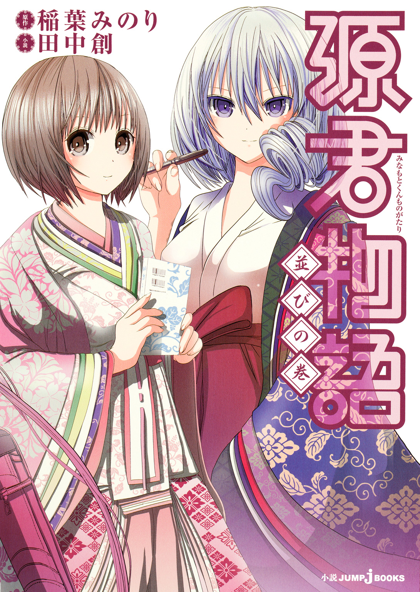
この本は縦書きでレイアウトされています。
また、ご覧になる機種により、表示の差が認められることがあります。
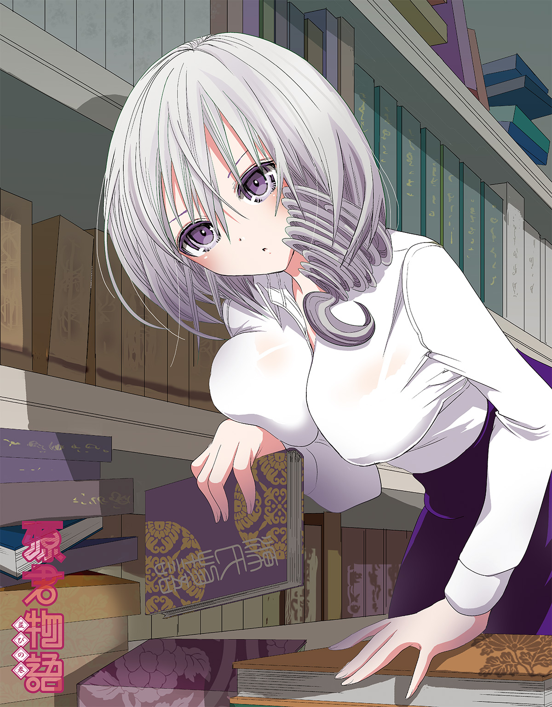
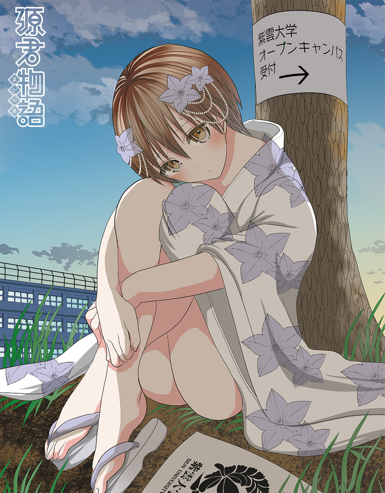
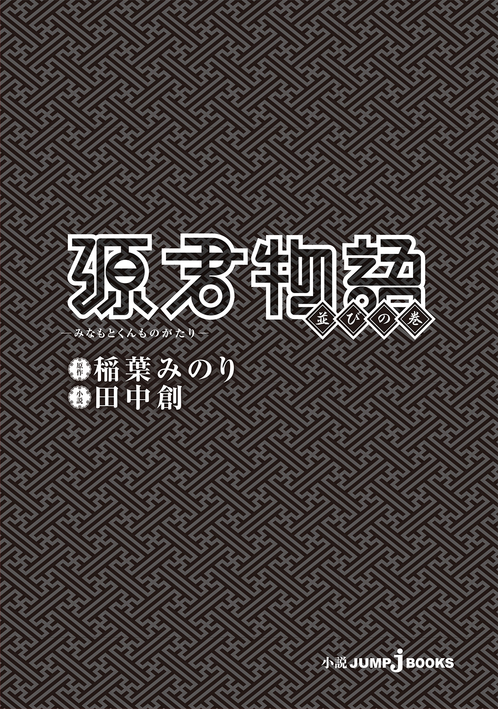
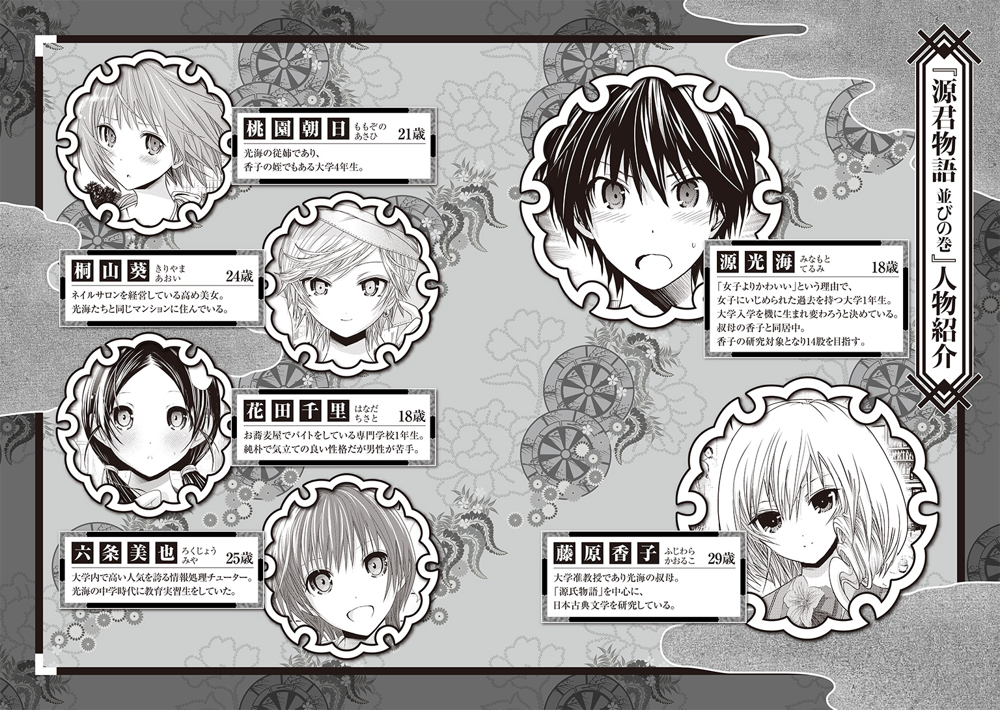
才色兼備、沈魚落雁、閉月羞花、一顧傾城、仙姿玉質。
紫雲大学の構内には、そんなきらびやかな言葉がこの上なく似合う女性が存在する。
シルクのように白く繊細な肌。上品に整えられたひと房の巻き髪。知性をたたえた切れ長の目は、ひと目見た者の心をつかんで離さない。純白レースのブラウスも、ツイード生地のタイトスカートも、大学の准教授とは思えぬほど華やかに映えていた。
『源氏物語』を中心に、日本の古典文学を研究する麗しき二十九歳――藤原香子。
今日も彼女は学生たちの熱い眼差しを一身に浴びながら、悠然とキャンパス内を闊歩している。
「はぁ～っ、藤原先生、今日もまた一段とお美しい......!!」
香子さんを遠目に見つつ、村上が、うっとりとため息をこぼした。
紫雲大学のキャンパスは、美女の多さにかけては都内屈指である。それでもなお、この友人が毎度毎度香子さんを絶賛するということは、やはり彼女の美しさは大学内でも頭一つ抜けているということなのだろう。それについてはまあ、同感ではある。
「ああ......いっそ、あの美しい指先で体中をなぶられ......あの美しい瞳に蔑まれながら、美しいおみ足に容赦なく踏みつけられたい！」
にしても、公衆の面前で恥ずかしい願望を吐露するのはなんとかならないものか。
鼻の下を伸ばす友人の隣で、光海は「おまえなあ......」とうめいた。
「他人の家族に対して変な妄想膨らませるなよ。そういうこと想像しちゃうと、なんか気まずいだろ」
源 光海は、今年の四月からこの紫雲大学でキャンパスライフを送っている。とある事情から実家を出ざるを得なくなったため、現在は、叔母のマンションに居候中。その叔母というのが、何を隠そう香子さんそのひとなのである。
「家族かあ。あーあ、マジに羨ましい。......オレもあんな美人なお姉さんと、爛れに爛れた同棲生活をしてみたいもんだぜ」
村上が苦笑いを浮かべつつ、光海の肩を小突いた。
「爛れてないっての」
村上とは高校からの仲だ。高校生といえば、光海が中学時代に受けた女子生徒からの陰湿なイジメが原因でなってしまった、女性恐怖症をまだずっと引きずっていた時代でもある。
「てか、高校の頃に村上が横流ししてきたＡＶって、そんな感じのやつばっかだったよな。『突撃隣のおねーさん』とか『義姉の誘惑』とか」
「だって源、おまえ年上系好きだろ？」
昔から村上は、なぜか光海を〝年上好き〟仲間だと思いこんでいる。
おそらく高校時代、光海が他の友人の前で同世代の女子の話題を避けていたからなのだろう。ある日村上から「女子高生なんかより、やっぱ年上だよな！」と話しかけられ、それをきっかけにエロ話に花が咲き、いつの間にか仲良くなっていたような気がする。下ネタで繫がる友情の絆――いわゆる男子校ノリというやつだ。
そして、彼が非常に趣味の偏ったＡＶを大量に貸してくれたおかげで、光海の女性恐怖症が緩和されたのもまた事実である。光海がかろうじて女性を〝恐怖〟オンリーでなく、〝性〟の対象として認識できるようになったのは――本人には絶対に、断じて言いたくないが――村上のおかげだったりするのだ。
そのことについてはそれなりに恩義は感じているし、親友だとさえ思っている。本当に気のいい奴なのだ。
ただ少し......いや、かなり自分の欲望に忠実すぎる面は否めないが。
「なあ、次はいつお前ん家に行っていい？ なんだったら、今日でもオレは大丈夫だぞ」
「いや、そもそもオレん家じゃないし。香子さんに聞かなきゃムリだろ」
つまるところこの村上という男、かなりの色ボケ野郎である。なにせ、准教授である藤原香子に憧れるあまりこの大学に入ったと公言してはばからないほどなのだ。
しかも、こともあろうに甥の光海に向かって、
『オレのはじめてはあの人に捧げるために存在する!!』
などと、身の程知らずもはなはだしい野望を語る始末。親友といえども、いや、なまじ親友であるだけに、実の叔母を欲望にギラついた目で見られるのはあまり気分がよろしくない。
「てかさ、村上。いい加減、香子さんのことはあきらめろよ」
ついつい、厳しくなってしまう光海の口調に、しかし、村上も負けてはいない。
「あきらめられるわけねえだろ！ オレはなあ、筆おろしは藤原先生って心に決めてんだぞ!? 先生の講義を取れるようになったときがチャンスだ！」
「いくら香子さんの講義を取ったからって、相手にされなきゃチャンスも何もないだろ」
「いいや、この世の中には『奇跡』という言葉が存在するんだぞ！ 源！」
無駄に凜々しく表情を引きしめ、村上が拳をぐっと握りしめる。
「ゼミに入れば、ふたりの距離はぐっと縮まるはずだ。例えば、風邪で倒れたひとり暮らしの藤原先生をオレが看病することになるかもしれない。昔から、女が弱ってるときはおとしどころって言うだろ？ 熱で目が潤み荒い息遣いのあられもない姿の藤原先生と、めくるめく愛の一夜を――『藤原先生、まぐわうことでオレに先生の風邪をうつしてください』『ふむ、試してみる価値はあるな』『先生!!』『そう慌てるな、村上君。そう、もっと優しく......』」
熱っぽく妄想を語る村上。もはやこうなると、妄想というよりは、妄執だ。
光海は若干呆れつつも、暴走しがちな友人にツッコんでやることにする。
「......いや、その前にさ。香子さん家にはオレも同居してんだろ」
そう。大前提からして大きく間違っているのだ。香子さんが病気になったところで、村上の出る幕はないだろう。
「普通に看病すんならオレがするし。なんでお前が来るんだよ？」
すると、村上がカッと両目を見開いた。
「なんだと源！ オレのささやかな夢を奪うつもりか!? はっ！ お、お前、まさか......ついに、叔母である藤原先生を女として......」
「ばっ、そんなわけないだろ!? な......何、考えてんだよ！」
とんだ言いがかりだが、まったくの事実無根でないだけに、必要以上にうろたえてしまう。こいつの妄想も、時々妄想では片づけられないときがあるから困る。
村上も村上で、言いよどむ光海の姿によからぬものを感じたのか、突然悔し涙を流しはじめた。
「許さん、許さんぞ!! 何故、おまえばかりが美味しい環境にいるんだ!! 同居の美叔母に、同じ大学に美人の従姉、しまいには隣人のキレイなお姉さんまでっ!! 不公平にもほどがあんだろ!!」
「オイ、村上！ 声、声がでかいって！」
光海が慌てて村上の口を押さえるが、時すでに遅し。
「何、アレ～」「キモイ」「マジウケる」
周囲の女の子たちがこちらを指差しながら、くすくす笑っているのが聞こえてくる。
――うっ......他人から見ると、オレもこんな感じなのかな......。
光海自身、この友人に負けず劣らず暴走癖を有しているのだから、大きなことは言えない。欲求不満な青少年というものは、何かとツライ生き物なのだ。
「ほ......ほら、次の講義始まるぞ」
苦い顔で、友を促すことにする。
これ以上の恥をかかないためにも、さっさとこの場を離れるべきだろう。
「ま、待ってくれ!! 藤原先生の美尻を今、この両目に焼きつけるから!!」
「あのなあ、他人の叔母を視姦すんなっての」
呆れ半分で村上の背中をぐいぐい押しやっていると、ふと、当の香子さんの様子が普段と違うことに気がついた。
――アレ？
通りの中央で立ち止まり、まるで熱でも測るように額に手を当てている。なんだか顔色もよくない気がする。視線もどことなく覚束なく、呼吸も荒いようだ。
まさか、本当に風邪でも引いたのか――？ 眉をひそめる光海だったが、もう一度見たときには、彼女は何事もなかったかのように再び颯爽と歩き出していた。
――気のせい......か？
おそらく、村上の煩悩にまみれた願望を聞いていたせいだろう。何気ない叔母の動作ひとつとってみても、そんな風に見えてしまったのだ。
――香子さん、風邪とか引かなそうだもんな。
まず、弱っている姿が想像できない。いや、弱っている姿どころか、困っている姿すら容易には思い描けない。いつだって威風堂々、悠然と構えている。
むしろ、自分が病気になって香子さんに看病をしてもらうほうがよっぽどありそうだ。
それはそれで、幸せかも......と思ってしまう自分は情けないのだろうか。
「ああ、藤原先生......くぅ......」
「ほら、行くぞ。村上」
未練がましくうめく友の腕を引っ張って、次の教室のある校舎へと向かうことにする。
病気なのは、むしろこいつのほうかもしれない。
＊
「ただいま帰りましたー」
遅くなってすみません、と律儀に言い添えながら、光海がマンションのドアを開ける。少しふらついているのは、長時間ゲームをやりすぎたせいだろう。
村上のアパートで友人数人と盛り上がってしまい、いつもより帰宅時間が遅くなったのだ。現在時刻は十時少し前。健全な大学生の帰宅時間としては早いぐらいだろうが、居候の身ゆえ、贅沢は言えない。
一応、帰宅が遅れる旨のメールはしてあるとはいえ、保護者としての立場から咎められてもおかしくはない。家事とか結構溜まっていたし、怒ってるかも――そんなことを思いつつ、光海は玄関から声をかける。
「香子さん？」
静まり返った暗い廊下に、しかし返事はなかった。
まだ帰ってきていないのかと思っていると、足元にぐにゃっという感触があった。どうやら、香子さんのパンプスを踏んづけてしまったらしい。光海は慌てて廊下の電気を点けてそれを拾い上げ、埃を払って元通りに置き直した。
靴がある――ということは、帰ってはいるようだ。
「寝てるんですか？」
言いつつ光海が廊下の先に視線をやると、
「ううわあああぁ!?」
思わずぎょっとして、その場で大きくのけぞってしまった。誰もいないと思っていた廊下に、香子さんの姿があったのだ。
しかも、ワイシャツ一枚で、スカートもはいていないあられもない姿で、彼女は瞳を閉じ、ぐったりとその身を床に横たえている。
いったい今度はこのひと、こんなところで何をしているのだろう。まったく意味がわからない。わからないのだが――。
「ごくり......」
仰向けの彼女の姿は、思わず息を呑むほどに美しかった。相手が叔母ということも忘れ、光海は思わずじっと凝視してしまう。
肩にかかる柔らかな髪。浅く呼吸を繰り返す薔薇色の唇。シルクの生地から覗くのは、淡雪のような白い肌――。外れたボタンの隙間から見え隠れする胸の谷間が、光海の目には妙に扇情的に映った。おそらくブラをつけてはいないのだろう、薄布一枚を隔て、彼女の形のいいバストが殊更に存在感を主張している。
下も......はいていないのだろうか。
細くしまったウェストに目を落とす。腰回りはシャツの陰に隠されていたものの、浮き出るべき下着のラインは判別できなかった。やはり、下着を着けていないようだ。
少し光海が姿勢を低くするだけで、太ももから先の世界を容易に目にすることができてしまうだろう。だが、いくらなんでもそれはさすがにマズイ。このあられもない姿の叔母を、早くなんとかしてやらねば。
「か、香子さん!? な......何してるんですかっ!?」
ガン見したくなる気持ちを抑え、叔母の肢体から視線を逸らす。声が上ずってしまったのはご愛嬌だ。
しかし香子さん、こんなところでどうして横になっているのだろう。廊下の感触が冷たくて気持ちよかったために、うっかり寝てしまった......とかだろうか。これで結構ずぼらなところもあるし、大層な変わり者でもある。裸ワイシャツで廊下に寝るくらいの奇行、このひとだったらやりかねない。
と考えて、光海はふと、別の可能性に気がついてしまう。
むしろこっちのほうが現実的だし、彼女がやりそうなことでもある。
――まさか、オレを誘ってるとか......？
なにせ、光海に現代の光源氏を目指して十四股をかけろと命じたり、女体に慣れるためと言っては際どい接触を平然と重ねたりしてくるひとなのだ。
新手の誘惑を仕掛けてきたと考えてもおかしくはない。
逸らしていた視線を、再び香子さんの下へ戻す。
真っ白なシャツに包まれた香子さんの胸元が、寝息に合わせてゆっくりと上下している。本気で寝ているのかタヌキ寝入りなのか、呼吸だけではいまいち判別できなさそうだ。
光海がごくりと唾を飲みこむ。
「あ......あの......香子さん？」
再び――今度は、おずおずと声をかける。だが、いつまで待っても香子さんからの返事はなかった。
「.........？」
さすがに妙に思ったので、今度はもっと顔に近づいて、じっくりと観察してみることにする。
長い睫毛、きめ細やかな肌、ほんのりと色づいた頰――それらはまさに、非の打ちどころもない美しさだった。普段あまり意識していないが、これほど完璧な美人が傍にいるというのは、実はとんでもなくすごいことなのかもしれない。
こんな美女に誘われるだなんて、正直、男の夢と言ってもいいだろう。
「村上の気持ちもわからないではないよな......」
光海が呟くと、眠るように目を閉じていた香子さんが、うっすらと瞼を上げた。あらゆる感情を窺わせない硝子玉のような瞳に、こちらの姿が映っているのが見える。
「光海......か？」
呼びかけられただけで、反射的にびくっとしてしまう。やましいことは一切していないはずなのに、気後れするのはきっと彼女の普段の迫力のせいだろう。思わず、「はい！」と返事をし、姿勢を正してしまったほどだ。
香子さんはすっと両目を細め、わずかに開いた唇から荒い息を漏らした。
呼吸に合わせて上下するふたつのふくらみに、光海はドキリとしてしまう。
「か......香子さん......？」
「......ん......っ......」
よく見れば、香子さんの瞳はどことなく潤んでいる。
喉から漏れるのは、はあはあと切なげな息遣い。彼女は火照った表情で、どこか物欲しげに光海を見つめている。
――これはひょっとすると、ひょっとするのでは......？
興奮の昂ぶりを抑え切れず、光海が香子さんの両肩をつかむ。
嫌がるそぶりは見られない。ということは、このまま遠慮なくＧＯしろと、男を見せろと、そういうことなのだろうか。
「か、香子さん......！ い、いいんですね――」
と、光海が顔を近づけたそのとき。
香子さんが、荒い呼吸の下から喘ぐように呟いた。
「............て、くれ......」
「え？」
「............助けてくれ」
助けてくれ、とはどういう意味だろう。少なくとも誘惑しておいて言う台詞ではない。
光海が物問いたげな視線を向けると、香子さんは息も絶え絶えに答えた。
「どうやら......けほっ......風邪を引いてしまったらしい」
「か、風邪？」
すると誘っていたわけじゃ......ない？
「身体が上手く、動かないんだ......。支えてくれ」
苦しげに喘ぎながらも、彼女はまったくもって動揺を感じさせない声で告げる。
つまりこれは完全な早とちり――香子さんが光海を誘惑しているなど、単なる誤解もいいところだったわけだ。これは心底恥ずかしい。
彼女と同じくらいに顔を赤らめて、光海はため息をつくしかなかった。
＊
必要以上に身体が密着しないように気を遣いつつ、香子さんを寝室まで運ぶ。
なるべく身体を目にしないよう移動させるのは骨が折れたが、なんとかやってやれないことはなかった。源光海十八歳、これでも男らしい男を目指して努力中なのだ。病気の女性ひとりベッドに搬送するなど、紳士としては当然の行動である。
香子さんの身体の上に薄手のタオルケットをかけ、光海は大仰にひと息ついた。
「こほっ......すまんな......私のために」
いつも居丈高な香子さんにしては珍しく、それは謙虚なねぎらいだった。逆に言えば、それだけ体調が思わしくないということかもしれない。
ベッドの上の彼女に大まかな状況を聞いてみると、具合が悪かったのはどうも今日に始まった話でもないらしい。昨夜、講義の資料をまとめていたときから、なんとなく熱と気だるさを自覚していたようだ。そこを無理して講義に出た結果、どんどん病状が悪化。なんとか帰宅したものの、休み支度をしている途中に、廊下で力尽きて現在に至る......と。
他人に頼らない香子さんの孤高さが、今回はどうやら悪いほうに作用してしまったようだ。ひと言で言えば、無理しすぎ、である。
心配をする光海に、香子さんが小さく苦笑いで応えた。
「けほっ......どうやら私は、君が帰ってくるまでそのまま気を失っていたらしいな」
まるで他人事のように答える叔母に、光海が眉をひそめる。
「ちなみに、気を失ってたのは何時間ぐらいですか？」
「ふむ――」
枕の上で小首を傾げ、香子さんが壁にかかった時計に目をやった。
「六時間ほど、のようだが」
「六時間も!? って、身体、大丈夫なんですか。熱、あるんですよね？」
あっさりと告げられた答えに、光海のほうが青ざめてしまう。
慌てて彼女の額に触れてみると――やはり熱い。あんな薄着のまま廊下に寝ていれば、そりゃあ風邪だって悪化するというものだ。正直、ため息が漏れてしまう。
「こんなに――。いえ、オレが遅く帰ってきたのが悪いんですけど......具合が悪いんだったらメールくらい寄越してください」
そう香子さんを窘めつつも、光海自身責任を感じざるを得なかった。昼間キャンパスで、彼女の様子が普段と違うことに気づいていたはずなのに。
同居人の面倒すら見られずに、なんのための居候だ――なんだか、自分で自分が情けなく思えてしまう。
そんな光海の反応を慮ってか、香子さんはふっと目を細めた。
「君は別に悪くない。体調管理を怠り、倒れたのは私の勝手だ。けほっ......君は君の友人との時間を楽しんだ。それでいいじゃないか」
その淡々とした返答に、光海は少しむっとする。
「よくないですよ、それじゃ」
香子さんの危機に何もできなくていいだなんて、それはあまりにもドライに過ぎるではないか。一緒に暮らしはじめてまだ数か月とはいえ、自分と香子さんの間にはそれ相応の絆があると思っている。たとえ今日どんなに重要な用事があったとしても、このひとがこんな状態だと知っていれば、走ってでも帰ってきたはずだ。
「とにかく、今夜はオレが看病しますから、香子さんはゆっくり休んでください」
自分にしては珍しく、強気な口調でびしっと命じたものだと思う。
それが功を奏したのか、香子さんもあっさり納得し、「わかった」と素直に頷いてみせた。
「『源氏物語』にも、源氏の君が病床の紫の上を......介抱するくだりが、ある。......今後の研究を円滑に進めるためにも......こほっ......君も女性の看病くらいはできるようになっていたほうが、望ましいだろうしな」
「こんなときにも研究ですか」
熱に浮かされたまま呟く香子さんに、光海は肩をすくめた。
「今はそんなこと忘れて、早く熱を下げることを考えてくださいよ」
彼女の額に絞ったタオルを載せ、毛布をかけ直す。
喉が腫れているのか、香子さんは何度か「こほっ」と短い咳を繰り返していた。長引く風邪じゃなければいいのだが。心配である。
ぼうっと天井を見つめながら、香子さんが口を開いた。
「こういうときに自分以外の人間が傍にいてくれるというのは......いいものだな」
「え？」
「ありがとう、と言っているんだ」
あまりにも素直な感謝である。普段は絶対に見ることのできない、レアな香子さんという雰囲気だ。そのいつになく無防備な表情に、光海はつい赤面してしまう。
内心の動揺を悟られまいと、光海は忙しなく立ち上がった。
「じゃ......じゃあ、まずは氷枕を持ってきますね。他に、何か欲しいものとか、食べたいものとかありますか？」
香子さんは少し考えた後、「リンゴ」とぶっきらぼうに呟いた。
「はい、はい。リンゴですね。すりおろしますか？ それとも、普通にカットしますか？」
「うさぎさんカットで頼む」
「はい？」
「切れないのか？ うさぎさん」
汗のせいか額にはりついた前髪の下で、美しい眉が不満げに寄る。
光海は慌てて両手を振ってみせた。
「あ、いえ、切れます――切れますけど......」
頭の中で、うさぎさんって、あのうさぎさんだよな、と確認する。
小さな子どもならともかく、大人の――しかも、香子さんのように独立したカッコイイ女性が所望するものではない気がする。
大体、料理に関して光海には苦い思い出があるのだ。あれは、この家での居候生活が始まった頃だっただろうか。光海が晩ご飯を作るにあたって、行楽弁当でもないのにウィンナーをタコさん型に切ってしまったことがあり、香子さんに『君は主婦か』と失笑されたのである。あのときは顔から火が出るほど恥ずかしかった。
しかし今度はその失笑した本人が、うさぎさんカットにしろ、ときた。
どういう心境の変化だろうと、光海が無言でしげしげとその顔を見つめる。
香子さんはまるで子どものように不満げに眉根を寄せ、ぷうっと片方の頰を膨らませてみせた。
「......できないのか？」
すねたように呟かれ、
「いえ、切らせていただきます！」
思わず即答してしまう。
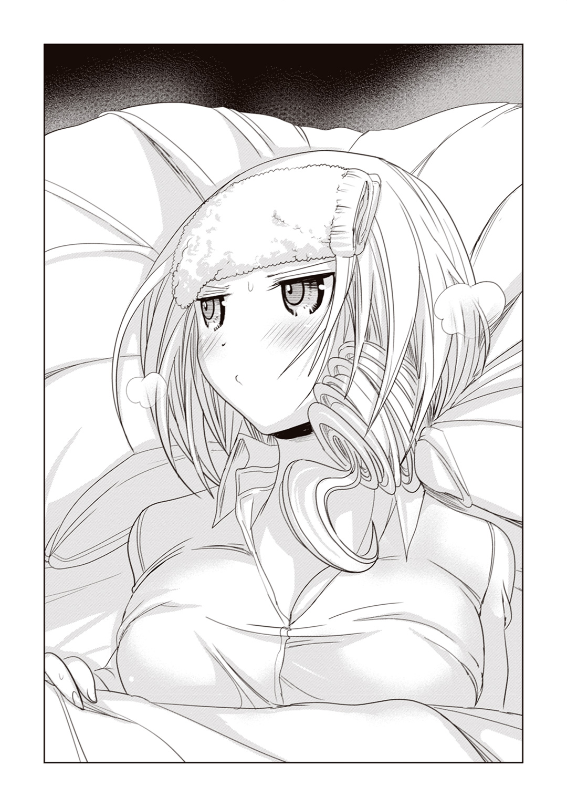
「うむ。よろしい」
両目を伏せた香子さんが、満足げに微笑んだ。
「けほっ......昔――幼い私が風邪を引いたとき、姉さんがそうしてくれたんだ」
「伯母さんが？」
「可愛らしくて、なんだか、食べてしまうのがもったいなかった」
そう言って彼女は、手繰り寄せたタオルケットで口元を覆い隠した。実際には熱のせいなのだろうが、赤く火照った目元は、まるで照れてでもいるかのようだ。
いつもの香子さんなら、絶対にこんな表情はしない。
なんか、すごく......可愛い――。
ふとそんなことを思いかけ、光海は「はっ」と我に返る。
このひとは父の妹――血のつながった叔母なのだ。近親相姦はいかん。どんなに愛おしかろうと、そこの――最低限の倫理観だけは保ちたい。時々、激しく......それはもう、ぐらぐらと揺らぐことはあるが――。
「じゃ、じゃあ、リンゴ切ってきますから。何かあったらすぐに呼んでくださいね」
口早にそう言い、光海がそそくさと部屋を出ようとすると、
「待ってくれ」
すかさず呼び止められた。
「けほん......早速だが、君に頼みたいことがある」
「――なんですか？」
弱々しい声に何気なく振り向いた光海が、そのまま凍りつく。
そこにはベッドから上体を起こし、服を脱ごうとしている香子さんの姿があった。
シャツのボタンがひとつひとつ外されていくたびに、彼女の胸や腰回り――魅惑的な身体が露わになっていく。タオルケットはベッド脇にずり落ち、その艶めかしい肢体を覆い隠すものは何もなかった。
「か、香子さんっ!? な、何を......!?」
光海にできたことといえば、両手の指で叔母との間に壁を作ることくらいのものだった。
耳に聞こえてくるのは、しゅるりという衣擦れと、脱ぎ終わったシャツがはらりと床に落ちる音。それが直視するよりも何故か余計に淫靡なものに感じて、光海は顔を引きつらせるしかなかった。
なんだか無性にエロい。このひと、わざとやってるんじゃないだろうな。
「清拭を頼む」
香子さんが、甘えたような声でそう告げた。
観念して指の隙間から彼女のほうを見ると、香子さんの白い肌が目に入る。肌は熱のせいかほんのりと桜色に染まり、汗でしっとりと潤っていた。
「せ、清拭......って」
「けほっ......体を拭いてくれ、ということだ」
ぷるんと形のいい乳房。華奢でくびれたウェスト。柔らかそうな太もも。
村上が言うところの、『女子大生がかすんで見えるほどに美しい裸体』である。それを惜しげもなく晒しながら、香子さんはとんでもないことを言っているのだ。
「シャワーを浴びに行こうと思っていたところだったんだ」
汗がベタついてかなわん――。彼女は柔らかな巻き毛を持ち上げ、もう一方の手で首筋を煽ぐ仕草をする。
これはヤバイ。色々ヤバイ。なにせ手を振るたびに、弾力溢れるおっぱいが、ぷるんぷるん、と揺れているのだ。
――あ......相変わらず、なんっつー破壊力。
指の隙間から見える素敵物体に負けじと、光海はくらくらする頭を懸命に働かせた。
身体を拭く。それは、つまり――。
「オ、オレが......香子さんの、身体をですか？」
「この流れで私が君の身体を拭くわけなかろう。......こほっ......理屈で考えたまえ」
平然と告げる香子さんだったが、いくらなんでも光海は冷静ではいられない。
だって香子さんは何も着けていないのだ。一糸まとわぬ裸体なのだ。身体を拭くということは、あのたわわなバストも魅力的なお尻も何もかも――香子さんの身体を、隅々まで丹念に直接触るということに他ならないのだ。
具体的な場面を想像してしまったことで、不意に鼻血が出そうになってしまう。今の光海は、それを堪えるだけでいっぱいいっぱいだった。
「そ、それはちょっと......色々ま、まずいというか......道徳的にちょっと――あ、お湯を汲んでくるんで、自分で拭いてもらうわけには......――」
「なにを今更」
髪をかき上げ、香子さんが、ふんと鼻を鳴らした。肩にさらりとかかった髪の毛が、ゆるやかなカーブを描いて胸元にこぼれ落ちる。
ベッドの上から誘うようにこちらを見つめている香子さんは、殺人的なまでに美しい。その薔薇色の唇は、今度こそ光海を誘うような蠱惑的な魅力に満ちていた。
「一緒に風呂にまで入っておいて......けほっ......何を言ってるんだ。君は」
「け、研究のためだって、香子さんが言ったんじゃないですか......!!」
口調こそ反発してみせた光海だが、それとは裏腹に、脳裏ではこの美しい女性と重ねてきた淫らな記憶が渦巻いていた。
極上の甘い果実のような、唇のまろやかさ。
初めて胸に触れたときの、蕩けるような柔らかさ。
ベッドで背中から抱きしめた、その身体のしなやかさ。
思い出しただけで、そのあまりの心地よさに頰が緩んでしまいそうになる。
だけどダメだ。オレと香子さんは血縁関係。ここで流されるわけにはいかない――そんな風に光海が必死で理性を繫ぎとめようとしていると、
「――確かに『研究のため』だと......こほっ......そう言ったな」
香子さんが頷いた。
「だが君のほうでも、いみじくも言ったはずだぞ？」
「え？」
彼女は少しだけ寂しげな表情で、じっと光海を見つめる。
「けほっ......今夜は、私を看病してくれるのではなかったのか？」
瞳はじんわりと潤い、両手で力なくその身体を抱いている。血のつながった叔母とはいえ、こんな表情をされるとさすがの光海も心が揺れ動いてしまう。普段、こういった弱々しい香子さんの姿を見ないだけに、攻撃力も抜群なのだ。
「それとも、アレは噓なのか？」
上目遣いにくらっときてしまう。なんだか、心臓をきゅうっと鷲づかみにされるような感覚だった。
なんでも言うことを聞いてやりたい気持ちになるが、ぐっと堪える。普段の彼女はとてつもなく頭の回転が速い女性なのだ。彼女のしおらしい態度が何らかの謀略である可能性もある以上、すべてを鵜呑みにはできない。
――ぐ......どこまで本気なんだろう......香子さんって意外に演技派だからな。
たじろぐ光海に、香子さんがすがるような眼差しを向けてくる。
十秒、二十秒――。裸の香子さんと見つめ合ったまま、時間だけが過ぎていく。
「あ、あの。香子さん。せめてタオルケットを羽織るとかしたほうが――」
痺れを切らした光海が告げると、香子は興ざめしたようにふうっと息を吐き出した。
「こほっ......なんだ。結局身体を拭いてはくれないのか」
「いや、だって、さすがにそれは」
「なら、もういい。君の友達の村上君とやらに頼もう」
「!?」
「あの子なら喜んでなんでも命じるままにやってくれそうだ。違うか？」
挑発めいた香子さんの言葉に、光海は「う」とたじろぐ。
脳裏に浮かぶのは、頰の緩みきった親友の笑顔だ。そりゃ、村上ならば喜んでやるだろう。なにせ、アイツは――。
『藤原先生、まぐわうことでオレに先生の風邪をうつしてください』
『ふむ、試してみる価値はあるな』
『先生!!』
『そう慌てるな、村上君。そう、もっと優しく......』
――っ!! だーああああああああ!!! んなこと、させられるか！
己の想像――というか、昼間、村上が鼻息も荒く語っていた妄想に、いっそ頭の中を搔き毟りたい衝動にかられてしまう。アイツと香子さんがそういうことをするだなんて、考えるだけでもイヤすぎる。
さすがの光海も、もはやこう言われては観念するしかない。ぎゅっと両目をつむり、叔母に向かって頭を下げた。
「ふ......拭かせて、いただきます」
「ふむ、よろしい」
計算通り――熱に頰を染めつつも、香子さんは満足そうに頷いていた。
＊
檜の桶に注いだお湯に真っ白な手ぬぐいを入れ、ぎゅっと絞る。
キングサイズのベッドの枕元に浅く横向きで腰かけ、光海はぐっと唇を引き結んだ。
目の前には、ベッドの中から上半身を起こした叔母の背中――瑞々しい素肌がある。
桜色の肌に浮かぶのは、いくつもの微細な汗の粒。それらが背筋を伝って臀部に流れていく様子を見ているだけで、光海の心臓はばくばくと鼓動を始めてしまう。
香子さんの全身から、大人の女性の色香が匂い立っているようだった。
「......それでは、拭きますね」
「ああ」
返事を受けて、きつく絞った手ぬぐいを、細いうなじに押しつける。ぐっと力を入れた瞬間、香子さんが小さくその身を震わせた。
「......ん」
香子さんの唇から、悩ましげな吐息がこぼれた。
「す、すみません......！ 痛かったですか？」
慌てて叔母の首筋から手ぬぐいを離す。力加減を間違えたのだろうか。うーん。ひとの身体を拭くのって難しい。
「あ、こ、今度は優しくやりますから......」
しきりに恐縮する光海を、香子さんが肩ごしに見やる。
口元が緩んでいるところを見ると、そんなに怒っているわけではないらしい。
「――いいよ。けほっ......少しくらい強めのほうが、気持ちがいい」
そのまましっかり続けてくれ、と言われ、光海は内心ほっとする。よかった。とりあえずやり方を間違えていたわけではなかったようだ。
「え......あ、はい......」
首筋から肩甲骨へ。それから背中の中央へ。ゆったりとしたスピードで、何度も手ぬぐいを往復させる。
肉付きの薄い香子さんの背中は、まるで西洋彫刻のように均整のとれた美しさがあった。しかしそれでいて、指に触れる感触は驚くほど柔らかい。油断すると、つい頰ずりしてしまいそうな魅力に満ちている。
「背中を拭くのが気に入ったのか？ ......君さえよければ、毎日してもいいんだぞ」
甘やかな眼差しと、鈴を転がすような声音。
香子さんの珍しい一面を垣間見た気がして、光海が手の中の絹布をぐっと握りしめる。
――やっぱ、いつもの香子さんと違う......可愛いっていうか、守ってあげたくなるっていうか......こう、ぎゅうってしたくなるっていうか。
そんなことを悶々と考えつつ、再び、香子さんの肩口に手ぬぐいを押し当てる。雪柳のような白い肌に浮かんだ汗の粒を、撫でるように拭っていく。
か細い首筋は、少し力を入れただけで折れてしまいそうだ。普段は男よりも偉そうに振る舞っている香子さんでも、こういう部分はしっかり女のひとなんだな――。そう思うと、胸の奥がきゅうっとなるのを感じる。
――香子さんのうなじ......キレイだ。
以前、別の女性のうなじを見たときにも思ったが、普段隠れている箇所が露わになるというのは、こうぐっとくるものがある。自分だけが、彼女の美しさを知っている――そんな独占欲とも似た、甘ったるい感覚に支配されるのだ。
この美しいうなじに、キスしたい......そんな気持ちが湧き上がってくる。
――キスはダメでも、ちょっと舐めるくらいなら......いやいや......これは看病なんだぞ、いやらしいことを考えるな......！
湧き起こる煩悩を無理やり抑えこみ、光海はできる限り優しく手ぬぐいを動かし続ける。とにかく今は、自分の欲望は二の次だ。まずは香子さんに満足してもらわなければ。
香子さんはしばらく黙って身を任せていたが、
「とても気持ちがいいぞ」
囁くようにそう言った。
「......ありがとうございます」
「女の体の扱いが......こほっ......だいぶ様になってきたじゃないか」
「いや......そんな」
「まだまだ......だがな」
こういう風に香子さんに褒められるなんて、なんだか新鮮な気分だった。正直照れる。
彼女は自分のうなじに手を伸ばすと、髪の毛をそっと指ですくい上げた。まるで光海に魅せつけるように、細い首筋が露わにされる。
正直、その仕草は反則だろう。ついドキッとしてしまう。
「もっと髪のつけねまで拭いてくれ」
そうまで言われてしまうと、彼女のセクシーな首筋を注視せざるを得ない。うっすらと桜色に染まったうなじの色っぽさに、再び欲望が湧き起こってくるのを感じる。
――な......舐めたい......っ。
思わず前のめりになりそうな身体を、光海はギリギリのところで堪えた。もはやこれは清拭という名の、内なる自分との闘いである。
――ダメだ！ 踏みとどまれ！ 香子さんは病気なんだぞ!! 何やってんだよ!?
これじゃ、村上と同じ穴の貉だ。ここで本能のままに行動したら、今後アイツを笑うに笑えなくなってしまう。
――そうだよ。オレはあの妄想エロ男とは違う......ちゃんと看病してみせる！
決意を胸に、光海が気合を入れ直す。
欲情するな。欲情するな。欲情するな――。そう自分に言い聞かせ、香子さんのうなじに手ぬぐいを押し当てる。そう、これはやましいことじゃない。風邪を引いた叔母さんの面倒を見ているだけなんだ、うん。
いつの間にか喉がカラカラに渇いていた。手ぬぐいを持つ手がブルブルと震える。
その震えが彼女にも伝わったのか、
「うなじで欲情するとは、さすが君だな」
何やら呆れたような視線を向けられてしまっていた。うわあ、しっかりバレてる。
「い、いえ！ 違います！ 欲情なんか......。あはは、大丈夫――大丈夫です......！」
半ば己に言い聞かせながら、光海は引きつった笑みを浮かべた。
確かに、自分は『モテたい』『ヤリたい』で頭がいっぱいの男だ。暴走してしまうことだって、しばしばある。
だけど、病気の女を看病にかこつけてどうこうするほど、最低野郎じゃない。
ましてや、このひとは自分の叔母だ。血縁者なのだ。
――ぜ、絶対にエロスに流されたりはしないんだからな......！
ぐっと下腹部に力をこめた光海が、再び手ぬぐいを動かす。
欲望に負けないためには、無心に手を動かし続けることだ。この白い素肌は香子さんのものじゃない。そうだ。村上あたりのゴツイ背中だと思えばいい。
目を閉じつつ、光海はゴシゴシと拭いていく。色即是空、色即是空......！
そんな努力の甲斐もあり、数分後、ついに光海はやり切った。なんとか煩悩に流されることなく、背中を拭き終わったのだ。人間、やればできるものである。
光海はひと仕事終えたことに安堵し、「ふう」と大きく息を吐き出した。
「せ......背中、終わりました」
熱い桶の中で手ぬぐいを軽くすすぎながら、ぐったりと疲れ切った声で報告する。
香子さんは「ご苦労」と笑みで応じつつ、
「では、前も頼む」
わずかな躊躇いすら見せずに、こちらを向いてきたのだ。
「へ......？ 前って......はあああああああっ!?」
目に飛びこんできたのは、惜しげもなくたゆん、と揺れる二房の果実。その先端は挑発的につんと上を向いており、光海の視線をどこまでも釘づけにしようとしてくる。
――か、香子さんのおっぱい......！
見たこともある。触ったこともある。舌を這わせたことだってある。
だが、何度その双丘を目の前にしても、光海の本能はその神々しさに抗えないのだ。
あの柔らかですべすべでぷにぷにとしたおっぱいに、全身全霊でダイブしたい。あのピンク色の先端に吸いついて、思うさま舌先で転がしたい......！
煩悩に打ち勝とうとする気力が、秒単位で身体から抜けていくのを感じる。香子さんの素敵な乳房は、理性では抗えないような暴力的な魅力に溢れているのだ。
「だ、だめですって！ それはマズイですよ香子さん！」
食い入るような眼差しで見つめておきながら、今更マズイもないだろう――我ながら情けないとは思ったが、せめてもの抵抗はせねばなるまい。これ以上その巨乳をこちらに近づけられたりしたら、もうどうなってしまうかわからないのだ。
「けほっ......もう、何度も見ているだろう？ 今更、何を恥ずかしがる」
香子さんが、ここぞとばかりに扇情的な言葉を口にする。腰をくねらせる彼女は、熱っぽい表情と相まって、なんだかとってもエロティックである。
「いや......それはそうなんですけど」
そうは言っても――、と口ごもる光海の眼前で、ぷるん、と果実が揺れる。
ほっそりとしたスタイルからは想像もできないほど豊かな胸――これは凶器だ。理性を破壊する凶器だ。胸元に浮かんだ汗が谷間を伝ってこぼれ落ちるのを見ながら、光海はごくりと喉を鳴らした。
――こうなりゃもう、やるしかないのか......!?
本能が暴走する前に、香子さんの身体を拭いてしまうべきなのかもしれない。根性でおっぱいから目を逸らし、光海は再び手ぬぐいを絞り直す。
変な気分になってしまうのは、もはや仕方のないことだろう。覚悟を決め、首筋から胸元へと、熱く濡れた手ぬぐいを這わせていく。
「そうだ。デリケートに拭いてくれよ」
言われるがまま、彼女の肉感的な乳房へと片手を添える。
適度な重量感と、ほのかに感じる香子さんの体温。ああ、なんて柔らかいんだろう。手ぬぐいを持った指先が、何の抵抗もなく深みへと沈んでいくようではないか。たわわなふたつの柔肉は、少し力を入れれば型崩れしそうなほど、光海の手の中でふにゃふにゃと形を変えている。
「......んっ......」
そのうちに香子さんが、溜めるような息を漏らした。
もしかして、この清拭が気持ちよかったりするのだろうか。彼女の表情が先ほどにも増して熱っぽいのは、病状が悪化したというわけではないのかもしれない。
――こ、これでいいのか？、なんかどんどん看病から離れていくような......！
目をぎゅっとつぶり、光海は半ば手探り状態で手を動かす。
そのときだ。柔らかな肉感の先端に、確かな硬さを持った部分を見つけてしまった。できれば、この状況ではあまり触れるべきではなかった部分だ。
――う......こ、これって......。
香子さんの、可愛らしい乳首。できることなら指でつまんだり引っ張ったりしてみたいものだが、光海にはそれをして理性を保てる自信はなかった。間違いなく、獣と化してしまうだろう。
逡巡するあまり止まってしまった光海の手を見て、香子さんが首を傾げた。
「けほっ......どうした？ 拭いてくれるんじゃないのか？」
「......ふ、拭いてもいいんですか」
「何を躊躇う。私がそうしてくれと頼んでいるんだ」
香子さんが煽るように口元を歪めた。このままやめたら光海は、「乳房ごときに尻込みするチキン」の烙印を押されかねないだろう。それは少し不本意だった。
――や、やればいいんだろ、やれば！
もうどうなっても知らない、とばかりに、光海は重点的に乳首を責めてみることにした。手ぬぐい越しに、弾くように円を描くように、執拗に指を動かしていく。
「............ぁ......」
その瞬間、香子さんがぴくんと肩を震わせ、小さく喘いだ。
思ったよりも可愛らしい反応に、なぜか光海はドキリとする。頭の中が真っ白になって。全身の血液が下半身の一部に集中していく勢いだった。
――このまま、香子さんと......――。
そんな背徳の欲望に飲みこまれそうになる光海を、香子さんが愉しげに見つめる。彼女は光海に身体を押しつけるようにして、艶めかしく囁いた。
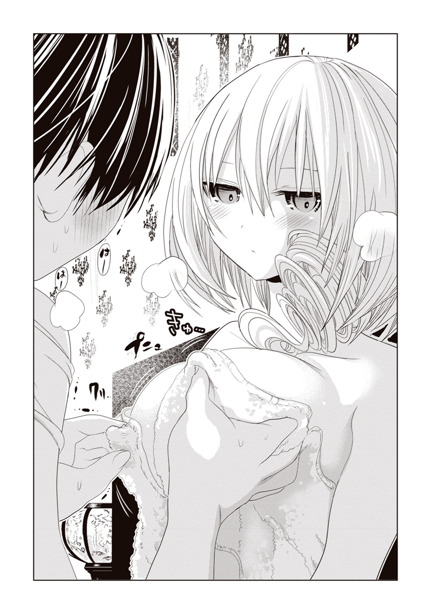
「欲望のままに行動してみるか？」
「!!」
「何度も言っているように、私はかまわんぞ」
まるで悪魔の甘言。光海がごくりと生唾を飲みこむ。
さらに彼女は耳元に顔を寄せ、ほぼ吐息だけで尋ねてくる。
「それとも、私はそれほど魅力がないか？」
「............」
声が喉の奥に張りついてしまったように出てこない。
今、少しでも動いてしまったら、理性がはじけ飛んでしまいそうだった。
光海は手ぬぐいを握った手を下ろし、呟くように告げる。
「......すごい、魅力的です」
熱に浮かされたような顔で、震える指先を香子さんの美しい裸体に伸ばしかけた......が。
すんでのところで、それを止めた。
「どうした？」
「......すんごい魅力的ですけど、今は............普通に、看病します」
香子さんの誘いを断るのに、ものすごい精神的努力が必要だったことは言うまでもない。
体が無意識にブルブル震えるのは、きっとやせ我慢のせいだろう。
そりゃあとてももったいないことをしている自覚はある。自覚はあるのだが、
「少しは成長したとこ......見てもらいたいですから」
なけなしの理性を振り絞り、光海は告げた。
大切なひとの看病くらい、ちゃんとこなせる自分を見てほしい。立派な男として認めてほしい。それは彼女の、香子さんの身体を好き放題にしたいという欲望と同じくらい、光海の中では切実な願いだった。
「............」
彼女は何も答えない。
しかし答えない代わりに、ふっと微笑んだのだ。それは、まるで花がほころぶように艶やかで、胸に染み入るように穏やかな笑みだった。
光海がその美しさに見惚れていると、
「源氏の君は――」
と香子さんが形の良い唇を動かした。ゆっくり言葉を選んでいるかのように、そっと目を伏せる。
「基本的に優しい男だ」
家臣には鷹揚で、友には誠実で、女たちには優しかった――。そう彼女は続けた。
「たった一度でも情を交わした女のことを、源氏の君は決して見捨てなかった。身分の上下、容姿の優劣に関係なく、最後まで世話し、情けをかけた。そういう男だったからこそ、周りの人間は彼を愛し、敬った」
源氏物語を語るときの香子さんは本当に楽しそうだ。
千年以上も昔の物語のはずなのに、登場人物のことを本当に慈しんでいるように語る。そんな情熱があまりにも純粋すぎて、光海の目にはとても魅力的に映るのだ。
熱のせいで潤んだ両目に見つめられると、つい胸の高鳴りを覚えてしまう。
「男の中には、女は弱っているときが狙いどきだというような輩もいるが......こほっ......その程度の浅はかかつ幼稚な考えではまずモテまい」
脳裏に村上の顔が浮かび、光海は心の中でチーンと両手を合わせた。
哀れ、村上。迷わず成仏してくれ。
「求められるのが嫌いな女などいないと、私は前に君に言ったな？」
「はい」
「ましてや、心身ともに弱っているときは、どんなに強い女性でも心優しい男性に抱擁されたいものだ」
香子さんの両目がそっと細められる。風邪を引いているはずなのに、なんだかいつになく和らいだ笑みに見える。
「......それって」
「何だい？」
「い、いえ......なんでもないです」
それって、香子さんも同じなんですか――？ そう尋ねかけ、なんとなく飲みこんだ。
この叔母は自分は男嫌いだと前に言っていた。そうなる何かが、以前にあったのかもしれない。
光海の姿をじっと見つめていた香子さんが、鷹揚に口を開いた。
「ただ、君だって嫌だろう？ 仮に君が女だったとして――高熱で苦しんでいるときに、自分本位の激しい性行為を要求されてみろ」
それは......と想像した光海が、眉を寄せる。
同性とすれば理解できなくはないが、女性の立場からしたら、
「......殴りたいですね」
光海の率直な答えに、香子さんは「そうだろう」と満足げに頷いた。
「だが、悲しいかな。......けほっ......今の世は、そんな男だらけだ。女の気持ちより、自己の快楽を優先してしまうような連中がな」
若き古典研究者は、嘆かわしげにその美しい眉をひそめた。
「男は基本的に、恋愛に対して女よりもよほどロマンチストだ。過去の失恋をいつまでもずるずると引きずるのも大抵が男のほうだろう？ だが、こと性欲に関しては、一転して即物的になる傾向があってだな......」
そこまで言ったところで、香子さんが背中を丸めた。ゴホゴホと苦しげに咳きこむ。
「だ、大丈夫ですか？」
光海が慌てて彼女の背中をさする。
直に触れる肌は熱を帯び、汗でしっとりと濡れていた。
この格好のままでは、あまり身体にもよくないだろう。光海はさっと手ぬぐいで汗を拭い、彼女の肩にタオルケットをかけてやることにした。
「ああ......すまない」
咳きこんだせいで少し荒くなった香子さんの息遣いが、再び光海を落ち着かなくさせる。咳ひとつとっても、香子さんの所作なら何もかもが色っぽく見えてしまうのだ。
再び煩悩にまみれそうになる光海の頰に、細長い指がそっと触れた。
「か、香子さん？」
驚いて目をやると、前髪の下から、香子さんがすくい上げるようにこちらを見ていた。かすかに掠れた声で、「君は」と口を開く。
「君は優しい男だ。女に慣れ、暴走さえしなくなれば......こほっ......心の底から君を愛し、慈しんでくれる女性はきっと現れる」
「............」
「女の心まで抱きしめられる男になれ」
香子さんの眼差しも、その声音も、いつになく優しかった。
いつだったか、彼女が傷ついた光海の頭を撫で、その胸に抱きしめてくれたことがあった。そのことを思い出し、光海は胸の奥が締めつけられるようになる。
光海は感情の赴くまま、香子の華奢な身体を抱きしめた。煩悩の結果としての抱擁ではない。目の前のひとが愛おしく思えて、身体が勝手に動いてしまったのだ。
「大丈夫です。変なことはしません。ただ香子さんのこと、ぎゅっと抱きしめたいだけですから」
「......光海」
腕の中で、香子さんが何度か瞬きをしつつ、
「君の体の一部は、その発言に大きく反抗しているようだが？」
揶揄するように視線を下げた。
「う......そ、その点に関しては勘弁してやってください」
「なんともしまらない男だな。君は」
香子さんが笑う。
「恰好をつけるなら、最後まで恰好をつけたまえ」
「すみません」
彼女は「謝らなくていい」と告げ、光海の頭に指を伸ばした。まるで光海を愛おしむかのように、頭を優しく撫でつける。
「君のそういうところ、私は嫌いじゃないよ」
香子さんが耳元で囁く。その甘い響きに光海がきょとんとしていると、次の瞬間、唇に柔らかい感触を覚えた。
――え......？
押し当てられていたのは、香子さんの唇。
深く、蕩けるようなキスだった。
何度も角度を変えて口づけられ、濡れた舌に口内を弄られる。頭の芯まで痺れてきたところで、ようやく彼女の唇が離れた。
「まあ、これは今日のお礼だ」
「か......香子さ......ん」
「こほっ......これで君に風邪をうつしてしまったら、すまない」
あまりの気持ちよさに朦朧としてしまう。まるで自分まで熱が出ているような、ふわふわとした心境だった。
――もっと、香子さんが欲しい......！
光海が、もうひとつキスをおねだりしようと身を乗り出したところで、
「おやおや。さっそく前言撤回か？」
「あ」
不意に我に返る。何もしないと言ったばかりでこれだ。まったく、今日は己の不甲斐なさにうろたえているばかりのような気がする。
香子さんは「我慢しろよ」と悪戯っぽく微笑むと、光海の鼻の頭を指先できゅっとつまんだ。そして再び身体を近づけ、光海の肩にそっと手を伸ばす。
「ただ、抱きしめてくれるんだろう？」
甘い吐息が耳にかかって、なんだかくすぐったい。
今度は、頭の芯まで蕩けそうになった――。
＊
「――オイ。いい加減に起きなさい。いつまで寝ているんだ、君は」
「......んー......香子、さん......？ いつ服なんか着たんですか......？」
心地よいまどろみの中から、ぼんやりと目を覚ます。
目の前には、バッチリ決まった叔母のスーツ姿。いつもと同じ、凜々しい藤原先生だ。
光海はそれを、ぼけっとした表情で見つめている。
――あれ、どうしたんだっけ。確か昨日は、風邪を引いた香子さんの看病をしてて......。
寝ぼけ眼で記憶を整理するうちに、光海はようやく状況が飲みこめるようになった。
「って――......オレ、あのまま寝ちゃった!?」
香子さんを抱きしめたまま悶々としているうちに、眠ってしまったのか。
慌ててベッドから飛び起きると、両肩から何かがはらりと落ちた。
薄手のタオルケットだ。おそらく寝入ってしまった自分に、香子さんがかけてくれたものだろう。
――う......看病するって言っといて先に眠っちゃうとか、どんな役立たずだよ!?
光海が激しく落ちこんでいる一方で、香子さんにはそれを特に気にする様子も見られなかった。彼女は顔色を変えずにドアノブに手をかけ、
「朝食を作ってある。一緒にどうだ？」
「あ......待ってください」
光海は慌てて立ち上がり、叔母の下へ駆け寄った。
「香子さん、もう起きて大丈夫なんですか？ なんだったら、今日も休んでたほうが――」
「いや。おかげ様で、すっかり回復したようだ」
それだけ言って優雅に巻いた髪をひるがえし、彼女はさっさと部屋を出ていってしまった。その後ろ姿はすっかり普段通りだ。昨夜は結構酷そうな風邪だったのに、一日で完治させるあたり、さすが香子さんである。
大事に至ることなく叔母の体調が戻ったことに、光海はほっと安堵する。だが本音を言えば、少しばかり残念な気もしないでもない。もう、あの無防備で愛らしい姿は見られないのか、と。
――って、そりゃさすがに不謹慎すぎんだろ、オレ。
後ろ頭を搔きながら、光海は香子さんの後を追ってリビングに向かった。
リビングのテーブルには、漆塗りの椀がふたつ、ほのかな湯気を立てていた。中には真っ白なお粥が注がれている。
香子さんの朝ご飯はいつもこれだ。
源氏物語の作者である紫式部が、朝に粥を好んで食べたことからこうしているらしい。香子さんらしいこだわりの食生活だと言える。
もっとも、光海にとっては、慣れるまでの間どうにも戸惑う慣習だった。この三月まで、父とふたりの男所帯だったのだ。朝は基本的に簡素なパン食だったし、粥など、それこそ病気のとき以外に食べた覚えがない。前に食べさせてもらった茶粥などは、ここに来て初めて口にしたものだ。
――まあ、今じゃ香子さんの顔を見ながらお粥を食べるほうが日課になっちゃってるけど。
薄味なお粥でも、彼女と一緒ならなぜか美味しく感じられるから不思議だ。
すでにテーブルについている香子さんの前に座り、光海は「いただきます」と両手を合わせた。
そうしてしばらく、ふたりで淡々とほのかに甘い粥を啜っていると、
「そういえば」
香子さんが唐突に口を開いた。
「リンゴを食べ損ねた」
「あ......」
言われてみれば、そんなものを頼まれていた。用意してこようとしたところで、先に体を拭いてくれと言われ、欲望と葛藤の果てにそのまま寝てしまったのだ。
――香子さん、あんなに楽しみにしてたのに......。
昨夜、弱々しく床に就いていた香子さんのことを思い出す。
「すみません。オレ、今から切ってきます」
「いや、いい」
席を立つ光海を制し、香子さんがそっけなく言う。「もう風邪は治っている」
「......ですよね」
すみません、と再び謝罪の言葉を口にし、光海がしおしおと椅子に腰を下ろす。それをじっと見ていた香子さんが、ふと口元を緩ませた。
「では、次のときにお願いするとしよう」
「......え？」
「また私が風邪を引いたら、君が看病してくれるんだろう？」
艶然とした微笑みは、昨日と遜色ない可愛らしさで。
しばしその美しさに見惚れた光海の胸の奥に、香子さんの言葉がじんわりと溶けていく。
――なんか、すげぇ......うれしいかも......。
自分がこのひとに頼りにされているような――もっと言ってしまうなら、甘えられているような、そんな気がするのだ。
この自分が。あの香子さんに――。
「どうした？ 変な顔して」
「......あ、いえ、します！ また香子さんが風邪引いたら、オレが看病します！」
勢いこんで返答する。
香子さんはふっと微笑むと、粥を食べはじめた。
光海も再び箸を取る。
いつもと同じ朝の光景――。
けれど、少しだけいつもとは違う朝。
今では食べ慣れた粥を啜りながら、光海はいつかくるかもしれないその日を想像する。そしてあまつさえ、その日を楽しみに思っている不謹慎な己に気づき、少しだけ赤面してしまうのだ。
くしゅん、とひとつ、小さなくしゃみを漏らしながら。
紫雲プラザは、駅に隣接する大規模商業施設である。
東京ドーム三個分の敷地面積に、二百を超える小売店数。映画館やレストランも完備され、フードコートには子ども向けの遊具やステージなども用意されている。子どもからお年寄りまで、幅広い層が楽しめるショッピングモールというわけだ。
特に今日のような土曜日の昼下がりともなれば、その賑わいのほどをよく窺い知ることができるだろう。メインストリートを歩く親子連れやカップル客は、みな和気あいあいとショッピングに興じているようだ。
だが、皆が皆楽しく笑顔を浮かべているかというと、そうでもない。
週末の穏やかな雰囲気からはほど遠く、冷や汗まみれで絶体絶命のピンチに直面している――そんな買い物客もいたりするのだ。
「い、いいわね。あんた、大きな声を出したら半殺しだから」
桃園朝日は可能な限り声を落とし、相手の耳元でそう囁いた。
朝日が窮地に立たされているのは、ランジェリーショップの試着室の中。この直方体の手狭な空間の中で、なんと男と密着することを余儀なくされてしまったのである。
ランジェリーショップといえば、普通は男子禁制の空間である。それも試着室ならば、なおさら男性が足を踏み入れることはないだろう。こんな場所で男と鉢合わせるなど、砂漠で雪男に出会う確率に等しい。
――なのに、なんでこいつはここにいるのよ......！
相手の背を奥の鏡に押しつけながら、朝日は相手を強く睨みつける。
顔は美少女、でも中身はオオカミ。
下着姿で絶対顔を合わせたくない従弟ランキング堂々一位の男。
その男――源光海は、ばつが悪そうに頰を搔いた。
「そんなに怒るなよ。オレだって不可抗力だったんだから」
「わかってるわよそのくらい。あんたがここに自分の意思で入ってきたんだとしたら、半殺しどころか速攻で警察呼んでるわ」
問題は、こいつが試着室にいることを、外の店員さんに絶対に悟られてはならないということである。だいたい、今の自分はあられもない下着姿なのだ。こんな格好で光海と密着しているところを見られでもしたら、あらぬ誤解を生じさせてしまうだろう。
「とにかく、ふたりっきりだからって前みたいに変なことは絶対しちゃだめよ。あんたは、香子さんに言われたことだけやればいいの」
朝日が眉間に皺を寄せると、この間の悪い従弟は、こくこくと頷いた。
ただ、どういうわけか笑みを引きつらせ、視線をあちらこちらへと彷徨わせている。なんだか様子が変だ。
「ちょっと、なんでそんな挙動不審なの」
「い、いや。ほら、当たってるから」
当たってる......？
朝日が視線を落とすと、自分の胸元が目に入った。
薄手のブラ一枚によって、かろうじて隠されているバスト――それは今や、正面から男のシャツへと大胆不敵に押しつけられ、たわわにその形を変えていたのである。
「――っ!?」
一気に赤面。
朝日は、自分が今とんでもなく破廉恥な姿勢でいることに気がついたのである。
できることならすぐにこの身を離し、空いた右手で目の前のスカポンタンを張り倒してやりたいところだった。だが、いかんせんそれは無理というものである。
カーテンの檻で囲まれたこの空間は、足場がたったの九十センチ四方。もちろん人間ふたりが入ることなど到底想定されてはいない。当然殴り合いなどしようものなら、一発で店員さんに見つかってしまうだろう。
もはや朝日に残された選択肢は、目の前のこの男と身体を密着させ、香子さんに課せられたミッションをこなすことだけだったのである。
――ああもう、最悪っ......！
緊張と焦燥と苛立ち、そして妙な胸の昂ぶり。
朝日の思考回路は、ショート寸前にまで追いつめられてしまっていた。
間違いなく、今日は厄日である。
＊
時を遡ること二時間ほど前。
思えば本日の不運は、午前中からすでに始まっていたのかもしれない。
「はああ......」
グラスの底に残ったアイスラテをストローで啜りながら、朝日は頰杖をつく。じめじめと蒸し暑い六月の陽気と相まって、気分は果てしなくレイニーブルーであった。
ここは紫雲プラザの一階、駅側出入り口近くのカフェテリアである。
そこそこの規模の街なら、どこにでもあるようなチェーン店だ。四十席ほどの禁煙席は、様々な客で賑わっている。
おしゃべりに興じる客、カップルでイチャイチャする客、ＬＬサイズのジャンボパフェに挑戦する客など――十人十色の週末を謳歌している姿が見受けられる。
誰も彼も、皆すごく楽しそう。悩みなんてまったくなさそう。彼らとスーツ姿の自分を見比べながら、朝日は深いため息をついた。
「世の中で一番精神的に追いつめられてる人種って、たぶん就活生よね」
「うん、まあ、気持ちはわかる」
そう答えたのは、隣に座った月子だ。
彼女もまた朝日と同様、就職活動の真っ最中である。清潔感溢れるパンツスーツに、化粧や香水も控えめナチュラル系。髪型も普段学校で見かけるツーサイドアップではなく、後ろでまとめた無難なスタイルだ。
今日の午前中は、朝日も月子もそれぞれ別の場所で面接の予定があった。せっかくだから終わった後にふたりで合流して、昼食がてら報告会でも――というノリで今に至っている。ツナサンドをひと齧りし、月子はふっと苦笑いを浮かべた。
「っていうかその様子じゃ朝日、今日の面接は、あんま上手くいかなかったみたいね」
「んー、まあ、そんな感じ」
「隣町の公立図書館だっけ？ なに、緊張してしどろもどろになっちゃったとか？」
「いや、そういうわけじゃないわよ。質問も、事前に予想した通りだったし」
実際、面接の問答は概ね完璧にこなしたと朝日は思っている。
当館に対する印象、自分が読む本のジャンル、ゼミでの研究テーマ。面接官の質問に対し、朝日はきちんと用意した通りの答えを返せていたはずである。ついでに言えば、即興でやらされた絵本の朗読だって、トチることなく最後までやりきった。
そう説明する朝日に、月子は「え」と首を傾げる。
「成績も基準値を超えてるし、香子さんの推薦状だってあるんでしょ。それでその出来なら、全然問題ないと思うけど？」
「それがさあ、面接の最後に言われちゃったのよ。『君にはなんとなく、華がないよね』って」
「はあ、華？」
「そう。大人の雰囲気っていうの？ 『真面目なだけの司書は掃いて捨てるほどいる。図書館の顔になりたいなら、多少は色香も必要だよ』とかなんとか」
「色香ねえ......ふーん。そういうもんかな」
「図書館司書に華も色気も要らないでしょうが。ああ、アッタマくるわ！」
朝日は手にしていたグラスを、どん、とテーブルに叩きつけるように置いた。先ほどの面接官のドヤ顔を思い出すと、今でもはらわたが煮えくり返るような思いである。
「まあ、ちょっとセクハラかもね、それは」
月子が肩をすくめてみせた。
男なんてそんなもん。どうせ見た目しか見てない。そんな上司がいるとこなら、むしろ不採用のほうがいいくらい――そんな風に、彼女は朝日を慰めてくれたのだった。
さすがは二次元愛好家の月子である。現実の男性に対しての評価は、非常にシビアなものがある。
「うん、そうそう。さすが月子はわかってる」
「とはいえ、その面接官の言ったことも一理はあるような気がするけど」
「え」
急に手のひらを返されるとは思わなかった。
「華がない、ってのはあながち間違ってないかもね。朝日に大人の色気があるかって言われると、それは疑問の余地があるし」
大人の色気がない。それはつまり、女性としての魅力に欠けているということだ。来年から社会人になる身としては、これは割とキツイ指摘である。
「う、うそ。だって私、二十一だよ？ 立派な大人の女だよ？」
「うーん、どうかなあ......」
月子が、朝日の頭の先から爪の先まで。じっと視線を這わせる。
「たとえばそのリクルートスーツだって、なんとなく着せられてる感が強いよね。子どもが無理して背伸びしてます......って感じで」
親友の歯に衣着せない一言に、朝日は「おおう」と面食らった。
正面のウインドウガラスをじっと見つめる。そこに映ったスーツ姿は、確かにどこか違和感を覚えないでもない。
――もしかして、私ってマジで色気ない......？
くりくりの丸い瞳に、ぷに然としたほっぺた。肩口くらいの長さのヘアスタイルは、子どもの頃からあまり変えた記憶もない。
そういえば朝日は、よく童顔だと言われることが多い。実際、大学四年生になった今でも、キャンパスを歩けばいまだに新入生と勘違いされて、サークルの勧誘を受けてしまうくらいなのだ。
「ま、別に悪いことじゃないと思うけどね。色気なんてなくても朝日は可愛いし。普段のフェミニンな服装なら、文句なく似合ってるよ」
そうフォローをしてくれる月子だったが、朝日はどうも釈然としない。
少し前までの朝日だったら、そんな指摘をされても別にどうということもなかっただろう。男から見た女の魅力なんてどうでもいいでしょバカバカしい、それより来週発売のコミック誌のほうが気になるわ――と、そんな軽口でも返していたに違いないのだ。
だが今の朝日は、この問題をそう簡単に流す気にはなれなかった。
――まさか、アイツにも地味だとか子どもっぽいとか思われてたりはしないわよね。
どうしても、光海の顔が脳裏にちらついてしまうのだ。
光海自身がガキっぽい（むしろ少女っぽい）容姿なのはさておき、光海の周りにはなぜか大人の色香全開の美人が多い気がする。香子さんしかり、同じマンションの知り合いだとかいうあのいけ好かないお姉さんしかり。ああいう年上美人と比べられたら、朝日などお子様にしか見えないだろう。光海が朝日に対して時折妙に強気なのも、もしかしたらこちらを子どもと侮っているせいなのかもしれない。
これはゆゆしき事態である。
光海にバカにされないためにも、早急になんとかしなければなるまい。
「ね、ねえ月子。大人の色気を磨くにはどうしたらいいと思う？」
「え、どしたの。今更努力しても、今日の面接の結果はどうにもならないと思うよ」
「いや、面接はどうでもいいのよ。なんていうか、その、たまには私も女らしく努力をしなきゃなーって思っただけで」
「へー、朝日にしては珍しい。これまでそういうの無頓着だったくせに」
月子が、不思議そうにじっと朝日を見つめる。それからややあって、「ははーん」と楽しそうに口元を歪めた。
「もしかして、男絡み？」
「ち、違うわよ？」
「んー、朝日の三次元男子との交友関係といえば、源君ぐらいのもんだよねえ。年下の従弟を、お姉ちゃんの魅力で籠絡したいと思っちゃったり？」
「だから、違うって言ってるでしょうが。あんたの小説のネタと一緒にしないでよ」
「あはは、オーケーオーケー、まあ理由は他にあるってことにしておきましょう」
月子がニヤニヤしながら、朝日の肩をぽん、と叩く。
なんだか内心を見透かされているような気がして、朝日はどうも気が気でなかった。この親友は時折、妙にこういう事情に関して鋭さを発揮するのだ。
「ま、まあともかくさ。女磨きの方法、一緒に考えてよ」
「うーん、でも実際、私もそういうのは疎いからなあ。......参考文献をお薦めするくらいしかできないよ」
そう言って、月子は座席に置いたバッグをごそごそと探る。
取り出したのは、一冊の女性ファッション雑誌だった。学生よりももう少し上の世代を対象にした、ハイブランド紹介がメインの雑誌である。
「別に普段から読んでる雑誌ってわけじゃないんだけどさ。今朝、面接までの待ち時間があんまり長かったもんだから、暇つぶしに買ってみたんだ」
パラパラとめくってみると、カジュアルからフォーマルまで、さまざまな着こなしをするモデルの写真が並んでいた。朝日にとっては、どのモデルもはるかに自分よりも大人でキレイに見えてしまう。
「ふむ、『イイ女になる裏ワザ＝オシャレな下着！』......」
目に入った見出しのタイトルを、なんとなしに呟いてみる。
なるほど大人の女とやらは、魅せる下着にもこだわるものらしい。
普段母親にすら「地味な下着」だと言われてしまっている朝日には、それはこれまであまり考えたこともない発想であった。
――こういうとこから、もうちょっと意識したほうがいいのかな。
思い出すのは、前に光海が自分の部屋に来たときのことだった。あのときは散々アイツに下着やら何やら色々と見られてしまったが......もしかして、知らず知らずのうちに地味扱いされていたのではないだろうか。そう思うと、今更ながら後悔を感じてしまう。
そんなこちらの顔色を覗きこむように、月子が声をかけてきた。
「やっぱ、下着が気になる？」
「うん。やっぱ下着こそ、手を抜くべきじゃないのよね......」
記事に目を落としながら、朝日がぼんやりと呟く。
『カレの心をつかむセクシーランジェリー』『大胆な貴女に目が釘づけ』......。たとえばここで紹介されているような下着を自分が身に着けたら、アイツはどう思うのだろう。
悶々とする朝日に向けて、隣の月子がくすりと頰を緩める。
「なら、いっそこれから買いに行っちゃおうか」
＊
思い立ったら即行動、である。それからすぐに朝日は、月子とふたり、ランジェリーショップ巡りに繰り出すことにした。
プラザ内を二、三軒ほど回ってたどり着いたのが、ここ『アンダーキュート』である。
壁や床が明るい基調で、入りやすい店舗である。テナント面積も広めで、アイテム数も他店より多いようだ。同年代の店員さんがいるというのも心強い。
この手のお店に不慣れな朝日にとっては、比較的敷居の低い店舗だと言えた。ここで探すのが一番手っ取り早いかもしれない。
「さて、あいつに馬鹿にされないような下着は、と......」
ラックにかかった壁一面のカラフルなブラジャーを、朝日はひとつひとつ吟味していく。赤のチェック柄、ピンクのパステル、ブルーのドット。フリル付きにリボン付き。へえ、着やせブラなんてものもあるのね――。
ひと口に下着とは言っても、数も種類も豊富である。
選択肢が多いということは、それだけ選ぶのも難しいということだ。ここは、大人の女らしく、焦らずじっくりと選ぶべきだろう。
そうやってしばらく下着とにらめっこをしていると、
「ねえねえ、これなんてどう？」
月子に肩をちょんちょん、とつつかれる。
彼女が示しているのは、壁際のマネキンのようだ。そのマネキンの身に着けたランジェリーを見て、朝日は「うわっ」と目を疑った。
黒いレース地のブラとショーツに、同色のガーターベルトとストッキング。布面積を減らすことがコンセプトにでもされているのか、ブラは刺繡部分を除けばシースルーだし、ショーツに至ってはＴバックにしか見えない。
大人の色気というか、これらはまごうことなきエロ下着である。
「ちょ、ちょっと待ってよ月子。これはいくらなんでもないわ」
「えー、そうかな。大人っぽく見せたいなら、このくらい冒険してもいいと思うけどね」
「大冒険すぎ！ あんた、自分でこんなの着けられるの？」
「うーん......。まあ、私はともかく、選ぶのは朝日だし」
月子がふっと笑みを浮かべ、続ける。
「レディコミ読んでるだけでも、もっとエッチなの出てくるじゃない。このくらい大丈夫だって。男の子から見れば、むしろ物足りないくらいだと思うよ？」
「ホントかなあ......」
月子の言葉に首をひねる。
光海も、こういう破廉恥めいた下着が好きなのだろうか。この手の下着を着こなせるのは、もっと煌びやかで妖艶な女性――たとえばあのマンションのお姉さんみたいな――だと思う。絶対に自分には合わない。
朝日はため息混じりに、隣のラックにかかった薄桃色の下着を指差した。
「私はむしろ、こっち系の下着がいいと思うんだけど」
どちらかといえば、それはシックなデザインの下着だった。
ただ、ワンポイントでつけられたフリルと花柄の刺繡が、清楚なお洒落さを演出している。
「可愛いと思わない？ 少なくとも、これなら地味じゃないと思うんだけど」
「うーん、悪くはないけど、ちょっと大人しすぎるかなあ」
どうやら月子は、あまり納得がいっていないようだった。
「やっぱこの際、朝日はもっと派手でもいいと思うけど」
「そりゃ、さっきのエッチな下着に比べればなんだって大人しく見えるわよ。でも、こっちだって上品な色香って感じでいいじゃない」
「ふう、甘いわ朝日。男に色気をアピールしたいなら、インパクト重視でいかなきゃ」
そう言う月子の手には、さきほどのセクシー黒下着がワンセット抱えられている。
彼女はそれを朝日へと押しつけながら、
「とにかくさ、気になったのはいったん全部試着してみれば？ どっちがいいかは鏡の前で決めればいいよ」
「えー......」
「案ずるより産むが易しってね。私は、大胆下着も結構似合うと思うけどな」
「まあ、月子がそこまで言うなら」
せっかく付き合ってくれた親友の提案を、無碍にはできない。
それにどうやらこのお店、普通のランジェリーショップとは違って、ブラだけではなくショーツの試着までさせてもらえるらしいのだ。お客様満足度第一位を目指しているらしく、専用のサポーターまで準備しての徹底ぶりである。
ここまでお膳立てされていては、試着しないで帰るのはもったいないかもしれない。
月子オススメのセクシー下着と、その他自分で選んだ下着を数点抱え、朝日はフィッティングスペースへと向かった。店の奥にはカーテンで仕切られた個室が三つほど用意されており、店員さんが快く使用を許可してくれる。
「寸法の測定はいかがなさいますか？」
声をかけられ、朝日は「え」と一瞬戸惑った。どうやらこういう専門店では、店員さんがわざわざバストやウェストのサイズを測ってくれるものらしい。
「数字上のサイズは同じでも、メーカーによって寸法が異なる場合もございますからね。いったん測定されるのをオススメしますよ」
店員さんに促されるまま、朝日は空いている試着室の中へ。
正面に大きな鏡、脇にラックが備えつけられた簡素な空間だった。思ったより狭く見えるが、下着屋さんなら普通こんなものなのかもしれない。
「ではお客様、失礼します」
「あ、はあ」
朝日にとっては、はじめての経験である。
面食らっている間に、店員さんに手早く上着とブラウスを脱がされてしまった。
脇の下に回されるメジャーの感触がなんだか妙にくすぐったい。見ず知らずの他人にサイズを測られるというのは、結構なカルチャーショックである。
――まあ、女の店員さん相手ならまだ我慢できるけどね。
これが男相手だったら、たまらず悲鳴をあげていただろう。
というか、異性に身体を触られる経験なんて、後にも先にもアレだけで十分だ。
「むう......」
あの夜アイツにベッドでされたことを考えると、ついつい頰が熱くなってしまう。あのときはもう、頭が真っ白になって何も考える余裕すらなかったほどだし。
しかも最悪なのは、自室のベッドで横になるたびに、あの日の恥ずかしさが甦ってくることだった。正直言えば、悶々として眠れない日も何度かあった。その火照りを冷ますために自分でしたことだって――。
「......はい、終わりましたよ」
「え？」
気づけば、店員さんが朝日に向かって微笑みかけていた。ぼうっとしている間に採寸が終わっていたらしい。
「こちらの商品、お客様のサイズで問題ないようです。では、ごゆっくりご試着をどうぞ」
慣れた手つきでランジェリーを棚に並べ、彼女はカーテンを閉める。教育が行き届いているのか、愛想のいい店員さんである。
「さて」
試着室に残された朝日は、黒のショーツを手に取った。
月子イチ押しの一品だが......何度見てもエロティックだ。
「まあ、ものは試しってやつよね」
自分に似合うとは到底思えないが、せっかくだから試着してみよう。
朝日は身に着けている下着を脱ぎ捨て、勇気を振り絞ってショーツに足を通すことにした。
「うう、布が心許ない......」
だが、ここまできたら矢でも鉄砲でも持ってこい、という感じだ。その勢いで、ブラ、ストッキング、ガーターベルトまできちんと装着する。
サポーターをしているはずなのに、なんだかすーすーする。特にお尻。
鏡に映った自分の姿を見て、朝日はさらに面食らった。
「うわあ......」
ブラはバストがこぼれ落ちそうほど小さいし、ショーツの透け方はギリギリのライン。むっちりと太ももを締めつけてくるストッキングも、妙に蠱惑的だった。
極めつけはガーターベルトだ。インドア派の太ももの白さと相まって、黒が見事なコントラストを生み出している。
艶やか......と言えば聞こえはいいが、これはもう、予想以上にエロスな有様だった。
「大人の色気っていうか、痴女......？」
もしかして月子、私をからかうつもりでこれを着せたのかしら――。これは一言文句を言ってやらねばなるまい。
朝日はカーテンの隙間から売場を覗きこみ、
「ねえ月子！ やっぱりこの下着はちょっと――」
と言いかけて、口をつぐむ。
あれ。月子が見あたらない。てっきり近くにいるはずだと思ったのに。
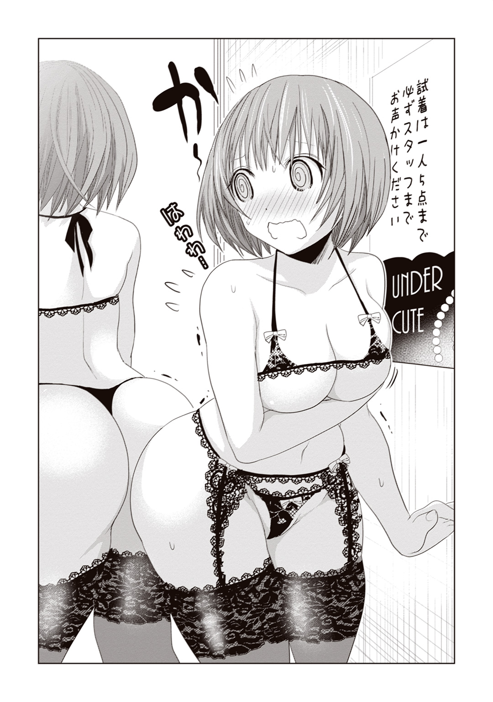
レジや陳列棚をきょろきょろ見回してみたのだが、彼女の姿は店内のどこにも見つからなかった。もしかして朝日が試着している間、プラザ内の他の店で暇つぶしでもしてくるつもりなのだろうか。
「ん？」
店内を見回しているうちに、朝日は意外な人物を見つけてしまった。
スリット入りの小洒落たスーツを身にまとった、モデル級の美女である。
上品な巻き髪を手で払いながら、切れ長の目で棚を睥睨するその姿――ただ下着類を物色しているだけなのに、このひとがやるとなんでも絵になるから困る。
「あ、香子さん」
藤原香子。朝日のゼミの担当教員にして、美人すぎる叔母である。
彼女は朝日を認めると「やあ」と口元を緩め、試着室の前へとやってきた。
「奇遇だな。君も買い物か」
「ええまあ。ついさっきまでは月子と一緒だったんですけど」
「ふむ。そっちも連れがいるのか」
そう言って、香子さんが店の入り口に目を向けた。
そこにはショッピングバッグを両手に抱え、所在なく立ちすくんでいる連れの姿があった。無地のＴシャツの上にパーカーを合わせ、チノパンにスニーカーというラフな服装。パッと見で可愛い女の子にも見えるが、あれの中身が男だということは、朝日はよく知っている。いや、男どころか、ケダモノだとさえ言ってもいい。
「光海も一緒......なんですね」
「ああ。荷物持ちだ。男手があると、こういうときに重宝するよ」
香子さんが目配せをしたことで、光海も朝日の存在に気づいたようだった。
光海もこちらに向けてぎこちなく愛想笑いを浮かべてきたが、朝日はそれを思い切り無視してやることにする。だいたい、ランジェリーショップなんかで会いたい相手ではないのだ。
すると突然、香子さんが「そうだ」と手を打った。
「朝日。君はもしかして、下着選びで悩んでいるんじゃないか？」
「あ、ええと、そうですね。月子が変な下着を選んだりするもんで、ちょっと難航してるんですけど」
香子さんこそ理想的な「華のある」女性である。
彼女のようなひとから意見をもらえれば助かるのだが、さすがに今このカーテンの中身は見せられない。血のつながった叔母に、破廉恥娘扱いはされたくはないし。
「そうか。ならちょうどいい」
香子さんはふっと薄く笑うと、入り口の光海に向けて手招きをした。
彼は一瞬戸惑ったものの、顔を赤らめながらこちらにやってくる。
「な、なんか用ですか香子さん。この店、男のオレがいていい雰囲気じゃないと思うんですけど」
光海の言葉に、朝日も内心うんうんと頷く。
できることなら、コイツは早くここから立ち去ってほしい。カーテン越しとは言っても、彼の近くで恥ずかしい格好をしているのは辛いのだ。
しかし香子さんが告げたのは、そんな朝日の期待を根底から裏切るような言葉だった。
「光海。君が朝日の下着選びを手伝ってやれ」
「「は？」」
絶句する。奇しくも、光海と同じタイミングで絶句する。
「え？ い、いや、オレ、女の子の下着のことなんて何もわからないですよ？」
「そ、そうですよ香子さん！ 何もこんなヤツに私の下着を選ばせなくても......！」
いったいこのひとは、また何を考えているのだろう。
困惑する朝日と光海とは対照的に、当の香子さんは涼しい顔である。
「わかってないな、君たちは。そもそも女性のお洒落というのは、殿方の気を惹くためのものだ。それは平安の世から変わらない真理だと言える」
言いつつ彼女は、光海の手からショッピングバッグを奪い取る。
「下着だってもちろん同様だ。その良し悪しは、男性の目から判断されるべきものだと言っても過言ではない。どんなランジェリーなら、ベッドで男性の目を惹きつけられるのか――朝日も年頃の女子なら、それを知っておくのも悪いことではないよ」
「は、はあ......」
香子さんの堂々とした口調に、ついつい「そうかもしれない」と思わされてしまう。
実際、彼女の言葉にも一理あるのだ。朝日がこの店を訪れたのも、男性の視線を気にしていたのが大きな理由だったわけだし。
朝日はその元凶となった男性に、ちらと目を向ける。
当の光海は、香子さんとこちらの顔色を窺いながら、笑みを引きつらせていた。
「そ、そうは言ってもですね。さすがに従姉の下着を選ぶのは色々抵抗があるっていうか......いや、従姉じゃなかったら平気なのかって言われると、もちろんそういうわけでもないんですけど......」
「煮え切らないな、君は。源氏の君のような一端の男を目指すのなら、女性の下着を選ぶセンス程度は養っておけ」
香子さんは有無を言わさず、光海の背中を押した。
バランスを崩した光海が、「うわっ」と情けない声をあげる。
こともあろうにこの男、そのまま試着室に倒れこんでくるではないか。
「きゃ、ちょっと......！」
カーテンの隙間を通り抜け、光海の身体が朝日にもたれかかる。
不意に抱きしめられたような格好になり、朝日は思わず飛び上がりそうになってしまった。
「ご、ごめんっ！」
光海は赤面したまま、慌てて身体を離す。
が、ようやくそこで朝日の格好に気づいたのだろう。「うえ!?」と素っ頓狂な声をあげ、赤かった頰をさらに真っ赤に染めてしまった。
まあ無理もない。女の子の下着姿をこんな近距離で直視するというだけでも赤面ものだろうに、そのうえ当の下着が、着けている本人だってどうかと思うレベルのエロ下着だったのだから。
「朝日って、こういう趣味だっけ......？」
「い、いや！ これは違うわよ！ 月子が選んだだけでっ！」
「な、なんかすごく......刺激的な......」
朝日の身体を隅々まで凝視しながら、光海がごくり、と喉を鳴らした。
「だから、私の趣味じゃないからね!? うう、そんなにじっくり見ないでよっ......！」
見るなと言ったところで、どうしても目には入ってしまうだろう。試着室は、息が触れ合いそうなほどに狭い空間なのだから。
「ほう、そんなに意外だったのか、朝日の下着は」
カーテンの向こうから、香子さんの声が聞こえてくる。
「ともあれその調子で、下着を品評してもらうといい。光海の視点は、きっと朝日の役に立つはずだ」
「そ、そう言われても」
「ちなみに光海。朝日の手伝いもせず、そこから逃げられるとは思うなよ」
香子さんの言葉に、光海は「へ」と呆けたような顔を浮かべた。
「足元を見たまえ」
香子さんの言葉に従い、足元に視線を落とす。
光海の足首に括りつけられていたものを見て、朝日は目を疑った。
「か、香子さん!? なんですかこれ!? 手錠!?」
当然一番驚いていたのは、光海本人である。
それは直径十五センチほどの、銀色に光る金属製の輪っか――刑事ドラマでよく見る、あの手錠だった。それがいつの間にやら、光海の足首に嵌められていたのだ。
手錠のもうひとつの輪は、チェーンを介して試着室のカーテンのポールにはまっているようだ。確かにこれじゃ、光海がいくら逃げようと思っても逃げられない状況ではある。
「意気地のない君たちのことだ。これくらいお膳立てしてやらねば、下着品評など出来ないだろうと思ってな。......なに、心配するな。終わったらちゃんと鍵は渡してやる」
特に抑揚もない声で、彼女はそう告げた。
甥っ子の足首に躊躇なく手錠を取りつけ、姪っ子の下着を品評させる叔母さん......薄々は思っていたが、香子さんというのはまったくもって変わり者である。変人と言ってもいい。研究職というのは、皆こういう感じなのだろうか。
「あのう、この手錠はいったいどこから調達してきたんです？」
朝日の問いに、香子さんが「ああ」と答える。
「私の後輩に、この手の物騒な道具を色々揃えているやつがいてな。最近そいつから押収した物なんだが......。こんなこともあろうかと持ち歩いていて正解だったよ」
こんなこともあろうかと、で手錠を持ち歩く香子さんも香子さんだが、こういう道具をたくさん持っているというその後輩さんも、たぶんまともな常識人ではないような気がする。これが類友というやつなのか。
「しょうがないわね......」
ともあれこうなってしまった以上、もはや選択肢はなかった。香子さんの言うとおり、光海に下着を選んでもらうしかないだろう。
当の光海も真っ赤な顔で、朝日の胸元に目を落としていた。
「と、とりあえずその、頑張るから」
なにが「頑張る」よ。まったく......！
密着するほど狭い密室で、訳ありの従弟とふたりきり。しかも自分はあられもない下着姿。
正直、恥ずかしすぎてどうにかなりそう......。
＊
「......いい、それじゃ次にいくわ。絶対目を開けないで」
「う、うん」
光海の目に触れないよう、朝日は細心の注意を払って下着を交換する。
これで四着目だっただろうか。暑い。辛い。恥ずかしい。汗ばんだ額を拭いながら、そっと朝日はショーツを脱ぐ。
狭い空間での着替えは思ったよりも厄介だった。どうしたって、正面の光海に腕や足がぶつかってしまうのだ。
「あてっ」
「ごめん。でも狭いんだから我慢して」
目を瞑ってもらっているとはいえ、男子のすぐ目の前で生着替えというのはかなりの精神力がいる作業である。圧迫面接どころの比ではない。心臓はさっきからすごい勢いでばくばく言ってるし、背中の冷や汗だってナイアガラレベルである。光海のほうもそうなのか、時折落ち着かなさそうにため息をついていた。
そういえば、前に似たようなシチュエーションを漫画で読んだような気がする。
あれは確か『背徳†アブノーマルＫＩＳＳ』の四巻――主人公の女の子が、気になるアイツとロッカーに閉じこめられてしまう話だ。密着描写がなかなか過激で、タッチやキスだけにとどまらず、最後にはロッカー内で事を致すまでに及んでいた。
もし、雰囲気でそういうことになっちゃったらどうしよう。果たして自分は流されないと断言できるだろうか――。光海の顔を見上げながら、朝日はごくりと息を呑んだ。
「いいわよ、目を開けて」
光海に告げる。
朝日が身に着けたのは、比較的シンプルな白の上下だった。肩ひもが細めで、朝日的には、コケティッシュな魅力があると思っている。
「あ、うん、これは結構いいかも」
光海がじっと胸を凝視する。
「寄せて上げるって、こんな感じなんだ」
「ちょっと。胸ばっかりじっと見ないでよ」
視線に耐えかね、朝日は腕で身体を覆い隠す。さすがにさっきのエロ下着ほどではないにせよ、それでもやはりじっくり観察されるのは恥ずかしい。
「え、でも、ちゃんと見ないと判断できないし」
「そ、そうだけど......うう、そこは空気読んでよ！」
光海を睨みつけているうちに、不意に声を荒らげてしまった。
と、それが売り場まで聞こえてしまったのか、
「お客様、何かお困りですか？」
カーテンの向こうから声がする。
まずい。先ほどの店員さんだ。
とっさに「なんでもありません！」と返事をしたはいいものの、内心ヒヤヒヤものである。光海の存在がバレるわけにはいかない。さすがに男子禁制の店内での不純異性交遊はご法度だろうし、最悪、大学にも通報される恐れがある。事情を話したところで、店側が信じてくれるかどうかもわからないのが恐ろしい。
もうすでにこれだけ恥ずかしい思いをしているのだ。こんなことで卒業単位取り消しにでもなってしまったら、それこそおおごとである。
「はあ。では何かあったらどうぞ」
店員さんが去る足音を聞いて、朝日はとりあえずほっと胸を撫でおろした。
「とりあえず、当面の危機は去ったわね......」
「いや、そうでもないかも」
光海が、いつになく真面目な表情で朝日をじっと見つめている。
「え、どういう意味？」
首を傾げる朝日。
光海は言いにくそうに、少しだけ目線を下げた。どうやら彼の視線は、朝日の胸元に注がれているようだ。
気になって朝日も視線を下ろしてみると――なんとビックリ。
いつの間にやら、胸がむき出しになっていたのである。
「え、ええええええええっ!?」
ホックをきちんと閉めていなかったせいなのか。サイズが合っていなかったせいなのか。気づかぬうちにブラが大きくずれてしまっていたようだ。
いや、理由を分析している場合でもないだろう。
今や乳房も乳首も何もかも、まさに光海にガン見されている真っ最中なのだから。
「や、やだちょっと！ 見ないでよっ！」
「お、落ち着いて朝日！ ほら、ブラジャーならオレが着けてやるから！」
何を思ったのか、光海は外れかけたブラに手を伸ばしたのである。
自分の肌に密着していた下着を、男に触られているというこの感覚――。身体を見られるのとはまた違った羞恥心に、朝日の脳みそは一瞬で茹で上がった。
「なな、なにしてんのあんた!?」
「だってほら、早く着けなきゃだろ！ フロントホックなら正面からのほうが着けやすいし――。ああもう、あんまり動かないでよ！ 変なとこ触っちゃうだろ！」
というか、もうすでに触っている。
無理やりブラを直そうとして、光海は思い切り朝日のおっぱいに触れている。むしろこれは、鷲づかみの領域である。
「ちょっと光海......ひうっ!?」
思わず変な声が出てしまった。
光海の五指がふにゃりと朝日のバストに食いこんだ瞬間、背筋にびくん、と電流のようなものが走ったのだ。くすぐったくて恥ずかしくて、頰がかあっと熱くなる。
「へ、変態！ あんた、実は最初っから触る気満々だったんでしょ!?」
「違う！ オレはあくまで朝日を手伝ってるだけだよ！ 事故だよ事故！」
事故だと言いつつ、光海は手をどけようとしない。驚くほど真剣な表情で、朝日の乳房をじっと凝視している。
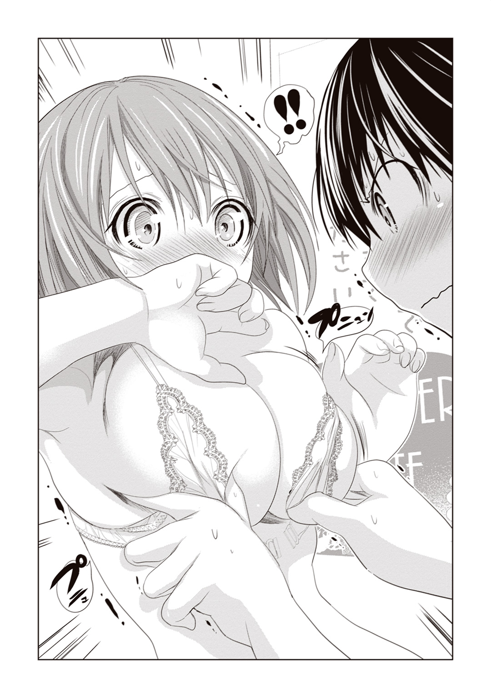
「なんで固まってんのよ......！」
「だ、だって。朝日の身体って、すごく綺麗だから」
光海の呟きに、今度は朝日が固まってしまう番だった。
すごく綺麗だから。
下心百パーセントの発言であることはわかっている。しかしなぜか朝日は、光海に綺麗だと言われて悪い気はしなかったのである。それどころか、とくん、と胸が高鳴ってしまったくらいだ。
「見惣れちゃったもんはしょうがないだろ......！」
「ばっ、あ、あんた......！ この状況でなに変なこと言ってんのよ！」
しどろもどろになりつつ、朝日はそっぽを向く。ダメだ。このままこいつをじっと見つめていたら、変な気分になってしまう。
朝日の心臓は、先ほどから凄まじい勢いで鼓動を繰り返していた。胸に触れている光海も、おそらくそのことは気づいているのだろう。
彼ははにかみながら「あのさ」と口を開いた。
「キ、キスとかしても、いいかな......？」
「キッ、キス!?」
驚きのあまり、声が裏返ってしまった。急になにを言いだしたんだ、この男は。
「なんていうかその、照れてる朝日がすごく可愛く思えちゃって......」
「か、可愛いって......」
どくん、と心臓が跳ねる。
光海ごときの言葉に、どうして自分はここまで動揺しなくてはならないのか。朝日は必死に冷静さを取り戻そうとしているのだが、身体のほうがなぜか言うことを聞いてくれないのだ。
全身がしっとりと汗ばみ、頭の中が沸騰しそうなほどに熱い。ショーツの中も、もはや大変なことになってしまっている。サポーターがなければ大惨事だった。
流されちゃいけない。ここで前みたいに光海に唇を許したら、行き着くところまで行き着いてしまうだろう。あの少女漫画みたいに。
朝日はぶんぶんと首を振り、
「ダメに決まってるでしょ！ こんなとこでキスなんて！」
「でも、カーテンの中なら誰にも見られないし......」
言いつつ、光海はじっと朝日に顔を近づけてくる。
女々しい顔をしているくせに、最近の光海は時折やたらと積極的な面を見せることがある。朝日のほうがお姉さんのはずなのに、こうして迫られると、いつも断りきれなくなってしまうのだ。
熱を帯びた瞳で、光海は朝日をじっと見つめる。
「ダメ？」
彼のもう片方の手が、そっと朝日の背中側に回された。急に感じた手のひらの感触に、朝日は「あうっ」と声を呑む。
この狭い試着室の中では、光海を突き飛ばすわけにもいかない。光海の存在が一発で外にバレてしまうだろう。
通報の危機と貞操の危機。絶体絶命の状況に、朝日の思考回路は完全にパニックを起こしていた。
「ダ、ダメ！ ダメに決まってるでしょ！」
朝日が叫んだそのとき。
唐突に背後のカーテンがさっと開かれた。
「あの、お客様。周りの方のご迷惑になりますので――」
振り向くと、さっきの店員さんとバッチリ目が合ってしまった。
「あ」
試着室の中でブラを奪い合う朝日と光海の姿を見て、彼女はきょとん、と目を丸くしている。
――ああ、ヤバいわ。これ......。
朝日はどうしていいかわからず、完全に硬直するしかなかった。
どうやら光海も同様のようで、ただただ茫然と口を半開きにしている。
もはや言い逃れはできないだろう。店員さんにとっては、朝日も光海と同じ変態なのだ。もはや出禁は免れまい。ああさようなら、大人の下着。さようなら卒業単位。
とにかくひと言謝らねばと、朝日は口を開きかけたのだが、
「仲がよろしいのは結構ですが、試着室はおひとり様ずつご使用くださいね」
店員さんは、にこりと微笑んでみせただけだった。
あれ、怒られない？
朝日は首を捻る。視界に入ったのは、少し離れたところで状況を観察していた香子さんだ。
彼女は何やら、楽しそうに口元を歪めている。
「そりゃ女の子同士なら、さほどの問題でもあるまいよ」
その言葉で、ようやく納得。
朝日はほんの少しだけ、この従弟の少女然としたルックスに感謝するのだった。
＊
「ただいま朝日ー。いいの決まった？」
ランジェリーショップに戻ってきた月子は、ブランド名の入ったバッグをいくつか携えていた。
実は月子という女の子は、結構なお嬢様だったりする。時折こうやってふらっと高い買い物をしても、その懐が痛まないくらいには。
店を出ようとする朝日に向かって、月子が微笑みかけた。
「すぐそこで香子さんと源君に会ったけど、もしかしてさっきまでこのお店にいたの？」
「そう。香子さんのお買い物に、光海が荷物持ちで付き合ってるんだって」
「へえ、それは偶然だね」
言いつつ、彼女は朝日の持っている袋に目を落とす。
「で、朝日は結局どんなの買ったの？」
「言っとくけど、あのすっごくエッチなやつじゃないからね」
いくらなんでも、あの黒下着を買う勇気は朝日にはなかった。だいたい光海だって少し引いていたくらいだし。
「買ったのは、最初に見てたフリルと花柄のやつだよ。私的にも第一印象で一番好みに合ってたし、『朝日らしくていい』って意見もあったしね」
「ああ、意見もらったってことは、香子さんに選んでもらったのね」
うんうん、と月子が納得したように頷いた。
「なるほど、朝日が妙に満足げなのはそのせいか」
「え、満足げ？ 私そんな風に見える？」
「うん。自分じゃ気づいてないかもしんないけど、結構ニヤニヤしてる」
「そ、そうかなあ......」
ふと、自分のほっぺたに手を当てる。まあ確かに、多少緩んでいるような気はするけれど。
でも、その気持ちもわかるよ――と、月子。
「朝日が一番いいと思った下着を、香子さんが太鼓判を押してくれたわけでしょ。あのひとこそ、『ザ・華のある女』って感じだもんね。あの香子さんにセンスを認められたんだから、朝日が機嫌良くなるのも当然だよ」
「あー......そういうこと」
実際のところ、下着を選んでくれたのは香子さんではない。
月子の言うとおり自分が上機嫌なんだとしたら、それはこの下着を選んでくれたアイツと好みがマッチしたから、という理由になってしまうわけで――。
それを素直に認めるのもなんだか癪なので、月子に真実を告げるのはやめておくことにした。
「ああいう素敵なお姉さんが親戚にいるのは羨ましいな。私も香子さんチョイスでお買い物してみたいかも」
月子が、憧れに満ちた眼差しを向けてくる。
「いや、やめたほうがいいかもよ？ すっごい恥ずかしい目に遭うから」
「え？ どういうこと？」
「まあ、その辺は内緒ということで」
教えてよー、と追いすがる月子をあしらいつつ、朝日はショップを離れる。
さて、今日買ったこの下着、どういう場面で使えばいいのだろうか。
通学用かレジャー用か、はたまたいつ来るともしれぬ勝負用か。もしかして、またアイツの前で着る機会が来たりするのだろうか。
あんな恥ずかしい思いはもう勘弁......と思う反面、心のどこかでは大人の魅力を見せつけてやりたいという気持ちもある。
乙女心は、結構複雑なのだ。
立葵の花言葉は『気高く威厳に満ちた美』だという。
光海が〝はじめて〟を捧げた彼女も、その名の通り美しく、そして、とてつもなく気位の高い女性だった。
閑静な時間が流れる紫雲大学のキャンパスに、けたたましいクラクションが響きわたる。
授業に向かう学生たちにとっては青天の霹靂だったのだろう。派手な高級外車が正門に横付けされたのを見て、みな一様に、いったい何事かと怪訝な表情をしていた。
驚かなかったのは、光海くらいのものである。
「やっぱ、目立つよなあ......あの車」
あの外車の持ち主――彼女は時折、気まぐれで大学に顔を出すひとなのだ。今度はどんな用向きだろう。
光海が首を傾げていると、がちゃりとドアが開かれた。中から降りてきたのは、その車以上に人目を惹くような、見目麗しい女性である。
すらりと伸びた長い脚。色合い鮮やかなミュール。モデル並みにスレンダーな肢体を包むのは、露出度の高いワンピースドレスだ。煌びやかに彩られたネイルは、彼女の自慢の作品だろう。今日も彼女は、挑発的な視線を光海に向けている。
つくづく思うが、平凡な学び舎を訪れるには、まったく相応しくない美女である。その芸能人ばりの美貌には、周りの学生たちも揃って目を奪われているほどだ。
「こんにちは、葵さん」
桐山葵――ネイルサロンの経営者にして、香子さんと同じマンションの住人である。
光海と彼女の関係を、ひと言で表すことは難しい。「犬と主人」「おもちゃと所有者」「下僕と女王様」――いろいろと複雑なのだ。
「乗りなさい」
彼女は愛想笑いや『久しぶりね』などといった無駄話をすっとばし、愛車に向けて細い顎をしゃくってみせた。
「え？ 乗れって......今ですか？」
「むしゃくしゃしてるの。付き合いなさい」
光海の都合などまるでおかまいなし。傲岸に告げるその姿はまさに女王様だ。周囲の学生の視線を一身に集めながらも、まるで気にも留めない。他人に見られることに慣れきった人なのだと、改めて感服する。
「あの、葵さん。オレ、今から必修の講義があってですね......――」
おどおどと答える光海に、女王の切れ長の両目が細められる。
「私が乗れと言っているの。命令よ」
別に、彼の返答にいらだっているわけではない。焦れているわけでもない。冷ややかなその眼差しは、あたかも遥か上空から見下ろしているかのようだ。
葵さんにとっては、光海を誘ったのも単なる気まぐれなのだろう。むしゃくしゃさえ解消できれば、別に何でもよかったのかもしれない。
――だけど。
光海にとってこれはチャンスだった。この車に乗りこめば、あの夜のような状況が再び訪れるかもしれない。
――あのときは葵さんの特殊な『癖』に驚いて、あんなことになっちゃったけど......今度こそ......絶対、最後までいけるはず......！
自然と呼吸が荒くなる。尻切れトンボのような形になってしまった初体験へのリベンジ心が、ムクムクと湧き上がってくるのだ。男として、この好機を無碍にしてはいけない。講義と男のプライド。どちらが大事かなど考えるまでもないのだ。
「の、乗ります！ 是非、乗らせてください！」
気づけばそう答えていた。
さながら主人に忠実な犬だ。もし、この尻にシッポが生えていたら、それこそ全力で振っていただろう。
「――いい子ね」
そこで初めて、葵さんがくすりと頰を緩めた。
すまし顔も綺麗だけど、笑顔も素敵なんだよな、このひと。
できることならその笑顔を、もっと蕩けさせてみたい。もはや冷静ではいられないほどに、この手で乱れさせてやりたい。
指先で車のキーを弄ぶ彼女を見つめながら、光海はため息をついた。
野生動物のようにしなやかで、均整のとれた美脚。決して大きくはないものの、つんと上を向いた形のいい胸。まさに、黄金比とも呼ぶべきスタイルである。男だったら、誰もが一度はこんな美女と添い遂げたいと思うに違いない。
オレだって必ず、葵さんをベッドの上で満足させてやるんだ――光海はごくりと喉を鳴らし、そんな風に決意する。
意気ごむ光海を尻目に、葵さんは優雅に愛車のドアを開けた。
「ご褒美に、いいところへ連れていってあげる」
まるで誘うように光海を見やる。
大胆にあいたその胸元には、小ぶりな金色のネックレスが輝いていた。チェーンの先端で揺れているのは、おそらく本物のダイヤモンドだろう。透き通るように白い胸の谷間でキラキラと輝くそれは、まるで氷の結晶のような神秘性を帯びている。
お洒落な彼女のことだ。きっとシャワーの後でも、そのネックレスは外さないに違いない。湯上がり美女の肌に煌めく、一粒のダイヤモンド――まるで映画のワンシーンである。きっと葵さんのバスローブ姿なら、ハリウッドでも通用するだろう。
葵さんの濡れ場ムービーを脳裏に描くだけで、光海は下腹部のあたりが熱くなってくるのを感じた。
そんな光海の内心の劣情を知ってか知らずか、
「すっきりするわよ、色々とね」
葵さんが耳元に唇を寄せ、蠱惑的に囁いた。
そんなことをされては、否が応にも期待が高まってしまう。
光海も健全な男子大学生である。その頭の中は、もはや淫らな妄想でいっぱいになってしまっていたのだった。
＊
「......ここが、すっきりする場所ですか？」
「ええ、そうよ」
困惑気味に尋ねる光海に、葵さんが平然と答えた。
ここは『クイーンズガーデン紫雲』。繁華街にある会員制高級ホテルである。
先ほど車がこの建物の駐車場に入ったときには、光海の興奮は最高潮に達していたものだった。
こんな日の高いうちからホテル。それも、超セレブ御用達の宿泊施設である。
リッチな葵さんのことだから、庶民には手が出せないようなスイートルームを使う気なのだろう――光海はそう判断した。
見たこともないくらい大きなベッドに、絢爛豪華な調度品。サイドボードには、何十万もするようなワインが置かれていたりするのだ。年代物のオールドヴィンテージとか、たぶんそういう感じのやつ。
そんなラグジュアリーな空間で、見目麗しき彼女と思いのままに情を交し合う――想像するだけで胸が熱くなる。まるで王様か何かではないか。香子さん風に言えば、平安貴族の逢瀬だ。源氏の君が女性と過ごす夜も、庶民からみればこのくらいリッチだったに違いない。
しかし、フロントで受け付けを済ませた葵さんが向かったのは、そんなスイートな部屋ではなく。
「プール......ですか」
「他に何に見えるの」
ホテルの屋上に備えつけられていた、室外プールである。
大きさはおよそ二十メートル四方くらい。プールサイドにはパラソルやビーチチェア、バーカウンターが設置されている。なかなかに成金趣味だった。
リラクゼーション空間を演出したいのだろう、サンルーフ越しの日光を浴びて、ヤシの木が青々と茂っている。都会の真ん中のホテルでありながら、さながら南国のリゾートといった雰囲気だ。
客の年齢層は全体的に高め。平日の昼間からこんな場所で優雅に過ごしているあたり、かなりのハイソな人々に違いない。実際プールサイドに寝転んでいるのは、業界人っぽいオジサンや、有名私大に通うお坊ちゃんお嬢様......そんな感じの連中だった。
一般庶民たる光海にとっては、なんとも気後れしてしまう場所である。少なくとも、初体験のリベンジなど考えられる場所ではない。
呆然とする光海に目配せしながら、葵さんが頰を緩めた。
「仕事でイライラすることがあると、たまに来るの。泳ぐとすっきりするわよ」
葵さんの水着姿は、プールサイドの視線を独占するほどに素敵なものだった。
胸元に金の留め具がついた白ビキニは、ゴージャスかつセクシーのひと言。留め金の奥に見え隠れするミルク色の谷間は、思わず顔を埋めたくなるほど魅力に満ちていた。惜しげもなく晒された腹筋も大理石のように真っ白で、腰へのＳ字ラインも実に艶めかしい。
なるほど、彼女の華奢な肢体の魅力を実にうまく引き出している水着である。ホテル内のショップで急きょ購入した物とはとても思えない。肩に羽織ったデニム地のシャツとも、よく色合いのバランスがとれている。
ちなみに光海の穿いているサーフパンツも、ついさっき買ってもらった物だったりする。とはいえ葵さんとは違って、光海のことなど誰も注目はしないだろうが。
「泳ぐとすっきり......そうですか。すっきりってそういう......」
期待が大きかった分、自然と声のトーンが低くなってしまう。そりゃ水着姿だって悪いものではないけれど、だってホテルといえば、ねえ？
「どんな想像をしたの？ あなた」
葵さんが氷のように冷ややかな眼差しを向けてくる。
「いえ......それは、その」
「あなた、変わってないのね」
彼女はふう、と小さくため息をつくと、水着の上に羽織っていたデニムのシャツをおもむろに脱ぎはじめた。
露わになった葵さんの白い肩は、実に細くて綺麗――光海が葵さんの素肌に釘づけになっていると、突然視界がデニム地で覆われた。
「うわっ!?」
彼女がシャツを投げてよこしたのだろう。頭に覆いかぶさった布から、そこはかとなく葵さんの匂いがする。
「それ、濡らしたらお仕置きよ」
「え。そんな急に......」
どうやら彼女は、さっさとひとりで泳ぎに行ってしまうつもりらしい。相変わらず光海のことを小間使いのように扱うひとだった。なんて女王様気質。
光海が慌てて頭からシャツをはがすと、すでに葵さんはプールの中に飛びこんでいる。
「まったく勝手だなあ」
華麗に水をかき分ける彼女のクロールは、実に美しいものだった。まるでプロの水泳選手のようにフォームがしっかりしていて、素人の光海でさえ洗練されているとわかるくらいである。泳ぎ慣れているといった印象だった。
なるほど、葵さんの完璧なプロポーションの秘密は、こうして水泳を嗜んでいることにあったのかもしれない。ご主人様の秘密をひとつ知った気分で、なんだか嬉しい。
そんな風に光海がプールの彼女にぼうっと見惚れていると、少し離れたビーチチェアからも感嘆のため息が聞こえてきた。
「あのひと、めっちゃキレイじゃね？ 芸能人？ モデルとか？」
「ああ。なんにせよすげえイイ女。声かけちゃうか」
大学生くらいの集団だろうか。小麦色の肌のギャル男たちが、連れている女の子ほったらかしで葵さんに鼻の下を伸ばしている。まあ葵さんのセクシーな白水着は、この場の誰よりも魅力的なのだ。気持ちはわからないでもないけれど。
もっとも、それは女の子たちの気に障ったようで、
「ちょっとケンくん。彼女連れで他の女に声かけるとかありえないんだけど」
「そうだよ。ていうか、向こうだって男いるでしょ。あっこで荷物持ちしてる子」
「え？ アレ、女の子じゃねーの？」
「バーカ。男物の水着着てるじゃん。胸もないし」
「あ、ホントだ」
「でも、彼氏には見えなくね？」
「あー、んじゃ弟とか」
「じゃなきゃさしずめ、ペットってとこかもね」
キャハハ、という遠慮のない笑い声が光海に向けられた。
大学生になって多少耐性がついてきたとはいえ、女性から受ける嘲笑はいまだに慣れない。身が強張ってしまう。
――それにしても、ペットとはね......。
女に間違えられるのはいつものことだが、ペット呼ばわりは酷い。やはり自分では、到底葵さんの彼氏には見えないということか。
実際、今日だってデートまがいのことをしているはずなのに、手のひとつも繫いでいなかった。男として、いったいそれはどうなのか。中学時代よりはマシになってるつもりでいたのだが、実際には、自分で思っているほど成長していないのかもしれない。
――十四股なんて言っても、結局、ひとりの心もモノにできてないしさ......。
憂鬱なため息を吐く。
視線の先の葵さんは、ギャラリーの目など一顧だにせず、ゆったりとマイペースで遊泳を楽しんでいる。彼女は光海とは真逆で、自分に自信のあるタイプなのだ。
圧倒的な能力に裏打ちされた、確固たる自信――正直、そういう部分には憧れる。
彼女はとんでもない大企業の社長を父に持つお嬢様で、ネイルサロンの若き経営者でもあるのだ。美貌やスタイルだけではなく、美的センスや経済力も抜群。あらゆる意味で完璧な女性である。光海だって香子さんという繫がりがなければ、一生お近づきになれないような高嶺の花だっただろう。
――オレって、ホントにこのひととエッチしたんだっけ......？
妄想じゃないよな、と自分で自分の記憶を疑いたくなる。
情けなさから再び嘆息する。思わず手にしていたシャツをぎゅっと握りしめると、そこにほのかな温かさを感じた。
――ああ、葵さんの匂い。
うっとりするような甘い香り。気づけばそれに誘われるように、光海はシャツを顔に当て、くんくんと犬のように匂いを嗅いでいた。
自分のように何のとりえもない男が、彼女のようなパーフェクトな女性とデートをしている。そんな夢のような状況を証明するものは、もはやこの残り香くらいしかないのではないか。虚しさを感じつつも、光海はシャツを抱きしめることをやめられなかった。
「ねえパパ、今日はいっぱい遊んでくれるんでしょ」
幼い声で我に返る。
はっと振り向くと、背後に五歳くらいの小さな女の子がいた。父親に手を引かれながら、無邪気な笑い声をあげている。
「ああ、久しぶりに休みが取れたからな。今日はパパ、さつきとずっと一緒だぞ」
父娘が近づいてくるのを見て、光海はとっさに葵さんのシャツを顔から離した。いたいけな子どもに変な目で見られてしまっては敵わない。
「まったく、葵さんのシャツの匂いに夢中になるなんて、何やってんだオレは......」
「本当に、何をやっているの」
ふう、というため息。
いつの間にか光海の隣には、プールから上がってきた葵さんが立っていた。癖の強いショートヘアから水滴がしたたり落ち、足下に小さな水たまりを幾重にも作っている。
「あ......あ、葵さん!? 見てたんですか!?」
手にしていた彼女のシャツをとっさに近くのビーチチェアに置き、光海は愛想笑いを浮かべた。
「す、すみません！ こっ......これには深い理由が――」
慌てて頭を下げる光海だったが、なぜか葵さんの反応は薄い。お仕置きも叱咤もなく、ただ無言であさってのほうをじっと見つめている。
「......葵さん？」
恐る恐るその横顔を見ると、彼女の視線は先ほどの父娘に注がれていた。父と娘がプール際で楽しそうにしているのを眺め、葵さんは何やら物思いに耽っている。
その物憂げな表情を見て、光海はなんとなく納得してしまった。
――お父さんが忙しくて、なかなか会えないって言ってたもんな......。
葵さんがいつか、自分の膝の上で泣いていたことを思い出す。彼女はいわゆるファザコンなのだ。それも、行為の真っ最中に「お父様」と声をあげてしまうくらい重度な。
仲睦まじい親子を見つめる彼女の横顔は、ひどく寂しげだった。
せっかく気分転換をしにプールに来たはずなのに、これは辛いだろう。
一応デート相手に選んでもらった手前、ここは男らしく、彼女の気を紛らわせてあげなければなるまい。
光海はこほん、と咳払いをひとつして、つとめて明るい声で言った。
「あ、あの、葵さん。喉渇きません？ オレ、何か飲み物買ってきましょうか？ それともアイスとか――ジェラート系がいいですか？」
「いらないわ」
「そ、そう......ですか」
すげなく断られてしまい、両肩を落とす。やはり自分程度の男が何をしようと、彼女の寂しさを埋めてやることはできないのだろうか。
苦笑いを浮かべていると、葵さんがビーチチェアからシャツを拾い上げた。
濡れた腕をシャツに通し、葵さんが口を開いた。
「場所を変えるわよ」
「え？ いや、でもまだ来たばっかりで」
オレ、まだ泳いでないです――とは言えなかった。葵さんが「嫌なの？」と眉をひそめて凄んできたからだ。まるで、蛇に睨まれたカエル。いや、調教師に睨まれた子犬だ。
「い、嫌じゃ、ないです」
しょうがない。彼女の気が晴れるなら、どこへなりともお供しよう。そのくらいしか、今の自分がしてあげられることはないのだから。
＊
それから小一時間ほど車に揺られて。
光海の目の前では、色鮮やかな木馬や馬車が軽快な音楽とともに回っていた。風船を持った子どもたちが、目を輝かせておとぎの世界に没入している。
遠くから聞こえてくるのは、ジェットコースターの滑走音と、「わあ」とか「きゃあ」という微笑ましい声だ。どこからともなく漂ってくるポップコーンの香ばしい香りが、すきっ腹を刺激してやまない。
ここは首都圏近郊の遊園地。それも、この界隈ではかなり人気がある遊園地だ。光海も高校時代に、友人たちと何回か訪れたことがある。
「今度は遊園地......ですか」
光海が半ば呆れ気味に嘆息した。まったく葵さんの行動力には恐れ入る。
ついさっきまで高級ホテルのプールにいたと思ったら、今度は遊園地である。アミューズメントスポットを梯子するなんて。
指先で髪をすくい上げながら、当の葵さんが光海に目を向けた。
「遊園地は嫌い？」
「い......いえ」
光海は慌てて頭を振る。気分は女王様次第である。
それにしても遊園地なんて、葵さんのイメージには限りなくそぐわない。それでもわざわざこんな場所に来たがったということには、理由があるのだろう。
――きっと、昔、お父さんと来たんだろうな。
以前連れていってもらったラーメン屋もそうだった。おそらく葵さんは、光海に父親の代わりを求めているのだろう。恋人という扱いでないのが残念といえば残念だが、それでもまあ、こうして頼ってくれたこと自体は嬉しい。
これもこれで、立派な『遊園地デート』なのだ。今度こそ彼氏っぽく見てもらえるような振る舞いをしようと、光海は心に決める。
――あわよくば、さっきのホテルでアフターが待っているかもしれないし......。
園内にも、結構な数のカップル連れの姿が見られる。平日の昼下がりということで、家族連れよりも大学生や有休を取った社会人が主な客層になっているからだろう。
アトラクションそっちのけでベンチでイチャイチャするカップル。ふたりでひとつのソフトクリームを食べさせ合っているカップル。人目もはばからず、抱き合ってキスとかしちゃってるカップル。
目指すべきはアレだ。葵さんとあそこまで仲良くなれれば、もう万々歳である。
光海は人知れず気合をいれつつ、彼女に向き直った。
「何、乗ります？」
もちろん遊園地デートの定番といえば、男女に嬉しい空中の密室、観覧車である。
だが、いきなりそれに飛びつくのは素人考えというものだ。『観覧車は夜景を見られる時間帯が一番ロマンティック』――そういう統計はすでに出ている。メインディッシュはまだ温存しておくべきだろう。まず最初はティーカップあたりで身体を密着させつつ、ハンドル回しで共同作業......なんていうのが無難かもしれない。
以前買った『モテる男になる』系のマニュアル知識を総動員しながら、光海は今後のデートプランを真剣に熟考していた。真面目になるのも当然だ。このデートの内容が、アフターの〝ご褒美〟につながっているのだ。
光海が悶々としていると、葵さんが「そうねえ」と口を開いた。
長い爪の先で下唇を弄びながら、ぐるりと園内を見回す。
「アレにしましょう」
今日一番の笑顔で、彼女は微笑んだ。その視線の先には、世界で一番怖いと言われているジェットコースターがそびえ立っている。
「マジ......ですか」
犬に拒否権はないらしい。
＊
「おっぷ......ぜえっ......ぜえっ......」
コースターから降りた光海は、自分の足が無事に地面を踏みしめていることを神に感謝した。
そりゃ光海だって、人並には絶叫マシンくらい嗜む。
だが、やはり世界一のアトラクションは伊達ではなかった。時速百キロ超の垂直落下と、四度にも及ぶ大回転――あれはもはや人間の乗り物ではない。ものすごい空圧と重力変化に、あやうく何度か意識が飛びそうになったくらいだ。ミキサーにかけられる野菜の気持ちが、少しわかったかもしれない。
だというのに、この葵さんときたら、
「スピードは思ったほどではなかったけど、そこそこ楽しめたわね」
あっけらかんと笑っている。
「え......あれで遅いっていうんですか......!?」
いくら無敵の葵さんとはいえ、あのジェットコースターにすら動じないなんていうのは凄すぎる。パーフェクトな女性というのは、三半規管すらパーフェクトだというのか。
「あら、あなたは怖かったの？ あの程度で？」
「う......い、いえ。ま、まあ普通です。普通」
光海はなけなしの男の意地を振り絞って、なんとかそう告げた。足が震えていたことは、どうか見逃してほしい。
葵さんはくすり、と頰を緩め、
「そう。じゃあ次のも余裕でいけるわね」
今度は、園内中央に設置された大型フリーフォールに目配せをした。
これまた先ほどのアトラクション同様、ギネス認定されているレベルの絶叫マシンである。今しがたあんな恐ろしいコースターに乗ったばかりなのに、このひとはまだ満足できないというのか。光海は絶句する。
確かに今日はどこにでも付き合うと決意はしたが、さすがに絶叫系ばかりでは身体が持たない。アフターどころではなくなってしまう。
引きつった笑みを浮かべながら、光海は手近にあったカフェテリアを指差した。
「あ、葵さん！」
「なに？」
「アトラクションもいいんですけど、そろそろお昼にしません？ 午前中から動きっぱなしだったし」
「お昼......。そうね。確かにお腹もすいたわね」
彼女が頷くのを見て、心底ほっとする。よかった。なんとか悲劇は回避された。
「じゃあ、オレが何か買ってきますよ。今日のお礼も兼ねて」
膝が震えているのがバレないように、そそくさとカウンターへ向かう。平衡感覚が完全におかしくなっていたため、トレーに載せたハンバーガーとサンドイッチとドリンクをこぼさないように持って帰るのが一番の難関であった。やっとのことでガーデンテーブルにたどり着いたときには、そのまま突っ伏してしまおうかと思ったくらいだ。
できれば、あの手のアグレッシブな乗り物はもう避けたい。向こう十年くらいは。
そんなへろへろ状態の光海に、葵さんが「だらしないわね」と告げる。返す言葉もなかった。
「っていうか葵さんって、絶叫系お好きなんですか？」
「そうね。わりと」
サンドイッチの包みを開きながら、葵さんが短く答える。
「スリリングなものに挑戦するのは、いいストレス解消になるわ」
「スリリング......ですか」
なるほど、葵さんは刺激を御所望、と。
彼女はよっぽどフラストレーションが溜まっていたというわけだ。原因はわからないが。
刺激的なことで欲求不満を解消したいなら、遊園地よりもホテルのほうがオススメですよ――そう言いたい気分は山々だったが、さすがに今の光海にそこまでフランクに誘う勇気はなかった。
――大学から付き合わされてこっち、欲求不満になりそうなのはオレのほうだよ......。
サンドイッチを齧る彼女を横目に、光海はふう、とため息をついた。
葵さんが小さな口でパンを咥え、はむはむと飲みこむ。口元についたソースをナプキンで軽くふき取る仕草も、妙に洗練されていた。さすが上流階級育ち。サンドイッチひとつとっても、彼女の食べ方はすこぶる上品だ。
光海が思い出すのは、あの潤い豊かな唇と、柔らかい舌の感触。
――キスとか、させてくれないかなあ。
そんなことを考えながら口元をじっと見つめていると、葵さんが食べる手を止めて、こちらをじっと見返してきた。
「なに？」
「い、いえ。別に......」
吊り上がり気味の大きな瞳は滅多に瞬きをしないせいか、作り物めいた美しさに溢れている。まるで精巧なアンティークドール。自然の造形物とは思えないくらいの美貌の持ち主なのだ。宝石のような彼女の瞳に見つめられるたびに、光海はドキリとしてしまう。
「あなたって、いつも他人が食べるところを物欲しそうな顔で見てるのね」
「......す、すみません」
赤面しつつ光海が頭を下げた。欲しいのはサンドイッチじゃなくて、葵さんのご褒美です――欲望を悟られないように、そう心の中でひとりごちりつつ。
葵さんは、ふっと微笑むと、無言で紙コップに入ったアイスコーヒーをストローの先でかき混ぜはじめた。ストローをつまむ細くて白い指先。ミニストーンが輝く艶やかなネイル。つい、そのしなやかな指に目がいってしまう。
――ああ......この指で体中を弄ばれたい！
このひとは相変わらず、男の欲望を搔き立てる魔力に満ちている。恋人的なことをさせてくれないのはすこぶる残念だが、この容姿を眺めていられるだけでもある意味役得......かもしれない。
ハンバーガーをもそもそと食べながら、光海がそんな犬根性に満ちた視線で対面の彼女を見つめていると、
「次はどの絶叫系に行こうかしら」
葵さんが独り言のように呟いた。そのあまりの無慈悲な発言に、光海は思わず口にしていたハンバーガーを吐き出しそうになってしまう。
無理。無理。無理。これ以上は本気で無理だ。なんとかして絶叫系以外のものに乗らねば、アフターどころかデートが強制終了してしまう。光海はカバンの脇からパンフレットを引き抜くと、それをテーブルの上に広げ、血走った目を走らせた。
メリーゴーラウンドやキャラクターものでは、葵さんは満足しないだろう。
かといって、この瀕死の状態でティーカップ系にも絶対乗りたくない。何より、物を食べたばかりだ。デートでリバース地獄など論外である。となると――。
「か、観覧車とかどうです？」
シチュエーション的にはちょっと早いが、背に腹は代えられない。
「上空五十メートルの空の旅ですよ。これはこれでスリルあると思うんですが――」
「私、観覧車は父以外の男のひとと乗りたくないの」
ばっさりと、葵さんに一刀両断されてしまう。
またお父様、だ。ファザコンというのは根が深い。
がっくりと両肩を落とした光海の視界に、あるアトラクションの写真が飛びこんできた。
「あ、じゃあこれとかどうです」
マップの北側端っこ、廃病院のイラストが描かれた地点を指で示す。
「ここって、絶叫系の他にお化け屋敷も有名なんですよね。ジェットコースターとはまた違ったスリルが味わえると思うんですけど」
「お化け屋敷......」
その瞬間、葵さんの表情が凍りついた。ストローを持つ指先が、完全に停止してしまっている。どうしたというのだろう。
「葵さん？」
光海が呼びかけると、葵さんが「え」と目を丸くする。それから急に我に返ったように前髪を払い、気だるげに首を振った。
「そういうのってあんまり好きじゃないわ」
「そんなこと言わないでくださいよ。結構凝ってるんですから、コレ。世界一怖くて長いとか。テレビとか雑誌とかでもよく特集を組んでて――」
「だから、好きじゃないって言ってるでしょう！」
光海の言葉を遮り、葵さんが声を荒らげる。
美人に怒られるのは少し怖い。光海は即座に「すみません」と頭を下げていた。
しかし、だ。少し疑問は残る。
スリルを楽しむと言いながら、頑なにお化け屋敷を拒もうとする彼女の反応。なんだかおかしい。葵さんって、実は。
「......もしかしてお化け屋敷、苦手なんですか？」
「なんですって？」
「いや、だって。そんなに嫌がるってことは、怖いのかなあ、と」
そう言った光海を、葵さんがきっと睨みつける。まるで親の仇でも見るような視線に射竦められ、光海は背筋が凍りつきそうになるのを感じた。
――あ、もしかして地雷踏んじゃった......？
からかってやろうとか、意趣返しをしてやろうという思いがあったわけではない。だが、光海の言い方がまずかったのだろうか。彼女の山よりも高いプライドは、今まさに噴火の危機を迎えていた。
「な、なんか意外ですね。葵さんって、お化け屋敷とか鼻で笑いそうな感じなのに......。でも、オバケを怖がる葵さんも、それはそれで可愛いっていうか――」
「はあ？ 誰が何を怖がってるですって？」
フォローのつもりが、空回ってしまった。
険を帯びた表情で、葵さんが光海をねめつける。これは実にヤバイ雰囲気だ。
「え、あの。ご、ごめんなさい」
「お化け屋敷なんて一ミリたりとて怖くはないわ。あんな作りモノを怖がってどうするのよ。お化けなんていないわ。人間が脅かしているだけじゃない」
光海を貫くその視線は、さしずめ氷の女王である。
もはや何を言ったところで、彼女の機嫌をそこねる結果になるだろう。光海に出来ることといえば、それこそチワワのようにプルプルと震えることだけだった。
「その目......あなた、信用してないわね」
「え？」
「つまりあなたは、私を馬鹿にしているわけよね。桐山葵は口だけ達者なビビリ女だと」
「ば、馬鹿にするなんてとんでもない！」
「そうね。これは思い知らせてあげなければいけないわね」
コーヒーのコップを静かにテーブルに置くと、葵さんがおもむろに立ち上がった。その表情は固く、どこか決意めいたものを感じる。
「次は、そこに行きましょう」
「は、はい？」
「だから、そのお化け屋敷に行こう、と言っているのよ」
光海の返答を待たず、葵さんはさっさと歩きはじめてしまう。カッ、カッ、とアスファルトを打つヒールの高い音が、やけに威圧的だった。
絶叫マシンよりお化け屋敷より、今の葵さんのほうが百万倍は怖い気がする。
＊
遊園地の外れにそびえ立つ、巨大な建築物。
実際の病院跡を利用して建てられたという噂のお化け屋敷は、明るい雰囲気の園内で一際異彩を放っていた。
大きさは、大学の講堂と同じくらい。灰色のコンクリ壁面にはところどころに錆びが浮き出ており、廃墟らしい佇まいがよく出ている。飾りのつもりなのか、建物の外側にところどころ倒れている死体（もちろん人形だ）が遠目にもグロテスクだ。これはさすがに、ホラー系が苦手なひとにはキツイだろう。
実際この建物に近づくにつれ、隣の葵さんの表情がますます硬くなっている気がする。そんなに嫌なら無理しなくてもいいのに――若干心配になりつつも、そんなことを言ったらますます葵さんが不機嫌になりかねないので、黙っておくことにする。
代わりに光海は愛想笑いを浮かべ、
「あ、あれですよ。葵さん。わー、結構並んでるなー」
「見ればわかることをいちいち言わないでちょうだい」
取りつく島もなかった。なんだかアフターの夢がどんどん遠のいているような......。
仕方なく光海は肩をすくめ、列の最後尾に並ぶことにした。
なるほど人気のアトラクションというだけあって、結構な順番待ちである。世の中、なんだかんだで怖い思いをして楽しみたい、というひとが多いのだろう。
――葵さんの場合、楽しむ、って感覚とは違うみたいだけど......。
チラリと隣の葵さんを見やる。
唇をきゅっと真一文字に引き結び、不機嫌な顔でむっつりと黙っていた。光海が怖がり扱いしてしまったことで、すっかり機嫌を損ねてしまったようだ。これは責任を取って、せめてなんとかこのアトラクションを彼女に楽しんでもらう努力をしなければ。
「葵さん知ってます？ このお化け屋敷って、世界で一番怖いって言われてるんですよ」
「そうね。さっきも聞いたわ」
「あまりの怖さに、二割ぐらいは結局途中でリタイアしちゃうそうです。カップルで入ると、相手を置いて逃げちゃうひとも多いらしいとか。それで別れちゃったりしたら切ないですよねえ」
「そう」
「怖さを軽減するために、売店じゃこのアトラクション専用のお守りも売ってたりするんです。まったく、商魂たくましいですよね」
「へえ」
光海がどんな雑学を披露しようと、葵さんから芳しい反応が返ってくることはなかった。まるで壁か何かに話しかけているようだ。目すら合わせてもらえないのは、精神的にかなりキツイ。ある意味、光海もリタイアしたい気分だった。
どうしようもなくそのまま黙っていると、
「――それで、あなたは大丈夫なの？」
葵さんのほうから口を開いた。
「はい？」
「怖がって泣き出されでもしたらさすがに可哀そうだし......今から引き返してあげてもいいのよ」
冷ややかな――いつもより更に硬質な声音だった。
ずいぶん上からの物言いである。光海のことを怖がりだと思っているのだろうか。さすがにそうは思われたくない。彼女には、男らしい面を見せておきたい。
「あ、オレこう見えて、意外と平気なんです。オバケとか」
「え？」
光海の答えが意外だったのか、葵さんは眉間にしわを寄せた。
「高校のときにも、ここに友達と入ったことがあるんですけど、思ってたよりあんま怖くなくて」
当時、線が細く女っぽい外見から、友人たちの中では『一番ビビるのは源に違いない』と思われていた。しかし大方の予想を裏切って、光海は最後までこのお化け屋敷を踏破して見せたのだ。もしかすると『本当に怖いのは生身の女性』という思いが強かったせいもあるのかもしれない。
ちなみに、そのとき一番怖がったのは親友の村上である。大の男が半泣きでゾンビに腕を引かれ、リタイア出口に誘導される光景は、わりとシュールなものだった。
「いきなり大声出されたり、しがみつかれたりしたら驚きますけど......怖いってほどじゃないです」
「......ふ、ふうん」
「だから葵さん。いつでも頼りにしてくれていいですよ」
光海としてはカッコよく胸を張ったつもりだったのだが、それに対する葵さんの反応は特に何もなかった。むしろその横顔は、露骨にがっかりしたものである。
おかしい。前に読んだデートマニュアルによれば、『レッツお化け屋敷！ 頼れる男らしさをアピールすることで、ふたりの仲が急接近！』と書いてあったのに......。あれはガセだったのだろうか。
不機嫌そうな葵さんをどう宥めるか思案しているうちに、入場の列は光海たちの順番になっていた。チケットの半券と引き換えに懐中電灯を受け取り、ついに朽ちた廃病院の中へと足を踏み入れる。
「こ、こんなの怖くもなんともないわ。見ていなさい」
気丈に言った葵さんの声色は、震えを帯びていた。
＊
暗くて狭い通路を、二筋の光芒が照らす。
病院をモチーフにした建物の内部は、様々なギミックに満ち溢れていた。臓器のような物体が浮かんだ得体の知れないビーカー、手術台から起き上がる顔の崩れたゾンビ。霊安室の扉から伸びてくる無数の白い手。
二度目とはいえ、なかなかに凝った仕掛けだと思う。オバケ役のアクターさんたちの迫真の演技には、その都度ひやっとさせられてしまうほどだ。
――初心者には、ちょっとキツイかな......。
隣を歩く葵さんを、ちらと横目で盗み見る。
「こ、子ども騙しのオバケばかりよね」
口ぶりこそ挑戦的だが、その顔色はあまりよくなかった。額にはじっとりとした汗をかいているし、もともと白かった肌の色は、血の気が引いてさらに真っ白になっているようだ。なんだか足取りも覚束ない様子だ。普段の颯爽とした彼女からは、想像もつかない有様である。おそらく、いつ次のオバケが出てくるのかとビクビクしているのだろう。
もっとも、ビクビクしていたのは光海も同様である。
――いったいどのタイミングで、葵さんの手を握るべきか......！
葵さんが怯えているのはもはや明白である。これはもう、脳内マニュアルを参照するまでもなく手を握りに行く場面だ。あとは度胸とタイミングだけ。
大丈夫だ。行け、光海。
己を励ましつつ、葵さんに声をかける。
「あ、葵さん。暗いですから、手を――」
「ひゃああああああっ!?」
どういうことだろう。突然葵さんが悲鳴をあげ、光海の腕に抱きついてきたのだ。
これには光海も困惑する。「手を繫ぎませんか」と提案するまでもなく、まさか葵さんのほうからハグを仕掛けてくるだなんて。
「葵さん？ これはいったい？」
「あ、あのねえ......！」
彼女は半ば怒ったような顔で、光海を見上げていた。
目尻がほんのりと赤く、両目はじんわりと涙で滲んでいる。小刻みに震えた唇をきつく嚙みしめながら、彼女はじっと光海を睨みつけていたのだ。
「あ、あなたが急にぼそぼそ声をかけてくるから、驚いちゃったじゃない......！」
泣きそうな声でポツリとそう呟いた。
「あ、ああ。そうだったんですか......すいません」
だが、結果オーライである。手を繫ぐどころか、光海の左腕は今や、葵さんの身体のぬくもりを堪能しているのである。
シャツ越しに感じる葵さんの体温。ほんのり香る柑橘系のフレグランス。そして、ぷるん、と感じる官能的なふくらみの感触。
間違いない。控えめサイズとはいえ、たしかに柔らかな肉感がそこにある。光海の二の腕は今、葵さんのおっぱいに左右から挟まれていたのだ。
狭くて暗い空間で、マシュマロ感触をぴったり押しつけられる。葵さんの鼓動や息遣いまで、しっかり聞こえてくるほど密着しているのだ。なんだか隠れてイケナイことをしているみたいで、やたらと刺激的である。
――やーらかい。葵さんって、なんてやーらかいんだろう......！
いっそのこと押し倒したい。さっき通った病室のベッドでもいいから押し倒したい。
ここがお化け屋敷の中だということも忘れ、光海はつい彼女を肉欲の眼差しで捉えてしまっていた。
「な、なに鼻の下伸ばしているのよ......！」
しかしそんな憎まれ口を叩いている割には、彼女は一向に光海の腕を放そうとしなかった。シャツの袖が千切れるかと思うくらい、ぎゅっと腕をホールドしているのである。
「あ、あの。葵さん？ なんで手を放さないんですか？」
彼女は「う」と、一瞬言葉を詰まらせ、
「こ、ここは暗くて歩きにくいから......！ このまま歩いたほうが楽なのよ。それだけ！」
「ええ!? こんなにひっついたらどう考えても歩きにくい――」
「黙りなさい。これは命令よ。私がいいと言うまで放しちゃダメなんだから......！」
いつもの高飛車な口調だったが、そこにいつもの迫力はなかった。むしろ――。
――か、可愛いぃ......！
瞳を潤ませ、真っ赤に頰を染める葵さん。初めて見る彼女の表情は、光海の心を鷲づかみにするには十分だった。
どうやら葵さんは、怖さのあまり光海にしがみついて離れられなくなっているようだ。
あの勝気な葵さんが、ここまで自分を頼ってくるだなんて......。なんだか嬉しさとこっ恥ずかしさが同時にこみ上げる感覚だった。うすら寒い通路のはずなのに、なんだか体温がどんどん上がってくるような気がする。お化け屋敷って最高だ。
「あ、で、ですよね。暗いですよね、こ、ここ......やっぱ、お化け屋敷ですし」
無意味に明るい声で言いつつ、光海は後ろ頭を搔く。
「そ、そうよ。暗いだけ。別に怖がってるとかそういうわけじゃ――」
と、葵さんが呟いたそのときだった。
ガタガタガタという騒音が周囲に鳴り響き、突如、天井から白い煙が噴き出てきたのである。
「きゃああっ!?」
目の前が真っ白になって、何がなんだかわからない。なんとか感じ取れるのは、腕に押しつけられた葵さんの柔肉の素敵な感触だけ。
数年前にはなかった斬新なホラー演出に、光海も心底驚いていた。
「な、何よこれ！」
「だ、大丈夫ですよ。もうすぐ煙は晴れるみたいです」
葵さんの震える肩を抱きつつ、光海がそう宥める。
通路に充満していた煙はだんだんと薄らいでいき、順路を示す案内板が見えてくる。なんのことはない。スモークはただの脅かしだったようだ。
「ほら、大丈――」
先へ進もうとしたその瞬間、光海は凍りついた。
目と鼻の先に、誰かがいるのだ。
ざんばらの長い黒髪。特殊メイクで蠟のようになった顔。落ちくぼんだ黒い目元からは黒い血が流れ、患者服からは内臓がはみ出している。血まみれの口は、つい今しがた人肉でも貪ってきたような様相を呈していた。
煙に乗じて近づいてきたのか、いつの間にかゾンビが目の前にいたのだ。
『シャアアアアアアアアア......ッ!!!』
「ひああああああああああああっ!?」
耳元で甲高い絶叫がこだまする。
これだけ至近距離にゾンビが出現したのだ。葵さんの反応も当然だろう。彼女はすっかり腰を抜かして、その場に座りこんでしまった。
当然彼女に腕をつかまれたままの光海も、つられて「うわっ」と体勢を崩してしまう。
「あ、葵さん！ くっついたままじゃ逃げられないですよ！」
しかし彼女は目をつぶったまま、ふるふると首を振るだけだった。
ダメだ。完全に怯えきってしまっている。
よくよく見れば、ゾンビは一体だけではない。五、六体のゾンビたちが血反吐を吐きながら、座りこんだふたりの周りをぐるぐると回りはじめたのだ。
客観的に見れば、さながらＢ級映画のような滑稽な光景だろう。
だが、こうしてゾンビにすぐ近くをうろつかれると心臓が止まりそうなほどに恐ろしい。彼らが作りモノだとわかっていても、だ。
彼らの奇妙な行動は、少なくとも葵さんを恐慌状態に陥らせるには十分だったようで。
「嫌あああっ!?」
葵さんが悲鳴をあげつつ、今度は腕だけでなく全身で光海に抱きついてくる。
「やめて......嫌......怖い......嫌ぁ......」
可哀そうに、ぎゅっと瞑った目尻に涙が浮かんでいる。
が、泣きたいのは光海も同じだった。
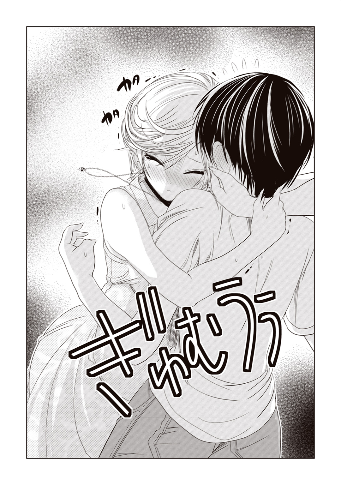
「......あ......あぐ、葵さ......こ、これじゃ息、が......」
全力で首筋にしがみつかれ、光海は気道を確保するのが困難な状況に陥っていた。
葵さんの華奢でしなやかな感触を全身で味わえるのは嬉しい反面、このままでは数分と経たずに光海もゾンビの仲間入りをしてしまうだろう。リアルな意味で。
――どうせ葵さんに抱きしめられて昇天するなら、ベッドの上がよかった......！
そんな光海のピンチなど、ゾンビのスタッフさんたちはさっぱり気づいてはいないようだ。彼らはどこか楽しそうに、揃って『ギャア！』『ギャア！』と謎の死霊ダンスを繰り広げている。
「いやぁああ!! もうやだあ！」
光海の身体に正面から固く抱きつきながら、彼女は小さく震えている。泣いているのか、その喉からは「ひっく」と嗚咽がこぼれていた。
「怖い......助けて......お願......い......怖い......いや......」
「あ、葵さん......」
なんだか、悪いことをしてしまったような気がする。
お化け屋敷に怯える彼女は、確かに普段と違う可愛らしさがあった。守ってあげたくなるような可憐さがあった。
でもそれは、光海が憧れる彼女ではないのだ。
――やっぱり葵さんには。いつも傲岸不遜な女王様でいてほしい。
高飛車で、傲慢で、相手を遥か高みから見下したような。
それでいて寂しがり屋で、どこか人一倍愛情に飢えているような。
光海が素敵だと思っているのは、そんな葵さんなのだ。
涙で顔を歪めながら、葵さんがしゃくり上げている。
「嫌だ......もう......嫌......」
「げほっ......葵さん。リタイアしましょう」
光海が腕をふりほどき、優しく告げた。
もう怖さは十分堪能したし、嬉しいハプニングもあった。これ以上彼女を困らせてまで、お化け屋敷に留まる理由はない。
だが葵さんは、潤んだ瞳で光海を睨みつけ、
「か......勘違いしないで......私、怖がってなんか......っ......」
かすれた声でうめいた。
「リタイアなんか......す、するわけないじゃない......この私が」
「葵さん」
「......大体......私に命令するなんて......ひゃ、百年早いのよ」
涙混じりの声を震わせ、ぐずぐずと鼻を啜りながら、葵さんはそれでも懸命に強がろうとしていた。
香子さんに言わせれば、彼女のプライドの高さは葵の上級――折り紙つきなのだ。光海がリタイアを勧めれば勧めるほど、意固地になって首を振るに違いない。
だったら、やり方を変えるまでだ。
光海は葵さんの耳元に顔を近づけ、囁くように告げる。
「葵さん、オレ、もうリタイアしたいんですけど、付き合ってもらえませんか？」
「......え」
葵さんが目を丸くする。
涙の雫が長いまつ毛をしっとりと濡らし、きらきらと輝いていた。彼女らしからぬ、なんだかあどけない感じだった。
光海は頰を搔きながら、苦笑いを浮かべてみせる。
「実はオレ、すっごい怖かったんです。なんか、葵さんの前だからって、カッコつけちゃって......でも、もう足とかガクガクで......情けないんですけど」
半分演技だったが、半分は本気である。
光海だって、いまだにギャアギャア周囲で踊りまくっているゾンビの群れには少なからず恐怖を覚えている。メイクやら演技やら、気合入りすぎだろうアクター連中。
「ダメ、ですかね？」
葵さんは涙に濡れた両目で光海のことをじっと見つめていたが、
「い......いいわよ」
ぐっと唇を嚙みしめ、光海の視線を避けるように下を向いた。
その拍子に長いまつ毛の先についた雫が、ぽたん、とこぼれ落ちる。もちろん、それは見ないふりをしたのだけれど。
涙で滲んだ目を無理やり細め、葵さんがいつものように不敵な笑みを浮かべた。
「――し、仕方ないから、ここでリタイアしてあげるわ。あなたのために」
＊
ゴンドラの窓から差しこむ夕日が、葵さんの頰を紅色に染める。
「本当は昨日の夜、父と会食をする予定があったの。でも、その予定が急に流れてしまって。......お父様、お忙しい方だから」
ふたりがゾンビダンサーズに誘導され、お化け屋敷を出た頃には、すっかり日も沈む時刻になってしまっていた。
ここは園内のほぼ中央に位置する大観覧車――そのゴンドラの一室である。
地上五十メートルから一望する園内は、綺麗な黄金色に色づいていた。帰り支度をしているカップルなり家族連れなりも、ちらほら見受けられる。きっと彼らはここで過ごした一日を、楽しい思い出として胸に刻んでゆくのだろう。
「お父さんに会えなかったから......ずっとむしゃくしゃしていた、と」
「そう。それで仕事を休んであなたに会いに行ったのよ。ストレスを解消するには、あなたみたいなおもちゃで遊ぶのがうってつけだから」
葵さんが、意地悪そうな笑みを浮かべる。
「お......おもちゃ......ですか」
「おかげで、少しはすっきりできた気がするわ」
「まあ、葵さんが満足してくれたんなら、それが一番いいことですね」
お化け屋敷でパニクっていた彼女の気分も、時間経過とともになんとか落ち着いたようだ。今では普段のクールな表情で、光海の対面に腰を下ろしている。
悠然と組まれた長い脚。金色のアンクレットが輝く細い足首。ワンピースの裾から覗く魅力的な太もも――いつも通りのセクシー＆ビューティな葵さんだった。
「ねえ」
葵さんが口を開いた。
「どうして私があなたと一緒に観覧車に乗ったか、わかる？」
確かにそれは疑問だった。最初彼女は「お父様以外とは乗りたくない」と豪語していたはずなのに。
答えあぐねているうちに、葵さんが席を立った。そのまま何故か移動し、光海の隣に座る。
「あ、葵さん？」
至近距離からじっと見つめられ、光海の心臓はどきどきと高鳴りを始めた。やはり反則級の美人だ、このひと。
葵さんはふっと微笑み、
「正解は......お父様と同じことを、あなたがしてくれたから」
どういう意味なのだろう。彼女は、光海の手の上に自分の手のひらを重ねると、にこりと頰を緩めた。
「小さかった頃、お父様に連れられてお化け屋敷に入ったことがあるの。結局怖くて泣いてしまって、ゴールできずに裏口から出してもらったんだけど――あのとき私は、自分のわがままでお父様に迷惑をかけてしまったんじゃないかと不安だったわ」
葵さんはばつが悪そうに目を伏せ、小さく笑みを浮かべる。
「でも、お父様は言ってくれたのよ。『自分も怖かったから、早く出たかった』って。それが娘を傷つけないための方便だということはわかっていたけれど、私は嬉しかった」
「そ、そうだったんですか......」
なるほど。さきほどの光海の行動も、彼女にはとっくに真意を見抜かれていたというわけだ。噓がバレバレだったというのは正直ちょっと恥ずかしい。
「あなたも、あの日のお父様と同じ......優しいところがあるのね。少しだけ見直したわ」
そう言って、葵さんは光海の身体に手を回す。
「だから、ご褒美をあげる」
え、と聞き返す間もなく、光海の唇には柔らかいものが押し当てられていた。今日一日、ずっとそれを見つめていた光海には、すぐにその正体がなんだかわかった。
潤い豊かな、葵さんの唇。
愛情溢れる濃厚なフレンチキスを、彼女はご褒美にしてくれたのだった。
彼女の舌が口腔内で光海のそれと絡み合うたびに、脳内に甘く蕩けるような感覚が広がっていく。
「ん......っ......」
やっぱり、葵さんは素敵なひとだ。できることならずっと、こうして口づけを続けていたい。いっそ事故か何かで、このゴンドラが停止してしまえばいいのに――本気でそう思ったくらいだった。
しかし現実はままならない。ゴンドラが地面に近づき、葵さんが光海から身を離した。
「続きは、また今度ね」
「こ、今度っていつです......？」
キスの余韻に浸るあまり、光海はついそんなことを尋ねてしまう。
葵さんの唇が名残惜しい。ここでお預けなんて辛すぎる。がっついてしまうのは、男の子の性なのだ。
「私の気が向いたとき、かしら」
熱く潤んだ瞳を光海に向け、葵さんは小悪魔めいた微笑を浮かべた。
「もっとも、もしあなたがお父様以上に魅力的な男性になったら......その限りではないかもしれないけれど」
「お父様以上、ですか......」
なかなかに厳しそうなハードルだった。
だが、こうして彼女が水準を設けてくれた以上、可能性がゼロではないと思ってくれているのだろう。そう好意的に解釈したい。
――もっと精進が必要ってことですね、葵さん。
宝石のような彼女の瞳を見つめながら、光海は男を磨く決意を固める。この綺麗なひとのためなら、多少の努力はしてみようという気になっていたのだ。
今度こそ、あの豪華ホテルでアフターを過ごすために。
「それではお客様、どうぞごゆっくり」
夕食を運び終えた仲居さんが、一礼して部屋を出ていった。
さすがは雑誌で三ツ星評価を受けた旅館だけのことはある。従業員のお辞儀ひとつを取ってみても、実に洗練されているではないか。
「うーん、夕飯もすっごいわね」
まず目を惹いたのは、テーブル中央の皿に盛られた天ぷらだった。肉厚の伊勢海老や穴子をメインに、豚肉や、紅生姜など一風変わったものまで、豊富な食材がこれでもかと言わんばかりにカリッカリの揚げたてにされている。どれも美味しそうだ。
小鉢には雲丹の味噌掛け。お吸い物の椀から漂う格調高い香りは、きっと松茸に違いない。刺身の三種盛りも、脂が乗っていて非常に食欲がそそられてしまう。
その他にも、竹串がささった花形の焼き物や、紫色の寒天状の物体などなど――お品書きの料理名を見ても、どれがどれやらさっぱりわからない皿も多数見受けられた。
まあそれも当然だろう。テーブルの上に載っているのは、私たちのような庶民には敷居の高い超高級懐石料理なのだから。
こんな御馳走、死ぬまでにあと何回食べられるのかしら――。普段じゃ絶対にお目にかかれない料理を前にして、私は素直に感嘆のため息を漏らした。
隣を見れば、妹の千里も目をまんまるにして驚いている。
「うわあ......！」
温泉上がりのこの子は、普段の五割増しぐらいに色気が増しているように見える。
肌は上気して玉の雫を帯び、ゆるく結んだお下げの先もしっとりと濡れている。浴衣の衿から覗く白い谷間は、我が妹ながら相変わらずセクシーのひと言だ。もし私がこの子の彼氏だったら、豪華な夕食などよりも先にその浴衣姿に夢中になってしまうだろう。間違いなく。
火照った顔をぱたぱたと煽ぎながら、千里が呟いた。
「本当にこんな高そうなとこ、お泊まりしちゃっていいのかなあ」
「いいに決まってるじゃない。千里のためなんだから」
千里とグラスを合わせながら、私はにっこりと微笑んでみせる。
本当のところを言えば、お財布的には結構厳しいものがあった。これだけグレードの高い旅館なのだ。給料日前にお泊まりを決意するには、かなりの勇気が必要だったことは言うまでもない。
だがまあ、それで千里が元気になってくれるなら安いものである。うん、我ながらお姉ちゃんとしての度量はたっぷりだ。
「私のためって、どうして？」
ウーロン茶をひとくち喉に流しこみ、千里が首を傾げた。
あらら。この子、今日のお泊まり会の趣旨をまったく理解していないらしい。
「だってあんた、彼氏と別れたんでしょ？ 妹が失恋して寂しがってるんだから、お姉ちゃんとしては元気づけてあげなきゃと思ったわけ」
「寂しがってる？」
千里が少し困ったように眉尻を下げた。
「別にそんなことはないけどなあ。別れたって言っても、今だって源さんとは仲良しだし......」
「まーた強がっちゃって」
お姉ちゃんにはホントのこと話しなさいよ――と、私が千里の脇腹をつついたそのとき、部屋に「ピロリン♪」と電子音が鳴り響いた。
「あ、メール」
千里が脇のバッグから、携帯電話を取り出した。
ちょうどよいタイミング。画面に表示されたメールの差出人は、なんと噂の〝源さん〟そのひとである。
『温泉旅行楽しんでる？』という件名に目を留め、千里がにっこりと頰を緩めた。
「ごめんお姉ちゃん、ちょっとだけメール返すね」
にこにこと楽しそうに、千里が液晶に指を這わせる。
ふむふむ。この妹はいったい、別れた男とどんなやり取りをしているのだろう。少し気になった私は、肩口からこっそりメールの文面を覗きこむことにした。
【件名】 楽しんでますよ♪
【本文】 すっごい豪華な旅館でびっくりしてます。お風呂も広くてきれいだし、お料理も珍しいものばっかり。なんだか身の丈に合ってないような気がしちゃいます（笑）。連れてきてくれた姉には感謝しないといけないですね。
源さんも、よい週末をお過ごしください。
「うん、これでよし」
千里が満足げに頷き、送信ボタンを押した。
メールの内容は、本当にただこの旅館の感想だけだった。
当たり障りもなければ、色気のひとつもない。まるで大人の社交辞礼めいたやり取りというか、なんというか――。少なくとも私にはそれが、ついこの間まで付き合っていた元恋人に送るメールだとは到底思えなかった。
「あんたねえ......それでいいの？」
「いいの......って何が？」
千里がきょとん、と口を半開きにする。
私は刺身をつまもうとしていた箸を置き、妹に向き直った。
「いや、だからさ。千里、ちょっと前までその彼氏とすごいラブラブな感じだったじゃん。なのに今はただのメル友って......。それで本当に満足なの？」
「うーん......？」
千里はやや考えて、
「別に不満はない......かな」
意外なことに、それはまるで私のお猪口の中の清酒と同じくらい、あっさりとした回答だった。
「ええ？ なんでよ。別れた彼氏と中途半端に付き合い続けるなんて、ちょっと微妙じゃない？ そんなの男にキープされてるようなもんだと思うけど」
「キープ？」
「そ。メールでつなぎ止めておいて、あんたをいつでも抱きたいときに抱けるようにってさ。そういう男って結構いるよ」
「源さんは、そういうひとじゃないと思うけどなあ」
「どうかしら、どうせ男なんて、基本おっぱいにしか興味ない生き物なんだから」
言いつつ、箸のお尻で千里の大きなバストを突っついてみる。
敏感な箇所に触れたのか、「ひゃん！」と可愛らしい声があがった。いつもながら、私好みの可愛らしい反応である。
千里は、もう、と口を尖らせつつ、
「み、源さんはエッチなだけじゃなかったもん......」
上目遣いで私を睨みつける。
「エッチなだけじゃない......ってことは、それなりにエッチではあったわけね」
「そりゃ、ちょっとはそういう部分もあったけど......。でも、男の子ならそれで普通......だと思うし」
「まあ、それもそうね」
ふむ。ここまで千里に擁護させるとは、どうやらその彼氏君、なかなかに信頼されているようだ。
千里の男性恐怖症は筋金入りだったはずだ。家族を除けば、かつてこの子がここまで心を開いた男性などいなかっただろう。姉としてはその源さんとやらに対し、正直言ってちょっと妬ける部分もあることは否定できない。
ともかく、と私は口を開いた。
「半端にダラダラ関係続けるのはオススメできないわね。私ならちゃんとヨリを戻すか、いっそキッパリ絶縁しちゃうかのどっちかにする」
「お姉ちゃんらしいなあ」
千里がくすり、と笑みをこぼす。それはなんだか失恋直後とは思えないくらい、呑気にすぎる笑顔だった。
「いや、笑いごとじゃなくてさ」
「お姉ちゃん、私はね」
ウーロン茶をひとくち嚥下し、彼女が呟いた。
「源さんには感謝してるんだよ。付き合った期間は一か月だけでも、私、ちょっとだけ大人になれた気がするし」
えへへ、と千里がはにかむ。
初めてできた彼氏なのだ。まあ、この子が大人の階段を上ったということは、姉である私もなんとなく理解はしている。
「感謝してるから、これからは友達付き合いでいいってこと？」
「うん。そんな感じ、かな」
こくりと頷き、千里は海老の天ぷらを口に運んだ。
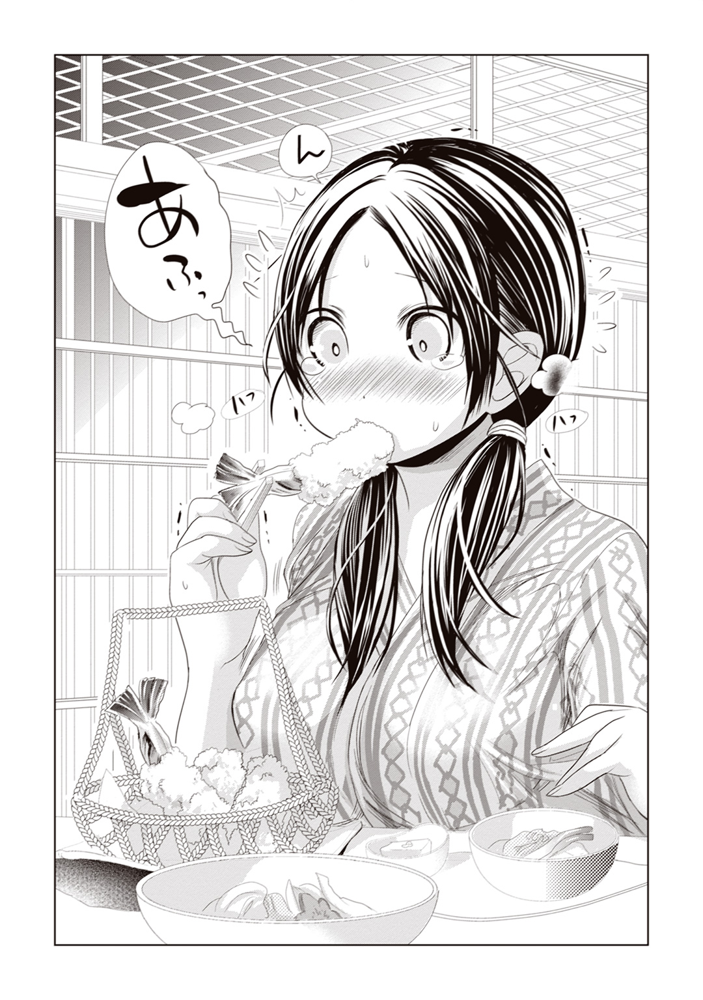
揚げたての衣の熱さは彼女の予想外だったのだろう。涙目になりながらはふはふと天ぷらを咥える様子は、どこか小動物めいていた。
私が男なら、これだけ愛らしい女の子と別れる理由が見当たらない。
とすれば、千里の側からその彼氏君を振ったということなのだろうか。いや、それもどうだろう。話を聞く限り、千里もその源さんに対して不満を持っていたというわけではないようだし――。まったくもって謎だ。
「いったいあんたたち、どんな付き合い方してたのよ」
「え、別に普通だよ。紫陽花園でデートしたり、お部屋でお話したりとか」
普通というよりは、むしろ地味なくらいの付き合い方である。まあ、純朴な千里には、そういう恋愛のほうが合っていると思ったので、無粋なツッコミはしなかったけれど。
「別れたって言っても、別にケンカ別れしたわけじゃないし......そんなにお姉ちゃんが気にするほどのことでもないんだよ」
「ふうん」
箸を置き、妹の顔をじっと見つめる。
「ま、あんたがそう言うんならいいけど」
「でも心配してくれてありがとう、お姉ちゃん。私のために温泉に連れてきてくれたことは、すごく嬉しいな」
にこり、と千里は優しく目を細めた。
確かに今日の千里の様子からは、失恋で傷ついているとか、落ちこんでいるとかそういう様子は窺えない。
しかし、だからこそ私は心配なのだ。
――もしかして、本当は辛いのに無理してたりするのかしら。
昔からこの心優しい妹は、よく強がって笑うことがあった。
例えば小学校の頃、同級生に胸の大きさをからかわれたとき。
例えば蕎麦屋のバイトを始めたばかりの頃、お客さんに卑猥な言葉をかけられたとき。
「なにかあった？」と問う私に、千里はいつも「なんでもない」と言って笑うのだ。その後、部屋でひとり悶々と膝を抱えているくせに。本当は誰かの助けが必要なくせに。
きっといつもこの子は、家族に心配をかけまいとして気丈に振る舞っていたのだろう。
もちろんそれは美徳であり、私は妹のそんな部分を好ましく思っている。いつも笑顔を絶やさない優しい子だからこそ、良かれ悪しかれ、彼女の周りには自然とひとが集まるのだ。
だがやはり、ひとりで辛さを抱えこんでしまうこの子のことを放ってはおけない。千里が悩みを口に出さないのなら、せめて姉の私がそれを察してやらなくては。
きっと失恋直後の今だって、本当は辛いはずなんでしょうに――。私は横目でちらと、彼女を見やった。
「へえ、あっさりしてる。これが老舗旅館の味かあ」
呑気に茶碗蒸しの湯葉を味わうその笑顔の裏側では、涙を堪えているのかもしれない。私に心配をかけまいと、必死で平気なふりを装っているのかもしれない。
だとしたら、彼女の傷を癒すために、私がするべきことはひとつだ。
「ねえ、千里」
私はそっと彼女の背後に回り、その柔らかな身体をぎゅっと抱きしめた。
「きゃっ、ちょ、なに、お姉ちゃん。私まだ食事中――」
「いいからいいから。ほら、お姉ちゃんが元気の出ることしてあげるから」
千里の手から箸を奪い取ると、私は彼女の太ももにそっと手のひらをあてがった。すべすべの肌はしっとりと柔らかく、ほんのりと熱を帯びている。まだ湯上がりのまま、火照りが抜けきっていないようだ。
「ひう、やだ、くすぐったいよ」
「はーい、それじゃお布団へれっつごー」
「え、ええ？」
困惑する千里を引きずりながら、襖を開けて隣の寝室へ。
私たちの入浴中に仲居さんたちが寝床を準備してくれていたのだろう。見るからにふわふわな羽毛布団が二組、部屋の中央に敷かれていた。
「お、お姉ちゃん。元気の出ることってなに？」
「マッサージ。いいからほら、お姉ちゃんに任せておいて」
抱えた千里の身体を、押し倒すように布団へと導いた。豊満すぎるわがままボディが、敷布の上にぽすん、と軟着陸する。
「マッサージって......い、痛いのはやだなあ」
急にマッサージなどと言われて戸惑っているのか、千里の表情は若干堅い。
「大丈夫。優しくしてあげるから」
小さい頃からよく、私はこうして何かにつけて千里に対してスキンシップを図ってきた。
今回のように千里を元気づけるため、という大義名分があることもなくはないが、基本的には理由なく彼女を撫でつけていることが多い。
なんというかこう、この子を触っていると気分が落ち着くのだ。たとえるなら、小動物を慈しむことで精神の安寧を図るアニマルセラピーのような――。私にとっての千里は、愛らしい妹であると同時に、そんな癒しの存在でもある。千里セラピーというやつだ。
「それじゃ、いくわよ」
私は千里の身体をうつ伏せに横たえると、その上に馬乗りになった。
しっとりとした肌から立ち上るのは、ほのかな石鹼の香り。ゆっくりとした呼吸に合わせて、細い肩が小さく上下している。
「はーいお客さん、身体の力抜いてリラックスしてくださいね」
「お、お手柔らかに......」
あはは、と千里は困ったように苦笑いを浮かべる。
うん、そういう表情も可愛い。これではついついイタズラをしてしまいたくなってしまったとしても仕方がないだろう。
――彼氏君とのベッドの上でも、こんな顔をしてたのかしら。
ちょっとだけジェラシー。
私がおもむろに浴衣を下にずらすと、千里の白い肩が露わになった。
さすがは十代、きめ細やかな肌である。ほっそりしたうなじは艶っぽく、背中からお尻にかけての曲線も素晴らしいの一言。その規格外のバストも言うに及ばず、うつ伏せになっていても脇からはみ出しそうなほどに存在を主張している。
まさに、少女の清純さと、大人の色気を兼ね備えた奇跡の肢体――。これほど見事にナイスバディな女の子は、そんじょそこらではお目にかかれないだろう。
私は両手をその肩口に添え、親指にぐっと力をこめた。
凝りをほぐすように揉んでやると、千里の口から、「んんっ」っとため息がこぼれる。
「あらあら。ずいぶん凝ってる」
「そ、そうかな......んんうっ......」
「大きすぎるっていうのも大変よね。これは念入りにマッサージしてあげなきゃ」
首筋から背筋に沿うように、指圧を続ける。肩甲骨から背中の中央、そして腰から臀部に至るまで、指先で丹念に丹念に。
「あ、ん......んっ......」
親指が柔らかい肌を刺激するたびに、千里が声を震わせる。
「なんか、エッチな声」
「んうっ......わ......たしだって、出したくて......んっ......出してるわけじゃ......ひゃうん！」
なんとも官能的な反応である。なんだかそれが面白くて、私はさらにこの子を構ってあげたくなってしまった。
「お客さん、ペース上げちゃいますね」
「ええっ......!? や......お姉......も、もっと優しく......ふうっ......んっ！」
妹の喘ぎ声は、それからたっぷり十分ほどは続いただろうか。
私がひとしきり彼女の柔肌を堪能し、すっかり癒しを感じていた頃には、千里は半分涙目でぐったりとしてしまっていた。
「あうう......優しくしてって言ったのに」
「うん。背中はこのくらいかな。それじゃ次に行こう」
「つ、次って、まだあるの？」
「そう。今度は肩凝りの元凶そのものを揉みほぐしてあげる」
「元凶って......え？」
瞳をパチクリさせる千里の背を起こし、やや強引に布団の上に座らせる。
その背中を抱きしめるように、私は彼女の脇の下から手を回した。
「ちょっ、お、お姉ちゃん!?」
「いいからいいから。お姉ちゃんに任せておいて」
浴衣の隙間から、そっと手を差し入れる。
ふにゃり、という柔らかな感触。存在感溢れる弾力が、これでもかと言わんばかりに私の指にその重量を感じさせている。
腕や腰回りは華奢なくせに、なんでまたこの子は胸ばかりこう大きく育っているのだろう。直に触ってみると、そのグラマラスさがよくわかる。間違いなく、例の彼氏君もイチコロだったに違いない。
肉付きのよい果実に指を這わせ、ふにふにと愛撫すると、千里が「ふあっ」と嬌声をあげた。
「や、ひゃああっ......!? マ、マッサージなの、これ？」
「そうそう。ちゃんとほぐしてあげるから」
胸を揉んだところで肩凝りが解消されるはずもないことはわかっているが、このマッサージの目的の半分は妹とのスキンシップ、もう半分は単なる私の趣味なのだ。
要はまあ、千里も私も楽しめればなんでもいい。
「ほーら、そんなに固くならないの。彼氏君にはちゃんと触らせてあげたんでしょう？」
「う......ん......そう、だけど」
「だったらイイでしょ。ね、減るもんじゃなし」
私の指先が柔肉に食いこむたびに、半脱ぎになった千里の肩がぴくん、と震える。そんな敏感な反応が楽しくなって、私はその豊満な乳房を粘土のように弄び続けた。
「ふあっ......ん......んあっ......」
「ねえ千里、彼、おっぱい触っただけじゃないでしょ？ 他にどんなことをされたの？」
「え？」
千里がきゅっと身を縮ませる。
「い、言えないよそんなこと」
「言わなきゃだーめ。ほら、もっとイタズラしちゃうぞ」
言いつつ、私はふっと千里のうなじに息を吹きかける。
彼女は「ひゃあ」と背をのけぞらせ、少しだけ頰を膨らませた。
「も、もう......わかったからやめてよぅ」
「うんうん。それで？ なにされたの」
問いかけながら、ぎゅっと身体を抱きしめる。
彼氏君との夜を思い出しているのだろう。千里の鼓動が、背中越しに伝わってくるようだった。
「え、えっとね、吸われたの」
「吸われた？」
「その......ちゅうって......」
千里が声を震わせて答える。
この薄暗い部屋の中でもわかるほど、彼女は顔を真っ赤に染めていた。彼女にとっては、それだけあの夜の体験は鮮烈なものだったのだろう。
「吸われたって、もしかしてここかな？」
千里のふくらみの先端――小さな突起に軽く触れると、腕の中で、彼女の身体が大きく跳ねた。
この子、大きい割に意外と感じやすいのだ。
「うう......そ、そうだけど......。あ、や、ちょ、つまむのは――」
「あはは。それで、その次は？ なにされた？」
羽交い締めにしつつ、執拗にその先端をつねってみたり引っ張ったり。それで千里も観念したのか、ゆっくりと口を開いた。
「え、えと、服を脱がされて」
「ほうほう。脱がされて？」
「そ、その、裸を見られたの」
千里の声は、熱に浮かされたように震えていた。
「源さん、私の身体を『素敵です』って言ってくれて......とっても嬉しかったんだ」
「へえ......」
嬉しかった、と言うからには、彼女の初体験はそれなりにうまく行っていたらしい。
「そりゃよかったね。初めてで失敗しちゃうカップルってよく聞くし」
「そ、そうなの？」
「うん。私も、もしかしてあんたたちが別れた原因はその辺にあるんじゃないかって邪推してたりもしたんだけど......。そういうわけじゃなかったんだ」
「う、うん。それは大丈夫だよ。源さんはその、ずっと優しかったし......」
恥ずかしいのか、消え入りそうな声でそう呟いた。
うーん、やっぱり信頼されてたんだな、その源さんとやら。
変な話だが、千里を十八年間可愛がってきた身としては、この子を大人にした彼氏君に対抗意識めいたものも芽生えてしまう。
「じゃあお姉ちゃんも、大人の階段を上った千里の身体を見てみたいな」
千里が「え」と言うより早く、私は彼女の身体を布団に仰向けに寝かせていた。
乱れた浴衣は、もはや半脱ぎ状態と言ってもいい。白い肩やほっそりした鎖骨が露わになり、衿元から大きな双丘がぷるん、とこぼれ落ちそうになっている。
ああ、とってもコケティッシュな絵面。このままグラビアの表紙だって飾れそう。
「あ、え、お姉ちゃん？」
千里のお腹に手を添え、つうっと撫でつけるように下腹部へ。下着のクロッチに指を触れると、その部分がしっとりと湿り気を帯びているのがわかる。
「あらら......。彼氏君とのエッチを思い出して、こんなことになっちゃったのかな？」
「うう......」
頰を紅潮させ、千里がそっぽを向いた。ちょっと悪ふざけが過ぎてしまっただろうか。
「お姉ちゃんの意地悪......」
「はは。ごめんごめん」
ぷくっと頰を膨らませた千里の髪を、梳くように撫でつける。
口では謝ってみせたものの、実のところ、この子にイタズラをするのは結構楽しい。羞恥に顔を赤らめるその表情も、こちらの加虐心をいっそう煽ってくる。
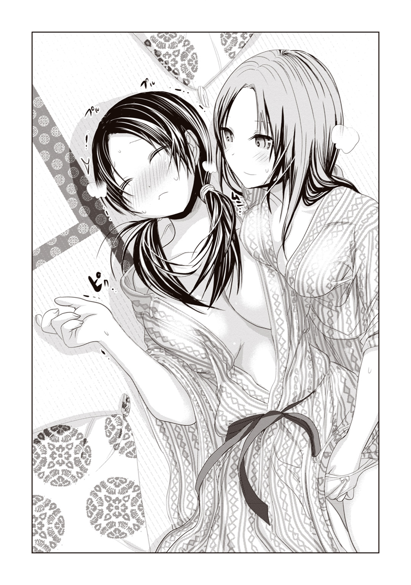
「ねえ。これならいっそ、全部脱いでみちゃうってのはどうかな」
言いつつ、私は彼女の浴衣の帯に手をかける。
「ちょっと待ってお姉ちゃん、な、なにする気なの？」
「なにって、せっかくだから千里の初体験再現プレイをしようと思って」
私の言葉に、千里はぎょっとした表情を浮かべる。
「それはもう、さすがにマッサージじゃないよねえ......」
「ダメ？」
「だ、だってほら、私たち姉妹だし」
「姉妹だからこそ、仲良くしなきゃじゃない？」
さすがに我ながらやりすぎかとも思ったが、彼氏とのラブラブな夜をあえて再現することで、千里の傷心を癒してあげられるかもしれない。
帯をゆっくり解きながら、私は千里の潤いを帯びた敏感な部分を優しく撫でつける。
「ひゃあう!? ま、またそんなとこ......！」
「いいのいいの。ほら、リラックス」
「そ、そんなの無理だよおっ......！」
千里の悲鳴が響きわたったその直後、
「お客様、どうなされました？」
客間の扉からノックの音が聞こえてきた。
先ほどの仲居さんの声だ。配膳した料理を下げに来たのだろう。
私ははっと我に返り、はだけた千里の身体に毛布をかける。
「あ、いえ。すみません。妹にマッサージをしてたら、どうも効きすぎちゃったみたいで」
部屋に入ってきた仲居さんに、苦笑いを浮かべる。
当の千里のほうはと言えば、毛布の中で丸くなりながら、小鼻を膨らませて私を睨みつけていた。
そんな不満げな表情も、実に可愛いなあ。
＊
手ぬぐいとタオルを片手に、中庭の飛び石の上をゆっくり歩く。
地面には玉砂利が敷き詰められ、古めかしい灯籠や、丁寧に植栽された松の木が、見るひとの目を楽しませている。遠くの池のほうから聞こえてくるのは、鹿威しの音だろうか。まさにこれぞ日本の温泉旅館、とでもいうべき情緒に溢れた庭園だった。
中庭がこれだけ風光明媚に拵えられているのも、ここが露天風呂への通り道だからだろう。露天風呂は、本館から少し離れたところにあるのだ。
傍らをついてくる千里に向かって、私は声をかけた。
「さっきお風呂入ったばっかりだったのに、入り直しになっちゃったね」
「もう、お姉ちゃんのせいだよ」
やれやれといった調子で、千里が口を開いた。
「でもまあ、あの露天風呂なら、何回でも入りたいくらいなんだけど」
「そうそう。今度は温泉で姉妹仲良く語らいましょ」
「あはは。でも、もうマッサージは遠慮したいかな」
そんな風に私たちが冗談めかして笑っていると、不意に後ろから「ねえねえ」と声をかけられた。
「君たちも泊まり客？」
「お姉ちゃんたち、これから露天風呂でしょ。奇遇だなあ、俺らもなんだよ」
振り向いてみると、そこには浴衣姿のおっさんがふたり。社員旅行でやってきた、うだつのあがらない中年サラリーマンふたり連れ――という雰囲気である。
ひとりは瘦せ型で頭頂部の薄い男、もうひとりはお腹の出た汗っかきの小男だ。どちらのオッサンにも共通しているのは、酷いアルコール臭がすることと、その赤ら顔にいやらしい笑みを浮かべていることだった。
あまり関わり合いになりたい相手ではない。私は視線を逸らしつつ、そっけなく応えた。
「......だったらなんですか？」
小男のほうが、ふひひ、と酒臭い息を漏らしながら、
「ねえ、よかったらおじさんたちと、混浴のほうに行かない？」
「はあ？」
「いいじゃない。旅は道連れって言うしさ。女ふたりで温泉っていうのも寂しいでしょ？」
なんだその理屈。酔っ払いの言っていることだけに、まったく意味がわからない。
そんな小男に追従するように、もうひとりのひょろいハゲが口を開く。
「......うぃっく、あはは、君たちみたいな綺麗な女の子が背中を流してくれるなら、おじさんたち喜んじゃうなあー」
ハゲは千鳥足でふらつきながら、もたれかかるように千里のほうへと手を回した。
「きゃっ......」
「ちょっと、おっさんなにしてんのよ」
私がひきはがそうとしても、オヤジたちはニタニタ笑いをやめない。完全に悪酔いしているようだった。
「......っ」
男たちの狼藉にすっかり怯えてしまったのか、千里は、俯き気味に小さくなってしまっていた。それも致し方ない。この子は、男にあまり免疫がないのだから。
「こっちのお姉ちゃんは、満更でもなさそうだねえ」
大人しい千里の態度が、男たちには御しやすく見えたのだろう。ふたりのオヤジは目と目を交わし合い、下卑た笑みを浮かべた。本当に気持ちの悪い連中である。
「ううん、可愛い子だねえ。なかなかの巨乳ちゃんだし。こりゃあ是非、浴衣の中身を見てみたいもんだ」
デブのほうが、わざとらしく千里の胸元を覗きこんでいる。
「もちろんタダでとは言わないよ？ お小遣いあげるから」
瘦せっぽちのほうが、人差し指と親指で丸を作ってみせた。
もはやこれは、セクハラどころではない。
「あんたら、いい加減にしなさいよ」
本当なら従業員さんや他の宿泊客に助けを求めたいところだったのだが、運悪く中庭には私たちの他に誰もいないようだ。
仕方がない。酔っぱらいの相手などまともにしたくはないが、可愛い千里を守るためだ。男性恐怖症のこの子に代わって、私が追っ払うしかない。
「っこの――」
オッサンどもの頰を張ってやろうと平手を構える。
だが、それより一瞬早く、ぱしん、と乾いた音が響きわたった。
「だ、だめですよ、こんなことしちゃ......！」
男の腕を振り払ったのは、千里本人である。
俯いていた顔を上げ、ひきつった表情で男たちを睨みつけているのだ。
「おい、なにすんだよ」
「お、お酒......飲みすぎじゃないですか？ アルコールの勢いなんかで女の子に声をかけてたら、奥さんに愛想尽かされちゃいますよ？」
怯えと緊張の入り交じった声だった。しかしそれでも、千里は勇気を振り絞って男たちと相対している。
それは、私の知らない妹の顔だった。
「あんだと？」
舌打ち混じりに、男が凄んでみせる。
千里は一瞬びくっと身を震わせたが、それでも気丈に言葉を続けた。
「せっかくの素敵な温泉旅館なんですから、女の子の肌を眺めるよりも、風情を楽しんでみたらいかがでしょう。ほら、今夜は月も綺麗ですし......」
「月ねえ」
禿頭が、ふんと鼻を鳴らした。
「なんだい、お姉ちゃん。そんなに俺たちと一緒は嫌だっての？」
「あ......え、えっと、そうです。こういうのは、ちょっと」
声こそ震えていたものの、彼女はキッパリと否定の意を示した。
これに驚いたのは、男たちよりもむしろ私のほうだろう。筋金入りの男性恐怖症だった千里が、いつの間にかセクハラに対してこんなにハッキリ自己主張できるようになっていただなんて。
「もしかしてアレか、操を立ててる男でもいるわけ」
「う......その、今は恋人っていう感じじゃないですけど、いちおう、お付き合いをさせていただいている男のひとはいなくもない、と言いますか......」
「なんだ、男付きか」
太っちょのほうが、白けたような表情で首を振った。
付き合っている男と言っても所詮メル友なのだが、それを知っているのは私ひとりだ。
千里をモノにできないと理解したからだろう。瘦せっぽちのほうが、ふう、とため息をついた。
「もういいよ、行こう」
「ああ、混浴はあきらめて酔い醒ましでもしようぜ。月でも見ながら」
オッサンふたりはそんな捨て台詞を呟きながら、肩を落として帰っていった。
嫌なセクハラ連中だったが、引き際はあっさりしていたので、まあ通報は勘弁してやることにする。
その背が見えなくなったところで、千里がほっとしたようにため息をついた。
「ふう......恐かった......」
「頑張ったね、千里」
引っこみ思案なこの子にしては、驚きの行動である。大健闘だと褒めてやりたい。
私はにっこりと笑みを浮かべ、その手をぎゅっと握りしめた。
＊
乳白色のお湯に、肩までつかる。
この温泉には重曹が成分として含まれているらしく、なんでも美肌効果があるらしい。そういえば、さっき部屋で触った千里の肌も、子どもみたいにつるつるしてたなあ――そんなことを思い出し、私はふっと口元を緩めた。
「どうしたの。お姉ちゃん」
浴槽の縁に腰かけたまま、千里が首を傾げた。
湯気の中、彼女の肉感的な肌を隠しているのは、濡れて半透明になった手ぬぐいがたった一枚だけ。濡れた髪がうなじにまとわりついているのが、そこはかとなくセクシーさを醸し出していた。
「あ、ううん。なんか千里も大人になったなって」
「大人......そうかな？」
「そうよ。あのセクハラオヤジをきちんとあしらえてたじゃない」
ちょっと前まで、千里は男性と目を見て話をすることさえできなかったはずなのだ。それがいつの間にか、ひとりであの手のトラブルを回避できるくらいには立派に男性とコミュニケーションが取れるようになっている。
この原因として考えられるのは、やっぱり。
「これって、彼氏君のおかげなのかしら」
「うん。源さんが付き合ってくれたおかげで、前ほどは男のひとが苦手じゃなくなった感じ......かな。さっきも言ったとおり、本当に感謝してるんだよ」
彼女も湯船につかり、屈託なく笑う。
さきほど千里が、「彼と付き合って大人になれた気がする」と言っていたのも、こういう精神的な部分での成長を指していたのかもしれない。
「実はね、最初から源さんとは、私の苦手を治してもらうために付き合ってもらってたの」
「ん、そうなの？」
「うん。だから本気の恋愛っていうよりは、まだその一歩前だったって言うか――。源さんのおかげで、なんとかスタートラインに立てたって感じなんだよ」
ほんのりと頰を赤く色づかせて、千里が微笑む。
この子がしていたのは、恋愛の一歩手前だった――。その話を聞いて、私はようやく合点がいった。
千里が前ほど彼氏君と一緒にいない理由。
そうなってもさほど落ちこんでいるようには見えない理由。
なるほど、そもそも恋自体が始まってもいなかったのだから、失恋だってするわけがないのだ。
「恐怖症の克服のための、恋愛ゴッコだったってわけね......」
千里はこれだけ可愛くて優しい上に、スタイルだって抜群の女の子なのだ。その彼氏君も、何の下心もなく千里に協力したわけではないだろう。
だが、私はそのことで彼に対し感謝こそすれ、責め立てるつもりは起きなかった。
これまで十八年間、男性に怯えていた頑なな千里の心を、たったの一か月で変えてしまったのは事実なのだから。
「あはは、千里のためにって温泉旅行企画しちゃったけど......なんだ、私の取り越し苦労だったわけね」
「そ、そんなことないって。連れてきてくれたのは本当に嬉しいよ」
ありがとう。と、千里はにっこり笑ってみせた。
そう言ってもらえれば、こちらこそ嬉しい。私は彼女の背に腕を回し、湯船の中でぎゅっと抱きしめた。
「スタートラインに立ったんならさ。きっと千里は、これから素敵な恋愛ができるね」
「そうかなあ。まだそんなこと、なんにも考えてないけど」
「千里なら、きっとすぐいい相手と出会えるよ。それは学校でかもしれないし、バイト先でかもしれないし......。ああ、その源さんと正式にお付き合いしちゃうっていうのもいいかもしれないわね」
「え、み、源さん？ 私なんかじゃとっても無理だよ。だって源さんには、すっごく綺麗な叔母さんだっているし......。見劣りしちゃうもん」
顔を赤らめながら、千里が手をぶんぶんと振る。
ほほう、〝源さん〟の名前を出しただけでこの反応。恋愛ゴッコだったとはいっても、千里の中ではそう満更でもない相手だったのかもしれない。
「叔母さんが何よ。血縁者じゃない」
「まあ、それはそうだけど......」
「千里なら大丈夫。わたしが保証するわ。だって」
言いつつ私は、千里のボリュームたっぷりの必殺兵器に手を伸ばした。ぷるんぷるんと揺らしながら、にっこりと微笑む。
「――このおっぱいがあるんだし、ね」
「あ、ちょ、ちょっとお姉ちゃん!?」
びっくりして目を白黒させる千里は、もう最高に可愛い。
いつかはこの子も素敵な恋をして、私の下を離れていくのだろうけれど。せめて誰かのものになってしまうまでは、こうして可愛がって楽しむことにしよう――。
さあ、スキンシップ第二ラウンドの開始だ。
○月○日
待ちに待った教育実習が始まった。
実習先は地元の中学校。今日から私は、三週間限定の数学教師というわけだ。
でも正直言えば、朝礼での挨拶からもう緊張しっぱなしだった。しょうがないよね。あんな大勢のひとの前で喋ることなんて、大学じゃほとんどなかったし。
「六条先生可愛いー！」「美也ちゃん頑張ってー！」......なんて。
それでも生徒たちの反応は、そこそこ悪くはなかったと思う。緊張気味だったのが逆に初々しいと思われたのか、つかみはＯＫだったようだ。
それにしても、壇上から見た中学生はみんな可愛らしい。こんなに幼いものなのかとびっくりしてしまったくらいだ。
ホント、月日が経つのは早いなあ......。私もつい五年くらい前までは、彼らと同じ立場だったはずなのに。
まあとりあえず、今日から私は生徒じゃなくて先生なのだ。しっかり頑張らないと。
○月○日
校長先生がちょっと気持ち悪い。廊下で生徒と話しているとき、後ろからじっと私のお尻を見つめながらニヤニヤしていた。変なことされたらイヤだな......。
○月○日
例の校長に飲みに誘われる。最初は教員同士の親睦会かと思ったが、どうやら個人的に話したいことがあるのだそうだ。目つきがなんとなくスケベっぽい。
なんだか気が進まなかったので「今夜は彼氏と予定がある」と言って断ることにした。
そんな相手、本当はいないけどさ。
○月○日
やってしまった。ついに校長に平手打ちをかましてしまった。
でも、先にいやらしいことをしようとしたのは向こうのほうだ。校長室に呼び出して、身体の関係を持ちかけてきたのだ。ああ、キモイ。本当に気持ち悪い。
あの校長、教育実習生相手にいつもそんなことをしているのだろうか。
もし殴ったことで向こうがいちゃもん付けてくるようなら、先輩に相談したほうがいいかもしれない。頭の切れるあのひとなら、きっとなんとかしてくれるはずだ。
腹が立った一日だったが、教師としてはずっと気にしているわけにもいかない。今日、気になる生徒を見かけてしまったのだ。
長い睫毛に大きな瞳。髪型は、私と同じくらいの長さのショートカット。
指先はとても細くて上品だし、スカートから伸びた太ももも、すらりと均整がとれている。
ぱっと見すごく愛らしい女の子だった。この中学で一番、いや、私がこれまで会ったあらゆる女の子と比べても、断トツで美人かもしれない。
しかし驚くべきことに、あの子はどうやら男の子だったらしい。それも、私が授業を受け持っているクラスの生徒だときている。さすがに制服が違うとわからないものだ。
にしても、あの子はどうして女子の制服なんて着ていたのだろう。「いつものことですから」というのはどういうことなのだろう。演劇部の衣装、という感じではなかったし......。
うーん。調べてみたほうがいいのかも。
○月○日
彼の名前を名簿で確認。源光海君というらしい。
光海君......見た目通りの、とても可憐な名前じゃないか。
しかし困ったことにどうやらその光海君、複数の女子生徒から悪質な嫌がらせを受けているようなのだ。
女子の制服を着せられるなどというのはまだ序の口。
時にはトイレの個室に閉じこめられたり、教科書や体操着を切り刻まれたり。
酷いときには頭から牛乳をかけられ、一日中濡れて過ごしたりする日もあったようだ。
正直、話を聞くだけでもつらい。あんな綺麗な子に、そんなひどい仕打ちをするだなんて。もっとも、女の子も羨むような美人だからこそ、女子生徒からやっかみを受けてしまうということなのだろうか。
とりあえず、正担任には事の次第を報告しておくことにする。
○月○日
光海君へのイジメが止む気配はなかった。
担任いわく、「私も何度か注意はしたんですが」とのこと。この手の問題は、教師が上から言っても陰で再発してしまうものらしい。教育って難しいな......。
なんとかしてあげたいな、と思う。
なぜだろう。最近彼のことが気になってしょうがない。
○月○日
今日もまた、気づけば光海君を目で追っていた。
授業中だけではない。昼休みの屋上でも、掃除の時間の校舎裏でも、放課後の教室でも、最近の私はずっと彼に気を取られている気がする。
○月○日
今日も彼は、体育館裏で女の子たちに囲まれてぶるぶると身を震わせていた。
もちろん、私だって黙って見ていたわけではない。
私が「何をしてるの」と声をかけたら、すぐにその場は収まった。彼をからかっていた子たちも「遊んでただけですよお」と笑いながら去っていってしまったくらいだ。
あっさりすぎる解決に拍子抜けしてしまったが、私はすぐに首を振る。
うーん。だめだ。これじゃ根本的な解決になっていない。きっとまた同じことが起こる気がする。なんとかあの子を助けてあげられる方法はないだろうか。
○月○日
不思議なことに、光海君は他人に弱音を吐こうとしない子だった。
私が「何かあったら先生に言ってね」と言っても、「大丈夫です」の一点ばり。目も合わせてくれない。
どうして彼は、周りに助けを求めないんだろう。
どうしてじっと黙ったままなんだろう。
過酷な現実を黙ってじっと耐え忍ぶなんて、誰にでもできることじゃない。現に大人の私だって、校長先生のセクハラには手を上げてしまったくらいなのだ。
諦念？ 達観？ もしかして人並み外れて忍耐強い？
怯えのあまり、誰にも頼ることができないとしたら――それはとても悲しいことだ。このままじゃいつか、あの子は周囲に押しつぶされてしまう。
誰かが、彼を守ってあげなくちゃいけない。彼を救ってやらなきゃいけない。
○月○日
一眼レフ望遠付きのデジカメを購入。
これがあれば、光海君に対する嫌がらせの現場を証拠として押さえられるはず。とりあえず今日は試しに、彼の普段の様子を何枚か写真に収めておくことにした。
授業中、アンニュイな表情で頰杖をつく光海君。
体育のサッカーで、ぼんやり陣地を守る光海君。
昼休みのお弁当に、惣菜パンをもそもそ咀嚼する光海君。
はあ......やっぱりすごく可愛いな、この子。彼を見ていると、つい胸がどきどきしてしまう。とりあえず、今日の写真は全部保存しておくことにしよう。
○月○日
ああ、いけないことをしてしまった。
最初は単なる確認のつもりだったのだ。また光海君がいじめられてるんじゃないかと思って、放課後ちょっと教室を見てみようと思っただけ。本当にそれだけなのだ。確認だけ済ませたら、すぐに帰ろうと思っていたのだ。
でも、教室にはもう誰もいなくて。
なぜか、いつも光海君が座っている机が目に留まって。
ふと、そこに座ってみたくなってしまったのが、失敗だったのかもしれない。
夕日に染まる教室を眺めながら、「これが光海君の見てる風景かあ」なんて呟いてみたりとか――まあ、そのくらいで済ませておけば、こんなに罪悪感にかられることもなかったんだけど。
光海君の机には、落書きひとつされていなかった。教科書も毎日ちゃんと持ち帰っているのか、机の中もきちんと整頓されていた。持ち主の性格が表われている。
もちろん、綺麗なだけじゃない。彼の机は、不思議とほのかな温かみに溢れていた気がする。
光海君の体温。光海君の匂い。
机にうつ伏せになってそれらを堪能しているうちに、なぜか下腹部が熱くなってきてしまったのだ。とくん、とくん、と鳴りはじめる胸の早鐘。私はもう、それを堪えることができなかった。
席を立ち上がって。
スカートを捲って。
衝動のままに。
机の角で。
つまりその......やってしまったわけだ。
すごくはしたないことをした自覚はある。
教育実習生が生徒の机で自分を慰めるだなんて、どう考えても問題だらけだ。
それでも私は、自分の内にある情熱を抑え切れなかった。彼の机で、彼にされることを想像しながらする行為は、生まれて初めての快感を私に齎してくれた。
誰もいない教室で、そこにはいない彼の名前を呟きながら、何度も何度も達する――。
ごめんね光海君。こんなの変態だよね。
でも、明日あの机で君が授業を受けるって考えただけで、私はすごく変な気分になっちゃったんだ。
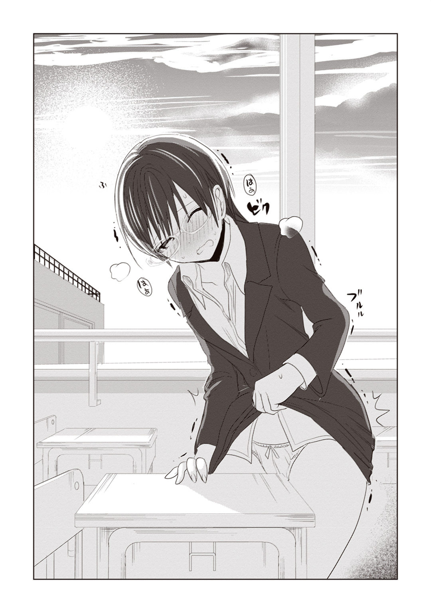
○月○日
多分、これは恋なんだと思う。
最初はただ、教員としての立場から光海君を救いたいと思っていたけれど......彼をじっと見つめているうちに、それじゃ満足できなくなっていたのだ。
あの子を抱きしめたい。あの子と繫がりたい。あの子を自分のものにしたい。
でも、告白なんてできないよね。
私は二十歳の教育実習生。彼は十三歳の中学二年生。私も大人である以上、歳の差とか立場とか条例とか、そういう建前を大事にしなければならないのだ。
ああ、なんて恨めしい社会の仕組み。私はこんなにも光海君が好きなのに。
○月○日
しかし現実は残酷である。
結局私はどうすることもできないまま、教育実習最後の日を迎えることになってしまった。得たものと言えば、たかが数百枚程度の写真データのみ。彼と添い遂げるのに、三週間という時間は短すぎたのだ。
「授業わかりやすかったです」
「楽しかったよ、いい先生になってね！」
「じ、実はオレ、先生に一目惚れしてました！」
生徒たちは笑顔で見送ってくれたものの、私は彼らに心から笑い返してあげることはできなかったと思う。この学校を去ることに、未練しかなかったからだ。
光海君を最後に見たのは、全校集会の壇上からだった。
クラスの列に並んで、じっと体育館の床を見つめる光海君。その憂いを帯びた表情が、どうにも頭から離れない。きっと彼は、これからも延々と繰り返される加虐の日々に、深く絶望しているに違いないのだ。
できることならば、壇上から駆け下りて彼を抱きしめてあげたかった。
ずっと私が守ってあげるよと、優しく告げてあげたかった。
いっそこのまま、ふたりで誰も知らない場所に駆け落ちしてしまおうかとも思った。
でも結局はそんなことは実行に移せないまま、あっけなく全校集会は終わってしまう。実習生と駆け落ちなんてしたら、光海君の将来には傷がついてしまうから。
私は、ぐっと堪えて我慢するしかなかったのだ。
「先生泣かないで」
そんな生徒たちの言葉が、すごく、すごくつらかった。
○月○日
大学に戻って一か月。ここ最近、ずっと憂鬱な日々が続いていた。
ゼミの飲み会に誘われても、友達に旅行に誘われても、全部体調不良を理由に断ってしまっている。
原因はもう、ひとつしか思い浮かばない。光海君のことを思い出すたびに、胸が張り裂けそうなほどに苦しいのだ。
さらさらの黒髪に、つぶらな瞳。華奢な首筋は、陶器のように透き通った白さで――。寝ても覚めても、まぶたの裏に浮かんでくるのはあの子の物憂げで可憐な表情だった。
あの子の近くにいられないのは、身を斬られるよりもつらい。
どうやらあの三週間で、光海君は私の一部のような存在になっていたらしい。彼を見つめることこそが、私にとっては三度のご飯よりも重要な行為になっていたのだ。
ああダメだ。今日はもうこれ以上書けない。涙で文字が滲んでしまう。
○月○日
あまりにも精神的につらいので、講義を自主休講する。
でも向かう先は病院ではなく、光海君の中学校だ。だって、それが私にとっての一番の薬なんだから。
元教育実習生だって言ったら、守衛さんはあっさり中に通してくれた。ありがたい。
あくまで忘れ物を取りに来たという体で、教室の廊下の窓からこっそり光海君の後ろ姿を観察する。
寝癖がはねてて、すっごく可愛い......。
とりあえず、光海君エネルギーの補充には成功。これでしばらくは頑張れそう。
○月○日
ゆうべ寝る前に光海君の写真を眺めていたら、いつの間にか雀の声が聞こえてきていた。おかげで一限はしっかり遅刻。最近こういう日が多いかもしれない。
ああ、光海君。今頃どうしてるだろう。
ひとりでつらい思いをしてないかな。
やっぱり、女の子たちに虐められてるのかな。
○月○日
テレビで希少動物の保護に関するニュースをやっていた。
特別天然記念物に指定されているイリオモテヤマネコが、環境の変化によってその数を減らしている――ニュースを聞いて、私は光海君のことを連想してしまった。
身も心も純粋すぎる彼にとっては、この世界はいわば毒の塊のようなものだ。彼のように無垢な少年は、優しい人間の庇護下になければ生きてはゆけないのだ。
やはりあのとき、なりふり構わず彼を守るべきだったのかもしれない。あの子の周囲が敵だらけならば、強引でも私の下に連れてくるべきだったのかもしれない。
そうだ。それが正解だったのだ。
仮に私が大学を辞めることになったとしても、彼ひとりくらい養っていくことはなんとかできただろう。パートでもなんでもいい。彼のために一生懸命働いて、ふたり仲睦まじく暮らす。多少貧乏でも、愛さえあればそれでいいのだ。それってとっても素敵なことじゃないか――。
今でも、実習の最終日のことは深く後悔している。
○月○日
午前中の講義が休講だったので、今日もこっそり光海君の学校に行ってみることにした。
ベストスポットは、校舎裏の用具室の屋根。ここからなら光海君の教室がバッチリ覗ける。ここを見つけるために、何度も通った甲斐があったというものだ。
今日の光海君は、教室でひとりだけ体操服のジャージを着ていた。もしかして、制服に何かされてしまったのだろうか。可哀そうに。
それでも三年生になった今、以前ほどの悲壮感はないようだ。男子校に進学するために、休み時間も必死になって参考書と格闘している。
がんばれ光海君。陰ながら応援してるよ。
○月○日
源美也。
もし私が光海君と結婚したら、そんな名前になるのかなあ。韻を踏んでいる感じで結構お気に入り。
ああでも、彼がうちの籍に入るって選択肢もあるかもしれない。そうなると、六条光海か......。うん、これも悪くない。
学長挨拶を軽く聞き流しながら、私は来る結婚生活に思いを馳せていた。まあ一応、今日は学部卒業式。将来への展望に胸を膨らませていても、そう間違いじゃない。
早く大人になってほしいなあ、光海君。
○月○日
光海君に会いたい。
大学院のための勉強はなかなかにハードで、キーボードを叩きながらもついつい彼のことを考えてしまう。
ピクチャフォルダに隠してあるterumiファイルには、この二年間撮りためた彼の写真や動画がたくさん保存してあるけれど――でも、やっぱり実物に会いたい。
自分の指じゃなくて、彼の指でこの疼きを止めてほしい。
会いたいよ、光海君。
○月○日
文学部キャンパスで、久しぶりに先輩に会う。
彼女いわく、どうやら私は「叶わぬ恋路に身をやつしている顔」をしているらしい。
うーん、さすが先輩。鋭いなあ。
○月○日
光海君、祝・高校合格！
でも心配なので、初日は登校風景を陰ながら見守ることにする。
満員電車のラッシュの中で、女子高生にもみくちゃにされてしまう光海君。......あらら、びくびく震えちゃってるよ。やっぱり中学時代に培われた女性恐怖症は、すぐには治らないみたい。
でも安心してね。大人になったら、私が優しく手ほどきしてあげるから。
○月○日
光海君の写真を、インテリアにして飾ることを思いたった。
さすがは私の光海君。どの写真も可愛く写っている。
部屋いっぱいの光海君に見つめられながら眠るなんて、すごく幸せな気分。
○月○日
光海君が好き。
○月○日
ああ、光海君の子どもが欲しいな......。
○月○日
光海君。光海君。光海君。光海君。光海君。光海君。光海君。光海君。光海君。光海君。光海君。光海君。光海君。光海君。光海君。光海君。光海君。光海君。光海君。光海君。光海君。光海君。光海君。光海君。光海君。光海君。光海君。光海君。光海君。光海君。光海君。光海君。光海君。光海君。光海君。光海君。光海君。光海君。光海君。光海君。光海君。光海君。光海君。光海君。光海君。光海君。光海君。光海君。光海君。光海君。光海君。光海君。光海君。光海君......。
気付いたら、今日は朝からずっと光海君の名前を書いてたみたい。
ノートが光海君でいっぱいになって、なんだか幸せ。新しい日記帳買ってこなくちゃ。
○月○日
学科のチューターに選ばれた。
これからは普段の勉強以外に、学部生の子たちに色々教えなければならないみたい。
まあ教育実習の経験上、年下受けは割といいほうだし、そんなに不安はないけどね。
ただ、本当に好かれたい年下の子に対しては、アプローチすら出来ないというこのジレンマ......それがちょっと辛いところだ。
○月○日
カフェテリアでお昼を食べていたら、先輩と一緒になった。
どうやら来年の新学期、「絶対に私が喜ぶであろう出来事」が起こるとのこと。
いったい何のことだろう。よくわからないが、尊敬する彼女が言うことだ。これは期待してもいいのかも。
○月○日
やったあ！ 願いが天に通じた！
来年の新入生名簿に、「源光海」の名前がある！ 見間違いでも、同姓同名の別人でもない！ 住所と電話番号を二十回も確認したから大丈夫！
まさか本当に、光海君がうちの大学に来てくれるとは思わなかった。これほど嬉しいのは生まれて初めてだ。もう嬉しすぎて、学生課の掲示板前で小躍りしてしまったくらい。事務員さんたちの生暖かい視線も、今の私には祝福の眼差しにしか感じられなかったもんね。
おめでとう光海君。おめでとう私。
これで来春から光海君も晴れて大学生だ。そう。大学生ということは、人目や条例を気にすることなくお付き合いができるということに他ならない。
ああ、ようやく私は報われるんだなあ。
○月○日
スケジュール帳を片手に、今後のラブラブ生活の予定を立てる。
告白するなら入学式だ。これは絶対はずせない。
そのあとは家に招待して、キャンドルライトの下で豪華ディナー。初めての夜は、やっぱり私から主導してあげなきゃね。光海君、女の子が苦手なんだし。
それからはずっと一緒に暮らすことにしよう。うん、いいアイディア。そうだ、いっそ籍も入れちゃおうかな――。
早急すぎる？ ううん、そんなことはない。だって私は五年も待ったのだ。少しくらい生き急いでもいいじゃない。
さて、色々準備をしなきゃ。ロープとか手錠とか、あと首輪とかも必要かな。
もし光海君が――絶対ないと思うけど――私の想いを拒んだら、そのときはちゃんと、わかってくれるまで説得しなきゃいけないしね。ああ、忙しくなりそう。
でもその前に、ひとつだけ。
どうして先輩は、光海君が紫雲大学に入学することを事前に知っていたのだろう。
もしかして先輩と私の光海君に、何か関係があったりするのかな？
うん。これは、しっかりと確認しておくべきことだよね。
○月○日
先輩の研究室にお邪魔して、話を伺う。
結論から言えば、すごくびっくりした。
まずひとつ目は、光海君が藤原先輩の甥御さんだったという事実。親戚なら確かに、進学先を把握していても当然だろう。世間って狭い。
でもそれ以上に驚いたのは、先輩がしようとしている「研究」の話だった。
どうやら先輩は、源氏の君の心情を理解するために、光海君に十四股をかけさせることを計画しているらしい。
さすがの私も、その話を聞いて目が点になった。藤原先輩には前々からエキセントリックな部分があるとは思っていたが、今回はいくらなんでも発想が突飛すぎる。
だって、光海君だよ？ 女の子に虐められて女性不信に陥った、あの光海君だよ？
そんな光海君が女の子を股にかけるだなんて、想像すらできない。
眉をひそめていた私に、先輩は続けた。
「君はあいつに恋愛感情を抱いているんだろう？ だったら、力を貸してくれると嬉しい」
十四人の女のひとりになってくれ、と、どうやらそういう話らしい。
そりゃあ先輩に言われるまでもなく、光海君とは契りを結ぶつもりではいた。でも、先輩の提案はあくまで私に十四分の一になれということだ。抜け駆けや独占などはご法度らしい。
これはさすがに承服しがたい。
承服しがたいことだったが――でも私は結局、首を縦に振ることにした。
藤原先輩は、中等部の頃からお世話になってきた恩人なのだ。頼みを無碍に断るわけにもいかない。それにたとえ十四分の一だとしても、家族から交際許可が出されたというのは、私と彼にとっては大きな一歩なのだし。
光海君を心から愛しているのは私だけ。
幸せにできるのも私だけ。
彼が何人の女性と関係を持とうが、どうせ結果的には私の下へと帰ってくるはずなのだ。
そんな研究なんか、ふたりの未来には別に関係ないよね。
○月○日
入学式。
スーツ姿の光海君は講堂の新入生席で、友達らしき男の子と何やら盛り上がっていた。
うん、大学一年生のフレッシュな光海君も、予想通りとっても素敵。新一年生の中で一番可愛いのは間違いない。
当初の計画なら、私と光海君のラブラブ生活は今日からスタートするはずだったけど......。うん。ここはじっと我慢。今は先輩の言うことに従って、観察だけにとどめておくことにする。
なあに、待つことには慣れてるんだから。
○月○日
光海君を構内で目撃。
ショートボブの上級生と一緒に、サークル勧誘のビラまきをしていた。
女性が苦手な光海君が、女の子と一緒にいる......？ これはもしかして、例の研究とやらのお相手なのだろうか。
ふたりには見つからないよう、植え込みからじっくり様子を観察する。
相手の子の服装は、パーカーにショートパンツというカジュアル系。派手なタイプではないが、愛嬌のある顔立ちをしている。ああいうあんまり男慣れしてなさそうな子って、童貞くんにはウケがいいんだよね。
うう、なんだかふたり、漫画を読みながら仲良さそうに喋ってるし......。光海君、あの子とどういう関係なんだろう。どこまでしちゃったんだろう。
最初からあんな可愛い子を連れてくるなんて、先輩はさすがに侮れないな......。
○月○日
光海君が、何故か悶々とした表情を浮かべながら廊下を歩いていた。
なんだろう。変なものでも食べたのかな、と思ってこっそり後をつける。
そしたらビックリ。光海君ったら、階段に差しかかったところでいきなり、
「ＳＥＸ三昧な大学生になるんだ!!」
なんて叫んじゃうんだもん。
可愛い顔して男の子だなあ、光海君。通りがかった女の子もビックリしてるじゃない。
だいたいそんなにＳＥＸがしたいなら、いつでも私がさせてあげるっていうのに。
○月○日
光海君が、体育館裏で誰かと話しこんでいた。
相手はこないだの、ショートボブの女の子だ。
とりあえず階段下に潜んで聞き耳を立ててみると、何やら「付き合う」だとか「付き合わない」だとか、シリアスな会話を繰り広げているではないか。
え。何それ、どういうこと。もしかして、実験相手の子に情が移ったとか......？
――そんな子に告白するなんてやめてよ！ 君に相応しいのは、私だけなんだから！
そういう念を送ったのが効いたのか、幸いあのふたりはその場でそのまま別れたようだ。正式な恋人同士になったという雰囲気はない。
ふう、危ない危ない。
ふたりが手でも繫いで歩き出そうものなら、今度こそ光海君に対して実力を行使しなければならないところだった。彼を奪われてまで、先輩との約束に固執するつもりはないんだから。
○月○日
今日は休日。朝から先輩のおうちの近くで張りこんでみる。
目的はもちろん、光海君のホリデースタイルをつぶさに観察するためだ。
外に出てきた彼の格好は、Ｔシャツにジーパン、スニーカーという、ラフで飾り気のないスタイルだった。それでも、元の素材がいい光海君なら何を着ても似合うんだけど。
離れてついて歩いてみると、どうやら村上君のアパートに向かっているらしい。うんうん、男同士の友情を深めるのは健全でいいよね。
彼が友人の部屋から出てきたのは、それから数時間してからだった。
光海君、友達とエッチな話とかで盛り上がったのかなあ......などと私がほっこりしていると、彼のすぐ近くに高級外車が止まった。
中から出てきたのは、やたら派手な女。
目は切れ長、しなやかで細い手足。隅々までお洒落に気を遣っているのか、指先や爪も綺麗に整えられている。ちょっと冷たい感じはするけれど、その一般人離れしたルックスは周囲の注目を集めるほどだった。
美人でお金持ち。一挙手一投足から、光海君を自分の所有物だとでも思っているかのような尊大な態度が窺える。
誤解を恐れず言ってしまえば、ああいうのは私が一番きらいなタイプの女だ。
彼女は親しげな口調で光海君を車内に招き入れると、そのまま車をどこかへ走らせてしまった。
光海君、いつの間にあんな女と親しくなったんだろう。やっぱり例の研究だろうか。
彼があの手の女にほだされるはずはないとはわかっているけれど......どうにも胸がモヤモヤする......。
○月○日
なんだか今日は気分が優れない。昨日、あんなものを見てしまったせいだろう。大学に連絡して、今日の情報処理の講義は欠席させてもらうように伝えることにした。
ああ、いつまでも落ちこんでちゃダメだよね。こういうときは、光海君のことを考えるに限るよ。
壁にかかった彼の笑顔にキスをして、それから自分で自分を慰める。もう何年も繰り返してきたルーティンワークだ。
おやすみ光海君。明日は元気で会いたいな。
○月○日
信じられない出来事が起きた。
光海君が、空き教室で唇を奪われたのだ。
しかも相手はこともあろうに、中学時代に彼をいじめていた女子のリーダー、中将つかさ。ふたりで教室に入って二、三言話したあと、唐突に中将つかさが光海君を押さえつけ、強引にキスをした――。これが、私が目撃したすべてだ。
いったい何がどうしてこんなことになったのか。光海君を尾行していただけの私には、詳しい事情はわからない。
これも中学時代のいじめの続きなのか？
それとも彼女もまた、藤原先輩に用意された実験相手なのか？
何もわからない以上、下手に手を出すわけにはいかない。これも先輩の思惑なのかもしれないのだから。
ああ、なんて私は無力なんだろう。光海君が今まさにトラウマを喚起されているかもしれないのに、何もしてやれないなんて。
○月○日
今日も光海君は、中将つかさと一緒にいる。場所は構内の高級レストランだ。
外のテラスから様子を窺っていたのだが、彼らの会話はどうも恋人同士の語らいには見えなかった。もっと険悪というか、ギスギスしたやりとりをしているように思える。
しかし驚くべきことに、またしてもふたりは口づけを交わしたのだ。
しかも今度は光海君のほうから。こんな白昼堂々、公衆の面前で。
それに対し中将つかさは、彼の横っ面を思い切りひっぱたいた。
私の光海君に何するの、と出ていきたいところだったが――その気持ちを必死に抑えながら、状況把握に専念する。下手に介入しては、光海君に嫌われてしまうかもしれないし。
「男見る目ないんだね、中将さん」
光海君のその言葉だけ、なんとか唇から読み取れた。どういう意味だろう。
傍目には、彼女に無礼を働いた光海君が、平手打ちで成敗されたように見えたかもしれない。でもよく見れば、悔しそうに顔を真っ赤にしているのは中将つかさのほうだし、光海君のほうは、なぜか満足そうにやり遂げた表情をしている。まるで数年来のわだかまりを払拭したような――そんな晴れ晴れとした表情だ。
いったいこれはなに？ 私の知らないところで何が起きてるの？
少なくとも私の知っている光海君は、女の子の唇を奪えるような積極的な少年じゃなかった。もしかしたらこの数か月で、彼は変わりはじめているということなのだろうか。
なんだかすごく不安を感じる。私の光海君が、どこかに行ってしまうような気がして。
○月○日
藤原先輩の研究室に行く。研究と近頃の光海君について、状況を確認するためだ。
「そう焦るな。あいつは近いうちに、君の愛を求めるようになるはずだ」
先輩が告げたのは、それだけだった。その言葉が具体的にどういう状況を指すのか、彼女ほど頭の回転が速くない私には想像もつかなかったけれど。
光海君が、私の愛を求めるようになる――。ああ、そうなればすごくいい。
とりあえず今は、先輩の言葉を信じるしかない......よね。
○月○日
先輩の家の近くで、光海君が女の子と手を繫いでいた。
大人しそうな感じの、お下げ髪の女の子だ。目立つ美人というわけではないけれど、素朴で優しそうな子だった。
あの子もきっと実験相手なのだろうが......なんだろう、やたらと胸が大きかった。はっきりいって、小娘としてはありえないサイズだ。光海君も、ちらちらおっぱいばっかり見てたのが気になる。
うーん、正直、バストサイズについては自信ないんだよなあ......私。
胸が小さくてもベッドで満足させてあげられるように、今のうちに色々勉強しておいた方がいいのかもしれない。光海君のためだったら、なんだってしてあげるんだから。
○月○日
ついに来た。待ち望んでいた日が、とうとうやってきたのだ。
「光海をよろしく頼む」
先輩から直々にお声がかかった。例の研究が、ついに私の段階へと進んだらしい。もちろん、すぐに二つ返事で了解する。
あの日から五年......ついに私と光海君が結ばれる日がやってきた。
表向きは研究に協力する体だったが、私の心の中ではそんなことはもうどうでもよくなっていた。
他の女のことなんて関係ない。
これから光海君が本気で愛するのは、もう私ひとりだけなんだから。
＊
胸をよぎるのは、そんな走馬灯のような思い出の数々。
誰もいない階段の踊り場で、私は「よし」と気合を入れ直した。
――行こう。光海君と、久しぶりにおしゃべりをするんだ。
本当に長い道のりだった。この五年間、ずっと光海君を想い続けてきたのだ。この恋心が報われるのかと思うと、感動もひとしおである。
彼は今、私のいる踊り場のすぐ先――屋上で知り合いと話しているところだ。
「六条先生。情報処理のチューターだよね」
「別に六条先生を見てるわけじゃ」
彼が手にしているのは、十倍望遠の双眼鏡だ。指摘されたのが気恥ずかしいのか、彼は頰を真っ赤に染めていた。
いつも遠くから見ているだけだった光海君が、今度は私を探して見ようとしてくれている......。ああ、これぞまさに相思相愛。
なんだか胸がドキドキする。おへその下が妙に熱い。
震える身体を両手で抱きしめながら、私は、すう、はあ、と深呼吸を繰り返した。
大丈夫。彼は私のことが好き。絶対に愛してくれるはず。
そう自分に言い聞かせながら、私はゆっくりと彼の背へ向けて歩き出す。
「......悩みごとかな？ 源光海君」
それが、私と彼の再会だった。
初出 源君物語 並びの巻 書き下ろし
ジャンプジェイブックスDIGITAL
源君物語 並びの巻
著者 稲葉みのり／田中創
© Minori Inaba 2015/© Hajime Tanaka 2015
２０１５年10月31日発行
この電子書籍は、ジャンプジェイブックス「源君物語 並びの巻」
２０１４年11月25日発行の第３刷を底本としています。
編集協力 藤原直人
長澤國雄
発行者 鈴木晴彦
発行所 株式会社 集英社
〒１０１－８０５０
東京都千代田区一ツ橋２丁目５番10号
０３－３２３０－６０８０（読者係）
デザイン 五十嵐卓也
制作所 株式会社ＩＣＥ
本作品の全部また一部を無断で複製、転載、改竄、インターネット上に掲載すること、および有償無償に関わらず、本データを第三者に譲渡することを禁じます。なお個人利用の目的であっても、コピーガードを解除しての複製は、法律で禁じられています。